| トゥルー ラブ 騎士の涙姫 | |
| 七海 ユウリ | |
| フランス書院 (2011) | |
【ティアラ文庫】
トゥルー ラブ 騎士の涙姫【イラスト付】
七海ユウリ
イラスト／くまの柚子
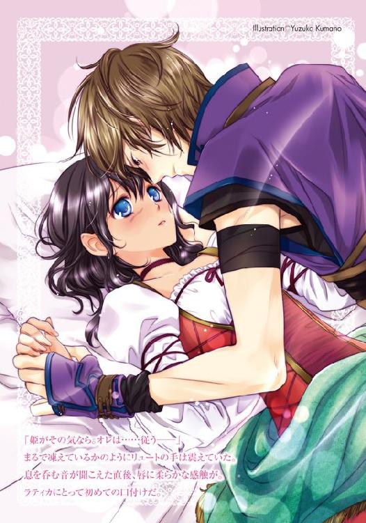
ランドーラ大陸の南に位置する砂漠に囲まれたルビア王国は、極めて雨量の少ない国である。
命の源である水を国内で得る手段がないこの国は、鉱物採掘と、それらを加工する技術により発展してきた。そのためか、ルビアの民たちは勤勉であり、今後は大陸経済の中核となると予想される。
ただその国には、とある不善な習慣が根づいていることを、先日私は視察をしていて知らされることになった。
ルビア人の中には『涙子』という、涙を流すことにより雨を降らせる、雨乞い能力を持つ者たちが存在しているという。
そんな彼らを捕える『涙子狩り』という悪習を歴代のルビア国王が布告していたそうだ。
捕えられた涙子たちが水不足を補うため、どんな方法で涙を流させられていたかは、君たちにも容易に想像できることだろう。その証拠に、捕えられた涙子たちの足取りは一切掴めていない。
涙子狩りは水不足が解消された現在まで密かに続き、闇商人や一部の貴族らによって、他国への見世物として売買されるようにまでなった。
このような行為を、当教会は決して許してはならない。
士官一同、速やかに涙子たちの救済、またルビア国王への諫止に務めるよう命ずる。
『聖ランドーラ教会にて 47代目大司祭アルキス・ルーウェンの、紅獅子の月の演説より――』
プロローグ 最悪の出会いは急な口づけ
「やっと出会えた。ラティカ......いや、姫」
少年が膝をついてうっとりと呟いた瞬間、ラティカは表情を曇らせた。
「はぁ？ 姫？」
呆れて聞き返すと、その少年は「ええ、そうです」恭しく片手を伸ばしてこちらに差し出してくる。
「君こそ我が姫、我が理想。長い旅路の果て、こうしてやっと出会えた......。騎士として、こんなに光栄なことはありません......」
「何よそれ......」
陳腐な詩を読み上げたような台詞と態度に、ラティカの顔は渋くなる。
それに目の前の少年の身なりはまったくと言っていいほどに、彼の言葉に合っていなかった。腰に剣を差してはいたが、シンプルな胸当てには錆が浮かび、髪の毛はボサボサ。
ここがルバーブ畑の中ということもあり、膝をついた時に跳ねた泥が頬にまでついていて、そのどこからも騎士らしさは感じられない。
そもそも自分は姫と呼ばれるような身分でもない。初めて会った瞬間におかしな告白をされ、頭が混乱してしまいそうだ。
まわりを見れば、姉妹たちもポカンとした顔でこちらを見ている。少年の後ろに立つラティカの養父である神父も、呆れた苦笑いを少年に向けるだけで助けてくれなかった。
「一目見た瞬間からオレの心は貴女に奪われました。姫、どうか騎士としての忠誠と、このオレ自身の愛をお受け取りください」
だが目の前の少年は、そんなまわりやラティカの唖然とした様子など気にすることもなく、瞳を輝かせて見上げてくる。
――一体なんなの？ この子......。
そもそも自分はこういう軽薄な男は大嫌いだった。
こんな軽々しく安っぽい愛の言葉を呟くなんて、一体どんな神経をしてるのだろう。異国からやって来たと神父は紹介していたが、異国の男性にとってこういう歯の浮くような挨拶は日常茶飯事なのだろうか。
ラティカは今まで自分のまわりにいなかったタイプの少年に、どう対応していいのかわからず立ちつくしてしまう。
すると「姫......」再びの呼びかけと同時に手を取られた。
強引に添えられた少年の手は汗で湿っていて、その感触に思わず身震いしそうになる。
「やっ、ちょっとやめてよ......」
手を引っこめようとするも、強く掴まれて離れない。それどころか手の甲に少年の顔が近づいてきた。
「姫、どうか忠誠の口づけを......」
囁いた少年の唇が手の甲に触れる。直後――
「な、な......何すんのよっ!!」
ラティカは自由なほうの手を振り上げ、彼の頬を強く叩いていた。
少年の体は、騎士と自称する割には意外なほどに簡単にグラつき、畑の中に尻餅をついてしまう。
まわりにいた姉妹も、神父も、まさかラティカが手を出すとは思いもしなかったのだろう。皆、唖然としたまま固まり「ひ、姫...!?」少年も頬を手で押さえて目を丸くするばかりだ。
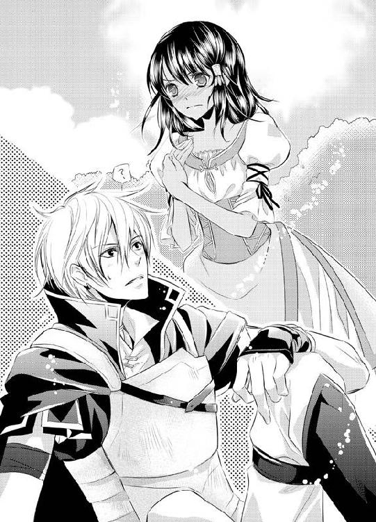
「あの......オレ、何か失礼なことを？」
「失礼なこと？ すべてが失礼に決まってるでしょ!!」
出会ったばかりだというのに一人勝手に盛り上がって、人を姫と呼ぶことはもちろん、告白することも、手の甲にキスをすることもすべてが、だ。逆に無神経じゃない行動を探すほうが難しい。
「何が姫よ、馬鹿馬鹿しいっ」
これ以上この場所に留まっていても気分は悪くなるばかりだと、ラティカは収穫したルバーブを抱えて歩きだした。
背後から「ひ、姫......」蚊の鳴くような情けない声が聞こえるが、もちろん振り返る気にはなれない。これ以上このおかしな少年に関わるのはごめんだ。
だが少し歩いたところで「待ちなさい」神父に呼びとめられてしまった。
「いくらなんでも少しやりすぎだよ。謝りなさい」
「謝る？ どうしてあたしが？ 先にふざけたことをしてきたのはあっちでしょ？」
声を荒げて反論すると「でもね、ラティカ」神父は諌めるように言った。
「確かに彼も調子に乗ってしまったと思うけど。先に手を出したのは君のほうだよ」
「それは......そうだけど――」
暴力がいけないということはもちろんわかっている。
でも手の甲へのキスといえども、自分にとっては生まれて初めてのキスだったのだ。
そんな初めてのキスを、出会ったばかりの、奇妙で軽薄な少年に奪われてしまったショックは大きい。
「いくらなんでもお客様を殴ってはいけない。ほら行こう」
引き戻そうと神父が手を差し出してくるが「いやよっ」ラティカは身を捩らせて拒んだ。
「謝るならあとで謝るわ。今はそんな気持ちになれない」
それだけ言って彼にすら背を向ける。普段なら育ての親である相手に強く口答えをすることなんてなかったが、今は状況が違うし納得もいかない。
子供のように膨れるラティカの姿に、神父は「あとでだね」諦めの表情を浮かべた。
「でも、泣いては駄目だよ」
神妙そうな声に「わかってる......」下唇の裏側を噛みしめて頷き、ラティカは歩き出す。
少年の元へと戻った神父が「申しわけない。ちょうど思春期なもので」人当たりのいい声で謝るのが聞こえる。ラティカの大好きな落ち着いた声だ。
でも今はその声を聞くとひどく悲しくなる。それと同時に神父に対し、口答えしてしまった後悔が波のように押し寄せる。
空を見上げれば、さっきまで晴れ渡っていた空に暗雲が立ちこめはじめていた。
「絶対に泣くもんですか」
まるで自分の感情を表現しているかのような空を睨みつけ、ラティカは呟いた。
海と山に囲まれた孤児院の朝は早い。
窓から一望できる水平線から太陽が頭を出し、海面が輝きを見せはじめた頃、一人の少女が木製のバケツを手に孤児院の中から姿を現した。
少女は井戸から水を汲み上げると、その場で身支度を整えていく。
黒く艶やかな前髪を耳にかけて、バケツから両手で水をすくい顔を洗う。そして褐色がかった健康的な肌についた水滴を布で拭うと、少しだけ気の強そうな黒い瞳を眩しそうに空へと向けた。
「今日もいい天気ね。ま、当たり前か」
彼女の名前はラティカ。十五歳になったばかりの、まだあどけなさが残る少女だ。
孤児院に住む子供たちの中で一番の年長である彼女は、こうして毎朝早くから院内での仕事に取りかかる。
再度バケツに水を汲み、古い教会に隣接した我が家である孤児院の中へと戻っていくと、エプロンを腰に巻いて釜に薪をくべた。石を打って火を熾すと、鍋に水を入れて湯を沸かし、戸棚から先日焼いたばかりのパンを取り出していく。
するとドタドタと数人の足音が近づいてくるのがラティカの耳に届いてきた。他の兄弟たちが起きてきたのだ。
「おはようラティカ」
「今日も早いわね。私、まだ眠くって......」
最初に厨房にやって来たのは、数人の少女――ラティカの妹たちだった。
ラティカよりも一、二歳年下の彼女たちも顔を洗うと慣れた手つきでエプロンを巻き、家事に取りかかっていく。
「今日は卵どうする？ 昨日は産んでなかったから今日はたくさんあると思うけど」
「あ、それもそうね。ゆで卵にしようか？」
「ラティカ。水はどれくらい？ 野菜も少しは取ってくる？」
「そうね。あとナッツも多めにお願い。夕食のパイも仕込むから」
そんな会話のやり取りをしていると、耳ざとく聞きつけたかのように、今度は弟たちがバタバタと床を鳴らしてやって来た。
「パイだって!?」
「聞いたか？ 今日はパイが食べられるぞ！」
「やったっ。ラティカ姉ちゃんのナッツパイだ！」
育ち盛りの彼らによって小さな厨房はさらに賑やかさを増し「ほらっ、はしゃいでないで、男の子は早く顔洗って牛乳持ってきてよ」必然的に年上のラティカたちの声も大きくなる。
だが、こうしてにこやかに挨拶を交わす兄弟たちは、ラティカを含めて皆誰一人として血の繋がりを持っておらず、元は他人同士だ。共通する部分は何かしらの理由があり、この孤児院で暮らしているということだけ。
それでも、古びた朽ち果てそうな場所でも、彼らにとっては我が家には変わりなかった。皆、自分たちに割り当てられた仕事へと取り組んでいく。
そして最後に「朝から賑やかだね」厨房に眼鏡をかけた男性が顔を出した。
その姿を見た子供たちが「神父様！」と笑顔を浮かべて駆け寄っていく。
「おはよう神父様」
「あのねっ！ ラティカ姉ちゃんがナッツパイを作ってくれるって！」
「神父様、今日は海で遊んでいい？ いいお天気だよ？」
纏わりついて次々と声をかけてくる子供たちに、神父は柔らかな笑みで答える。
「おはよう。みんな朝から元気だね」
彼の名はグレミオ。この孤児院に住むラティカたちの育ての親でもある神父だ。彼はこの孤児院で子供たちの面倒を見ながら、神父としての神職にも従事している。
年は三十五歳。常に神父服を身につけているせいか、黒々とした豊かな髪であるせいか、とてもその年齢には見えないと、彼を見た人は言う。
だがラティカはそんなグレミオの目元に現れている疲れを見逃さなかった。
「また徹夜したのね。目の下にクマができてる」
兄弟たちがそれぞれの家事のために厨房から出ていく中、沸かした湯をポットに注ぎながらラティカが呆れ口調で尋ねると「少しは寝たよ」グレミオは厨房にあるテーブルの前に腰かけ、手にしていた羊皮紙に視線を落とす。
「来月は収穫祭もあるし、やることがたくさんあるんだよ。あと、今日の昼に一人お客が増えると思うから、二階の突き当たりの部屋を用意しておいてくれるかな？」
「ええっ！ また？」
お茶を差し出した直後、さらりと「お客」の話をされ、ラティカは表情を渋らせた。
小国が散らばるように点在するランドーラ大陸の東の海に面した国、ブルーナ国内にラティカたちの住む孤児院はある。
その場所は大陸の最東端に位置し、孤児院というだけで人々の往来が少ない場所であるはずなのだが、施しや一夜の宿をアテにやって来る旅人や、グレミオの神父としての人柄を聞きつけて教示を求める者など、来客が絶えることはなかった。
「で、今回のお客は一体どういう理由でうちにくるの？」
「先日港町の教会に寄った時にあちらの神父に頼まれたんだよ。ベッドが足りないらしくて、うちで面倒を見てもらえないか、ってね」
「面倒って......何日泊まる予定なの？ その人」
「次の船が出るまでの三日間だけだよ。昼前に馬車で迎えに行ってくるよ」
「宿賃は？」
「たぶんないだろうなぁ。そもそもお金があったら町の教会で寝泊まりしてないと思うし」
くすくすと苦笑するグレミオに「笑い事じゃないわ」ラティカは詰め寄った。
「そもそも、そのお客は次の船に乗る旅賃はあるわけでしょう？ それなのにこんな町から遠い孤児院にまで来て宿を借りるなんて......」
一体どんな図々しい人間なのだろう。と、続けようとすると「まあまあ」グレミオはお茶の入ったカップを手にしながら宥めた。
「人にはそれぞれ事情があるんだよラティカ。それに余裕がある者が余裕のない者を助けるのは当然のことだ。迎えに行くのだって町に行くついでだしね」
「それはそうかもしれないけど――」
――自分自身は余裕なんてないくせに......。
お茶を啜るグレミオを見つめ、心の中で呟いた。
一人で孤児院と教会を切り盛りしているのに、こうやってふらりと立ち寄る客たちの面倒を、寝る間を惜しんで見てやってるのだ。昨日だって数日前から泊まっている旅の魔道士にいろいろと教えていたし、今だって羊皮紙から目を離さない。
食事の準備や身のまわりの世話などはラティカも手伝えてはいるし、食べる物にも困らない程度の自給自足の生活はできている。
困った者に手を差し伸べ、寝場所や食べ物を分け与えるべきことも、グレミオからの神の教えを受けて十分に理解している。
ただ、この孤児院にやって来る客たちは皆、善意の施し以上のものを彼に求めている。そんな気がしてならなかった。特に今回のような旅賃を持っていて孤児院に無料で宿と食事を用意してもらおうという客がそうだ。
「神父様は人がよすぎよ」
「だって〝神父〟だからねぇ僕は」
「......それを言われたら何も言えないわ」
人がよすぎるのが玉に瑕。そんな言葉を呆れて浮かべながらラティカは天井から吊るしてあった干し肉を下ろした。
「とにかく人助けもいいけど、無茶はしないで少しは休んでね。神父様が倒れないかどうか、あたし心配だわ」
背を向けて干し肉の紐を解いていくと「あはは、そんなに心配しなくても大丈夫だよ」笑い声と共にグレミオが椅子から立ち上がる音が聞こえる。
「なんだかラティカは僕の妻みたいだなぁ。お茶、ご馳走様」
そして髪の毛がくしゃりと撫でられた。一瞬のことだったが心臓の鼓動がドクンと高鳴ってしまう。そして「妻」という言葉に頬がみるみると熱くなった。
「な、な......何言ってるのよ神父様ったらっ」口をパクパクさせて振り向くが、もうそこに神父の姿はなかった。そのかわり、ニヤニヤとこちらを厨房の入り口で覗いている姉妹や兄弟たちの姿がある。
「まったくラティカったら、本当に神父様のことが好きなのねぇ」
「そんなに赤くなっちゃって」
「本当だ、ラティカ姉ちゃん顔が真っ赤だ！」
「真っ赤真っ赤だ！ 怒った時みたいに真っ赤な顔だ～」
次々と厨房に入ってきた弟たちはラティカを囲むと、はしゃぎ出す。ラティカがグレミオに恋をしているのは、孤児たちの誰から見ても丸わかりだったからだ。
「もうっ、いいからお皿でもテーブルに並べてきなさいっ」
ラティカは顔を赤くしながら厨房から弟たちの背中を押し出すと、いまだニヤついた視線を向ける姉妹たちを急かすように言った。
「あなたたちもそう。今日はお昼にお客が来るんだからっ」
「ええ～っ？ またなの？」
「この前も神父の卵の人が来たばかりじゃない。今だって魔道士のお客さんがいるのに」
口を尖らせる姉妹たち、それをラティカは「しょうがないでしょ、お客なんだから」自分がグレミオに言われたように彼らを宥めていく。
「とにかく今は無駄なおしゃべりしてる暇はないの。朝は忙しいのよ？」
「もーラティカったらほんと人使い荒いんだからー」
「ほんと、お母さんみたい」
クスクスと笑いながらも、姉妹たちは素直に卵を割り、畑から取ってきたばかりの野菜を洗いはじめる。
たしかに彼女たちの言う通り、孤児院で年長の自分の立場は大家族の母親のようなものだと思った。年の近い妹たちは手伝いをしてくれる娘。弟たちはそのまま手のかかる息子たちだ。
――となると、やはり父親は神父様だろうか？ そこまで考えたところで慌てて首を横に振り、妄想を消し去る。
「ええっと......昼にお客が来るからそれまでにベッドの用意と、あとお昼も多めに作らなくちゃ。薪も多めに......」
ラティカはいまだ火照りが消えない頬を腕で拭うと、ぶつぶつと呟きながら朝食の準備を続けていった。
養父であるグレミオを好きになったのはいつからだろう。
食事を終えたラティカは浜辺に腰かけ、ぼんやりと自分の右手の薬指にはめられた指輪を見下ろしていた。
深い緑色をした石のついたそれは古びていて、元々は銀色だったであろうリングの部分は黒く変色し、所々傷もついている。
アンティークといってもいいほどに古いその指輪は、昔グレミオからもらったものだ。
産まれてまもなくこの孤児院に預けられ、彼の一番最初の養女となったラティカは生みの親の顔を知らなかった。
物心がついた頃「両親は理由があってまだ迎えに来られないだけ」と聞かされたが、それはグレミオが自分を悲しませないために考えた嘘なのだろうと、子供心に理解していた。ブルーナにはラティカと同じような褐色の肌を持った人間はいなかったし、それに自分には不思議な力があったからだ。
その能力というのは『自分が泣くと雨が降る』というものだった。
初めはただの偶然なのだと思っていた。曇り空の時に限って悲しくなったり涙が出てしまうのだと......。でもその後も必ず自分が泣いた直後に雨が降ることが続いた。少し悲しい時は小雨で。とても悲しい時は土砂降りで。
グレミオもラティカの不思議な偶然に気がついていたらしく「泣いては駄目だよ。君が泣くと空も悲しむ」そんな言葉をかけ、ラティカが泣くことに関してだけは注意を払うようになっていた。
だが元々生まれつきの性格なのか、優しい養父の育て方のおかげなのか、自分のそんな不可思議な能力や出生を悲観することもなく、今では雨を降らせるほどに涙を零すことはない。
ただ一度だけ、激しく自分の出生を嘆き、どしゃぶりの雨を降らせた出来事があった。
それは今から約五年前、ラティカが十歳の時のことだ。その日グレミオは一人の少女を孤児院に連れ帰ってきた。
親に捨てられたというその少女は、最初は口数が少なく泣いてばかりだったが、孤児院で過ごすうちにいつしか明るさを取り戻し、どこに行くにも、何をするのもラティカと一緒。肌の色は違えど、まるで本当の姉妹のように彼女たちは仲よくなった。
でもそれから一年ほど経った頃、彼女を捨てた両親がグレミオの元へやってきたのだ。
彼女の両親はグレミオの前で泣いて許しを請い、娘とまた一緒に暮らしたいと言っていた。あの時の怒りを浮かべた養父の顔は今でも忘れらない。
結局その後、少女は両親と共にラティカたちの元を去っていった。
少しだけ警戒しながら、でも嬉しそうにラティカとグレミオに手を振って、両親と共にこの孤児院からいなくなった。
その後彼女がどうなったかは知らない。ただあの時両親に囲まれて幸せそうだった彼女の姿を見て、突然ラティカの中に羨望と嫉妬、そして虚脱感が波のように襲いかかってきたのだ。
「どうしてあたしにはお父さんとお母さんがいないの？」
少女がいなくなり、グレミオと二人きり。
ラティカは自分の両親について再び尋ねていた。
今度は素朴な疑問としてではなく、悲しい気持ちをふんだんに抱え、自分を憐れみながら。そして養父を責めるように。
「どうしてあの子には迎えが来るのに、誰もあたしを迎えに来てくれないの？」
外では激しい豪雨が鳴り響いていた。古い教会の所々で雨水が漏れ、不規則で不快な水音が響く。床に落ちた水が染み広がるようにラティカの悲しみも「どうして？」と、尋ねているうちにどんどん大きくなっていく。
そして叫んでいた。
「あたし、本当はいらない子だったから捨てられたんでしょ？」
去っていった少女と自分を見比べてしまっていた。その時は自分に両親がいないことがひどく寂しく惨めだった。昔「いつか迎えに来てくれる」なんてその場限りの優しい嘘をついたグレミオが憎くさえ感じるほどに。
ひとしきり泣き叫んでからラティカがグレミオを見上げると、彼は苦痛に満ちたような悲しそうな顔をして言葉をなくしていた。
そして教会の外を降りしきる雨を見て、悲しそうに呟いた。
「ラティカ......君はね――」
その時の言葉は、雨音にかき消されて覚えていない。
次に覚えているのは、泣きじゃくる自分を彼が強く抱きしめてくれたことだけだ。
それと、この古びた緑色の石のついた指輪を渡してくれたことだけ。
「これは君の両親が持っていたもの。君の両親は君を捨ててなんかいない。絶対に君の親に会えることを、僕は命をかけて誓う、本当だ。だから今は許しておくれ、泣かないでおくれラティカ」
生まれて初めて聞いた養父の涙声だった。
思い起こしてみれば、あの時からラティカは涙らしいものを見せたことがなかった。
あれ以来グレミオはラティカに何かつらいことなどがあると、普段の穏やかさが信じられないほどに慌てた様子で駆けつけ、祈りを捧げるように言うのだ。
「泣いては駄目だよ。泣いては駄目だ」
だから自分も我慢する。どんなに悲しくても、転んで涙が出そうになっても、あの時の悲しそうなグレミオの顔は二度と見たくないから涙を呑みこむようになった。
もうこれ以上養父である彼を悲しませたくない、心配をかけさせたくない。
その気持ちはどんどんと強まり、いつしか恋しいという気持ちに変わってきていた。
人を好きになるのは不思議なことだと思った。もやもやして、むずむずする。かきむしりたい心は胸の中から取り出せない。とにかくもどかしいのだ。
そのせいだろうか、今はグレミオの行動、言動、何もかもが気になるのだ。
だからこそ、つい最近気がついたことがある。柔らかな物腰に温厚誠実なその人柄から彼を特別な意味で慕うのは、自分だけではないということを。
耳元に馬の駆ける音が聞こえてきて、ラティカは反射的に指輪から顔を上げた。
ちょうど道の向こうから馬に乗った男がやって来ていた。男はラティカの姿に気づくと、挨拶代わりに被っていた帽子の鍔をそっと下げた。ラティカもそれに答えて手を振る。
彼は孤児院から少し離れた港町に駐在するブルーナ国の兵士だ。月に二度ほどグレミオに手紙を届けに来る。案の定、馬の音に気がついたグレミオが教会から出てきたのが見え、ラティカは自然とその姿を目で追っていた。
その手紙が来るとグレミオはどんなに忙しい時でさえ、祈りの最中でさえそれをとめて、一人部屋へと籠ってしまうのだ。そして部屋から出ると大概はどこか落胆したような様子を見せることが多い。
自分のこと以外で滅多に悲しむことのない養父を、あんなにも悲しませるなんて、あの手紙には一体どんなことがが書かれているのだろうと思う。
それに一番気になるのは手紙の送り主の名だった。一度だけ、グレミオが不在の時に代わりに手紙を受け取ったことがある。
『親愛なるグレミオへ、心をこめて。――エスメラルダ』
封書に書かれていた送り名は、どこから見ても女性のもの。それに手紙の表に書かれた一文に、十五歳の少女の心はざわめきを隠せない。
エスメラルダとは一体誰なのだろう。ここから近い港町でも聞いたことのない名前だ。
でもまたどうせ、同じように落胆させるようなことが書いてあるに違いないと、兵士から手紙を受け取るグレミオの姿を見て思う。
だが、なぜか今日の彼の様子は違っていた。兵士が去るとグレミオはその場で封を切り、中から便箋を取り出して、貪るように文面に目を通している。
――どうしたんだろう。何が書いてあるんだろう？
いつもとは違う養父の態度に不安を覚え、彼から目を離せない。すると「まーた見つめてる」茶化すような声をかけられて我に返った。
「ラティカは本当に神父様が好きなのね」
「そんなに気になるなら、尋ねてみればいいのに。手紙の相手が誰なのか」
振り向けばニヤニヤと顔を見合わせる姉妹たちだ。
「べ......別に、気になってなんかないわよ」
もちろんそれが嘘だということは姉妹からもお見通しだ。ラティカの図星すぎる反応に含み笑いを浮かべながら、姉妹たちがからからと笑う。
するともう一つ、足音が聞こえてきた。
「やあ、お嬢さんたち。今日も華やかだね」
背後から鼻にかかったような甘ったるい声をかけられ、ラティカがギクリと肩を震わせる中、姉妹たちは「シアンさんっ」色めき立った声を上げる。
「今日はどこかお出かけですか？」
「うん、これからグレミオ神父と一緒に港町へね」
彼の名はシアン。魔道士で賞金稼ぎを生業としている、現在この孤児院で寝泊まりをする客だった。
長く艶やかな銀髪に、涼しげな目元。身に着けているローブは怪しげな黒紫色で、手には杖。いかにもな魔道士の風貌の彼に、ラティカの姉妹たちは皆、なぜか夢中だ。
「帰りに何かお土産を買ってきてあげよう。何がいいかな？」
「本当!? じゃあ私、キャンディがいい！」
「私はね、私はねっ――」
シアンを囲み、姉妹たちがきゃあきゃあとした声をもらす。
だがどこか気障な様子を見せるその男を、ラティカはどうしても好きになれなかった。
――神父様とは正反対ね。
ラティカにとって男の基準はグレミオただ一人だ。
温和な神父と比べると、どうにもこの男は鼻につく気がしてならず、妹たちのように彼に何かをねだる気にはなれない。
しかしシアンはそんなラティカの不審そうな態度に気づかないのか「君は何がいい？」ラティカの肩に親しげに手を回して尋ねてくる。
「あ、あたしは結構です......」
思わず顔を引きつらせてしまいながらラティカが身を捩ると「相変わらずだなぁ君は」さらにシアンの顔がこちらに近づいた。
「いつも世話になっているんだ。それくらいさせておくれよ」
「いえ......本当、好きじゃないですから甘いものって......」
もちろん甘いものが嫌いなのは嘘だったが、心も体も早く彼から離れたいと口からでまかせを言ってしまう。するとようやく彼の手が肩から離れた。
「それならラズベリーのネクタルでも買ってきてあげるよ。じゃあねお嬢さん方」
ようやく彼の姿が消え、ラティカがホッと胸を撫で下ろすと「素敵ね、シアンさんて」熱に浮かされたような声を姉妹たちが漏らした。
「背も高いし、格好いいし、それでいて魔道士なんて」
「本当。ずっとここにいてくれたらいいのに」
暢気に話す彼女たちの言葉に「ずっと？ それは困るわ」ラティカは顔を渋らせる。
「今日からまた一人お客が増えるのよ？ お客が増えるってことは忙しくなるってことなのよ？」
「でも、別に一人二人増えたって、私たちが手伝うことが増えるわけじゃないじゃない」
「そうよ、ご飯も掃除も洗濯も一人増えたってどうってことないわ」
「そうじゃなくて、神父様の負担も増えるの。あの魔道士だってそうじゃない。昨日もいろいろ神父様に夜まで質問してたし......」
そこまで言ったところで「本当、ラティカの頭は神父様でいっぱいね」姉妹たちの表情が再びニヤける。
それを言われてしまってはもう何も言えない。
ただ、グレミオの負担が増えるのは確かなのだ。孤児院を営みながら神父の仕事も兼ね、それでいて宿を求めてくる旅人の相手をする彼の負担は大きいはずだ。
人助けに同調はできるが、グレミオの負担を増やすのは別だ。大分偏った考えだとは思うが、今の自分には何よりも養父が無理をしないかどうかだけが心配なのだ。
「とにかく、あんまり長居されるのは、あたしはいい気がしない」
「はいはい、ラティカらしいわね」
呆れる姉妹たち。するとそのうち一人が「そういえば」思い出したように言った。
「さっき神父様から聞いたけど、今日来るお客さんて騎士なんだってー」
「騎士？ 騎士ってあの騎士？」
「そう騎士。私、騎士を見るの初めて！ ブルーナ国の兵士はよく見るけど、兵士と騎士ってどう違うのかしら？」
「でも騎士って、その呼び名からして素敵よねっ。楽しみだなぁ」
さっきまでは魔道士が素敵だと言っていたのに次は騎士の話だ。
ラティカは呆れながらも、そんな彼女たちとグレミオのことで心が浮つく自分は、大して変わらないのだと苦笑し「まあいいわ」と立ち上がった。
「さ、あたしたちはそろそろお昼の準備はじめましょ」
「あ、もうそんな時間？ お昼、何作る？」
「ルバーブを摘もうかと思ってる」
たしかちょうどいい頃合に育っていたはずだ。
「ルバーブ？ 砂糖漬けにしたいわね！」
「じゃあ、競争ねっ」
姉妹の一人が畑のほうへと駆け出し「負けないわよ！」ラティカも走り出す。
時折、おかしな客も来るし、あまり生活が豊かとは言えないが、ラティカの住むこの孤児院は平和だった。
どんなに貧しくても、両親がいなくても、妙な能力を持って生まれたとしても。
兄弟がいて姉妹がいて、グレミオがいて、彼らの側に自分がいられるからこそ、きっとそこには幸せな未来の予感があって――。
天を仰げば、晴れ晴れとして雲ひとつない青空。
ずっとこの状態が続けばいいと思っていた。それだけで自分は幸せなのだと信じて疑わなかった。
その幸せで平和な日々が、数時間後グレミオが連れてきた少年との出会いによって消え去るとは、その時のラティカには想像もつかなかった。
失恋と旅立ち 雨降る中で奪われて......
日が暮れかけた頃、ようやくラティカはその少年と顔を合わせる気になった。
軽くノックをして二階の客室に入ると、右頬を赤く腫らしたままベッドに腰かける彼に向かって頭を下げる。
「さっきは叩いたりして、ごめん」
ただその謝罪の言葉は、発した自分自身が驚くほどに棒読みの、心の籠っていないものだった。
でも今はこれが精いっぱいだ。自分は大好きなグレミオから言われ、謝ったまで。正直怒りはまだ消えていない。悪いのはあくまで先にキスをしてきた少年のほうなのだ、という気持ちのほうが強かった。
まともな人間ならこんな謝罪を受けたら憤慨するだろう。だが、ラティカのそんな誠意の籠っていない言葉に、目の前の少年は感極まったように目を潤ませていた。
「そんな。謝らないでください姫。突然あんなことをされたら驚くのも当然ですよね。あれはオレが悪かったんです。オレこそ、申しわけありませんでした」
「え......」
ベッドから降りてひざまずいた少年に、ラティカは驚きの表情を浮かべる。
格好はまだ大げさではあれ、彼も反省しているらしかった。その姿を見て、ラティカは自分があまりにも子供染みていたのだと省みてしまう。
考えてもみれば、手の甲へキスされただけなのだ。唇にされたわけではないのだから、あまり怒らなくてもよかったんじゃないかと、さっきまでの怒りはどこへやら、今になって思いはじめてしまう。
「う、うん。ごめんね。あたし、あんなことされたの初めてだったから......」
そしてようやく心からの謝罪が口をついて出てきていた。
彼の名はリュート・グル・ハウロック。年は十七歳。
見た目こそボロボロの鎧を身に着けてはいるが、伯爵騎士の跡取りで、この広いランドーラ大陸を剣一つで旅をしているとグレミオは紹介していた。騎士というだけでも驚きなのに、伯爵の称号もあるらしい。
見た目や行動は目に余るところがあるが、相手はお客様だ。ラティカは気を取り直してベッドに腰かけた。ぽんぽんと、隣を叩くと素直に彼も隣へと座る。
「ねえ、リュートはどこの国から来たの？」
「オレは、その......ルビア王国からです。っていうか、初めて姫に名前を呼ばれた......」
一瞬、何か考えこむようにして答えたリュートだったが、名前を呼ばれたことがよほど嬉しかったのだろう、照れたように微笑む。
その笑顔を見て、たどたどしく強張った空気が柔らかくなった気がした。心に余裕が出たこともあるのだろう。改めて彼を見て、そして彼の手に何かが握りしめられていることに気がついた。
「ねえ、それって何？」
「あ、これですか？ 石彫りの人形です」
手の平を開いて見せてくれたそれは、青い石を人型に彫ったものだった。馬に乗り、剣を掲げる騎士の姿をしている。
「すごい。こんなに細かい彫刻を見るの初めてよ」
「これは弟の宝物なんです」
「弟さんの？ じゃあその子も今は騎士を目指してるの？」
「......いや、その――」
少年は、なんとなく言いにくそうに口を噤み、そして続けた。
「五年前に病気で亡くなって、もういないんです」
「そうだったの？ ごめんなさい......」
気まずいことを聞いてしまったと、すぐに謝るラティカ。だがリュートは「いえ、かまいませんよ」その人形を優しく手の平で弄びながら微笑んだ。
「でもここはいいですね。子供たちも皆明るく元気で、昔の弟を思い出して、とても温かい気持ちになれる」
懐かしそうに細めた彼の目には、今は亡き弟の姿が浮かんでいるのだろう。ラティカは憂いを含んだ少年の顔を見つめ「やんちゃすぎて私たちじゃ手が負えないけどね」と呟く。
「年長者は私を含めて女ばかりだから、いつも弟たちに振り回されてるわ」
「あの年頃なら仕方ないですよ」
「ていうかリュート。敬語なんて使わなくていいわ。私のほうが年下なんだし」
人懐っこくあどけない笑みを浮かべられ、ラティカもまたつられて微笑んだ。
「あと、その姫っていうのはやめてほしいんだけど」
「でもオレにとっては見た瞬間から姫でしたから」
「そう......まあ、姫でいいわ」
別に悪気があって言っているわけではないようだし、それに彼も数日でいなくなる客の一人、無理やり呼び名を直させることもない。
ただどうしても気になることが一つだけあった。隣に腰かけた直後から、リュートの体がガチガチに固まっているのだ、膝の上で握りしめた拳は緊張しているのか固く握られたまま震えている。顔を見れば表情を固めたまま、ごくりと喉を鳴らしていた。
出会った時はあんなにぺらぺらと喋っていたのに。一体どうしたのだろう。
もしかして今さっき聞いてしまった弟のことを思い出しているのだろうか？
それとも、叩かれた頬が痛むのだろうか？
「なんかごめんね。知らなかったとはいえ弟さんのこと聞いちゃったり......あと、さっきは何度も叩いちゃったりして。......もしかしてまだ痛かったりする？」
「いいえ、とんでもない!!」
リュートは赤く腫れていた頬に片手を添え、ぶんぶんと首を左右に振った。
「弟のことは仕方がなかったことですし、もう過去のことです。それに頬に痛みなんてありません。ただ、ちょっと緊張してるだけで......」
「緊張？ 何が？」
「だってオレは今、姫と二人っきりだし、その......出会ったばっかりで、そんな......」
しどろもどろになり、叩かれて腫れた頬よりも顔が赤くなりはじめている。
手の甲にキスをするようなあんなにクサイ挨拶をしていて、いまさら何が恥ずかしいのだろう。ラティカは眉を顰めた。
「はぁ？ どういう意味？」
思わず顔を覗きこむと、リュートはまるで油の差されていない歯車のように首を横に回し、こちらに顔を向ける。
「その、姫......」
「へ？」
真剣な眼差しだった。少年の目に困惑する自分の顔が映る。
「姫がオレの部屋にこうして来てくれたってことは、その......姫はオレの気持ちを受け取ってくれたってことですよね？」
「はぁ？ 気持ち？ ちょっと何を言ってるの？ あたしはただ殴ったことを謝りに――」
危険を察知した直後、がむしゃらに手を掬い取られていた。
「ではもう一度、オレの愛をどうかお受け取りください、姫――」
耳障りなセリフと共に、手の平に再びキスが落ちる。
直後、ラティカはやはり謝るんじゃなかったと後悔をこめながら手を振り上げていた。
「や、やっぱりあんたなんか嫌いよっ！ 大嫌いっ!!」
小気味よい音が礼拝堂まで聞こえ、祈りを捧げていたグレミオはやれやれと呟いた。
「あれは痛そうだ」
まったく、困った娘だと呆れる。でも、それと同時にラティカが少年を殴った気持ちもわからないでもない。
「まあしばらくは様子を見るか......」
港町で迎えた時は、その錆の浮かんだ鎧姿と、騎士のような話し方に少々驚いたが、根は悪い少年じゃないようだった。
それにあのどこか短絡的な言動も、あれくらいの年頃ではよくあることだ。思い起こせばそんなことは自分にもあったような気もする。そのせいだろうか、なんとなくグレミオはあの少年を憎めずにいた。
「思い出をたどるようになるなんて、年だな、僕も」
ため息交じりに呟き、祈りの組み手を解いて立ち上がる。
あまり祈りに集中できなかったのは、ラティカとリュートのやり取りに自らの若い頃を思い出して心が浮ついてしまったからだけではなかった。今日受け取った手紙のせいだ。
懐から手紙を取り出したグレミオはそこに書かれた差出名を見つめた。
「やっと会えるのか。エスメラルダ......」
長かった、と思う。あまりに長すぎたのかもしれないと。
約束の日は三日後。孤児院から一番近い港町にランドーラ大陸を定期的に巡っている船が停泊する。ブルーナを発つリュートが乗る船だ。彼女はその船に乗ってやって来るらしい。
ただ不安がないわけではなかった。孤児たちにはいろいろと説明しなければいけないこともある。もちろんラティカにもだ。
この孤児院で母親代わりとも言えるほどに成長した彼女は、今や難しい年頃。彼女が突然やって来たエスメラルダを受け入れてくれるだろうかどうかだけが、グレミオの頭を悩ませる。
そんな不安を抱えつつも、この手紙は自分自身にとって待ちわびたものだった。
手紙を胸に抱き、もう一度グレミオは愛しい女性の名を呟いた。
「エスメラルダ......」
その時、ふいに礼拝堂の扉が開いた音が聞こえた。振り返るとちょうどシアンが礼拝堂に入ってくるところだった。
「おや神父様。お祈り中でしたか？ 失礼しました」
「おかまいなく、今終わったところですから」
手紙を仕舞いこみながら笑顔を浮かべると「いや、それにしても」礼拝堂を見上げてシアンが微笑んだ。
「さっきの、すごい音でしたねぇ」
「本当におてんばに育ってしまって。育てた身としては恥ずかしい限りです」
まったく一体誰に似たんだかと、苦笑してしまうと「ところで」シアンが改まったようにグレミオに顔を向けた。
「今日港で船が出ると聞きまして、私もそろそろ発とうかなと」
「船......ああ、三日後に着く定期船ですね、ではその船で？」
「ええ。グレミオ神父様にはいろいろとお世話になりました」
銀髪を揺らして頭を下げられ「そうですか」グレミオも笑顔で頷く。
その直後、再び礼拝堂に小さくパァンという音と蛙の潰れるような声が響いた。
「おや、またラティカちゃんかな？」
「......の、ようですね」
理由がどうであれ、お客を日に三発も叩くのは頂けない。
「そろそろ、止めにいかないと。失礼します」
「はい、ではまた」
グレミオは会釈をすると、シアンに見送られながら礼拝堂から出て、まっすぐに客室のある棟へと向かっていく。
するとちょうど向こう側からラティカがずんずんと足音を立てて歩いてくるのが見えた。あの歩き方、幼い頃からまるで変わっていない。どうやらかなりご立腹のようだ。
「そんなにいやだったのかい？」
「当然よ!! だってあいつ二度ならず三度までも手にキスしてきたんだからっ」
腕を組み「あたし、絶対に謝らないわよ!!」とラティカ。ぷりぷりと怒るその姿を見て、やれやれとグレミオは側にあったベンチにラティカを腰かけさせた。
「......あたし、悪くないわよ」
「それはわかってるよ。でもね――」
怒り収まらぬラティカの前にグレミオはしゃがみこんで諭しはじめる。
「まあ、確かに彼もちょっとはやりすぎだと思うけどね。この大陸にはいろんな人間が住んでるんだ。種族もさまざま。肌の色だって違うんだ――」
話しはじめたグレミオの言葉に、ラティカは「わかってるわよ......」唇を尖らせた。こうやってグレミオが話をはじめる時、いつも必ず種族の話から入るのだ。
「それに魔族も。それと魔族と人間の間にできたハーフの子も、いろんな人がこのランドーラ大陸にはいるってことでしょ？ 昔は敵対してたけど、今は友好的な関係を築いているって。その話もう何百回も聞いたわ」
「じゃあ僕が言いたいこと、わかるね。ラティカ」
「......わかるわ。あんまりわかりたくないけど」
神父である養父は、過去に歴史上であった魔族と人間の対立をたとえとして出し、どんな理由であれ争いをよくは思わないと伝えたいのだろうが、今回のはただの相性の問題だ。
でもこうやって優しく養父に言われてしまっては、これ以上何も言い返せない。「ねえ神父様」だから代わりに条件を出すことにした。
「約束してくれる？ アイツが――リュートがまたしつこくしたら、助けてくれる？」
「もちろん。ラティカがそんなにいやなら僕はちゃんととめるよ、約束だ」
小指を差し出してきたグレミオに、ラティカは「子供みたい」苦笑して小指を絡ませた。
「じゃあもう一度、謝りにいけるね？」
「え。今日？ でももう夜遅いけど......」
「仲直りするなら早いほうがいいよ。もし寝てたら明日にすればいいから行くだけ行ってごらん？」
「わかった......でも神父様もついてきてくれる？」
小指を絡ませる子供のような約束をしたのだから、このまま甘えてしまいたい。ラティカが尋ねて立ち上がると「もちろん」グレミオは快く頷き、共に客室のある棟へと向かってくれる。
やがてリュートの部屋の前まで来るとラティカは「ほら、頑張って」グレミオに優しく背中を押され、しぶしぶと部屋の扉をノックした。
返事はすぐに返ってきた。扉の奥から「はい」と少年の短い声が聞こえ、緊張しながらドアの取っ手を掴んで引き開いたラティカは、さっさと謝ってしまおうと口を開く。
「......あのね、リュート――」
だが、部屋の中にいたリュートは開いたドアの向こうにラティカの姿をとらえた途端、嬉しそうに目を輝かせ両手を広げた。
「ああ、やっぱり貴女はオレの麗しの姫君、こうして一日に三度も巡り会うなんて。やっぱりこれは運命――」
聞き終えるよりも早く、ラティカはドアを閉めていた。
「寝てたわ、明日にしましょ」
振り返り伝えると、想像以上の状態だとグレミオはようやく気づいたようだった。
「これは重症だね。わかった。僕がなんとかしよう」
心底呆れた呟きを漏らし、深刻そうに額を指で押さえていた。
奇妙な少年騎士がこの修道院からいなくなるのは、定期船が港町にやって来る三日後だ。ラティカは早くその船が彼を連れていってくれないかと、指折り数えて日々を過ごしていた。
だが、楽しいことは時間が過ぎ去るのが早いとは、よく言うもので、その反対である現在の時間の経過は永遠の長さに感じる。
実際、あれからまだ一晩しか経っていないというのに、もう一週間分の疲れを感じてしまっている。
「姫！ 貴女の美しさには到底及びませんが、どうぞこれを......」
妹たちと洗濯物を洗っていると、やって来たリュートにいきなり野花を突き出された。
「そう......ありがとう」
ラティカは彼がキスできないように距離を置きながら、手を伸ばして受け取ると「それにしても、いい天気ね」差しさわりのない挨拶だけをして、すぐにその場から離れようとする。だが「ええ本当に！」リュートはそんなことは気にせずに話しはじめた。
「今日は一段と陽の光が輝かしい。きっと姫が美しいからから、オレがそう感じるだけなのかもしれませんが」
しかも会話の内容は必ずと言っていいほど『騎士の自分と姫の貴女』の方向へと進んでいき、最終的には歌うようにして、あの陳腐な台詞を口にするのだ。
「姫。こうして出会えたことは我が騎士人生で一生の誇りです」
しかもなぜか小さな弟たちはそれが面白かったのだろう。騎士というよりも道化に近い言動を繰り返すリュートのまわりをいつも彼らは取り囲んだ。
「ねえお兄ちゃん、白騎士のお話、また聞かせて!!」
「僕も聞きたーい。でも魔法のランプのお話がいい」
「わかったわかった、じゃあまずは騎士の話からな。これはオレのひいひい爺さんが爵位をもらうまでの栄光に包まれた物語――」
リュートは笑顔で頷き、雄弁に語りはじめた。身振り手振りで語る彼の話を弟たちは目を輝かせながら聞き入っていく。
「すごいね、あの子」
「うん、なんか面白いね」
ラティカの隣で洗濯を手伝う姉妹たちも、あまりにおかしいリュートの行動にくすくすと笑っている。
確かに、彼の話は側で聞こえてくるだけのものでも興味をそそる内容だった。
背中のコブに水を貯めて何時間も砂の上を歩ける動物の話に、魔法のランプから精霊が出てくる話。そして空を飛ぶことができる絨毯など、中にはちょっと怪しい話もあったが、どれもこれも実に面白い話ばかりだ。
彼を苦手に思うラティカでさえも、リュートのその話に耳を傾けてしまうほど。
また、ラティカは今朝、彼が浜辺で剣の素振りの練習をしているのを見かけた。
さっき花を渡された時に見えた手の平のタコは剣の柄を握っていてできたものなのだろう。騎士と名乗っているだけはある。
勤勉で努力家、幼い弟たちにも快く物語を聞かせてくれる彼の姿は見ていていやではなかった。
――ほんと変な子。
これで自分を姫と呼んで絡んでこなければ友達になりたかったのにと、少し残念なくらいだ。妹たちにつられラティカも少しだけ呆れを含んだ笑いを漏らす。
でもそんなラティカの表情の変化を、騎士の彼は見逃さなかった。
「ああ......やっぱり姫の笑顔は素敵すぎる......」
「へ？」
我に返ると、ふらふらと誘われるようにしてリュートが目の前まで来ていた。
「姫、もう一度。もう一度笑ってみてください。できれば、このオレのためだけにっ」
油断した！ と、ラティカは笑ったことを後悔した。両手を握りしめられてしまった。
「ちょ、ちょっとっ!!」
慌ててリュートの手を振り解き後ずさる。妹や弟たちに助けを求めようとするが、みんな面白がっているのか、次にリュートがどんなことを言うのか期待に満ちた視線を送ってくるだけだ。
「ま、またひっぱたかれたいの!?」
「姫の寵愛が受けられるのなら、何度でもこの頬に受けましょうっ」
「アンタ、やっぱりおかしいわっ!!」
こんなに拒絶しているのになぜ好かれているのかがわからない。さっきまでの、友達になりたかったという気持ちもすべて撤回だ。
「いい加減にしてよっ」
ずりずりと距離を縮めてくるリュートからラティカはさらに後ずさる。すると突然背中をそっと腕で支えられた。見上げればグレミオが笑顔を張りつかせてリュートを見ている。
「ちょっとしつこすぎるかな、リュート君」
いつもの穏やかな口調でラティカを背後に回して隠し、少年の前へと立つ。ようやくリュートも我に返ったようだった。
「つい......熱くなって......」
だが、グレミオは珍しく容赦せず、リュートの首根っこを軽々と掴み上げた。
「君の騎士道と愛については今日一日見せてもらってよーくわかったよ。それでどうかな？ 騎士の愛もいいけど神の愛についても学んでみないかい？」
それを聞いて「はじまったわ」姉妹たちはひそひそと囁いた。
神父であるグレミオの神についての話はとにかく長く、神話に興味のない人間にとっては退屈以外の何者でもない。そう感じるのはどうやらリュートも同じらしい、グレミオが小脇に抱えている分厚い古文書に気がつき、顔を引きつらせた。
「いや、オレ......あんまりそういうのは......ちょっと好きじゃな――」
「好きとか嫌いとかは関係ないさ。知識は持っていても決してかさばるものじゃないしね。子供たちの面倒をよく見てくれるお礼だよ」
「お礼なんてそんな......」
ずるずると引っ張られ「ひ、姫ぇ......」とこちらに手を差し出してくるが、もちろん助ける義理はどこにもない。
教会の中に消えていったグレミオたちを見送り、ようやく平穏な時に戻れたとラティカはため息をつく。
「これで今夜はゆっくりできそうね」
恐らくあの様子だと朝まで神の世界についての授業を受けることになるだろう。すると姉妹の一人が小さくラティカたち姉妹に耳打ちした。
「ねえ、それじゃあ久々にお茶会しない？ 夜のお茶会」
「いいね。やろうよラティカ！ ちょうどシアンさんがくれたネクトルやお菓子もあるし」
夜のお茶会。――といっても、深夜にお茶を飲むようなものではなく、こっそりと暖炉で余ったパンを炙ったりしながらお喋りするだけのものだが、大人であるグレミオや弟たちから隠れて集まることは、孤児院にいる少女たちの密かな楽しみだった。
「久しぶりだしいいわね。あたしもやりたい」
ラティカも姉妹たちと同じくワクワクとした様子で頷く。
あの騎士の少年が来てから、喋りたいこと、吐き出したいことは無数にあったからだ。
予想していた通り、その日の夕食の席にグレミオとリュートの姿はなかった。
ラティカが礼拝堂の奥にある書斎へ二人の食事を持っていくと、ぐったりと疲れた様子のリュートが古文書に埋もれていた。
グレミオは「君を助けるって約束したからね」と、食事を受け取り「でも日が変わる前には解放してあげるか」と苦笑しながらラティカに目配せをしていた。
「ラティカも今日は疲れたろ、もう休みなさい」
「うん、お休みなさい神父様」
そして書斎のドアが閉まると、ラティカは嬉しさを噛みしめるように胸に手を置いた。
――神父様。ちゃんと私を助けてくれたんだ。
リュートに関しては、少し気の毒な気もするが、それでもグレミオが自分を守ってくれたことが嬉しい。
気分よく寝室へと向かっていくと、寝室ではすでに姉妹たちが集まっていた。
「遅いよラティカ、早く早く」
暖炉には火が灯り、床には布が敷かれ、その上にお茶やパンなども用意されている。
布の上に座る姉妹の間に入ると、そこからは少女たちだけの時間のはじまりだった。
パンに手を伸ばし、声を潜めてお喋りをはじめる。久しぶりの夜のお茶会の最初の話題はもちろん、あの少年騎士についてだった。
「――で、どうなの？ ラティカ。あの騎士の子は？」
「......どうって......何が？」
「ちょっといいな？ とか、思ったりしないの？」
「思うわけないでしょ？」
ラティカが眉を顰めると「どうして？」姉妹たちが不思議そうに顔を覗きこんできた。
「あんなに好かれてもらえてるのになんで？ 相手は騎士なのよ？」
「そうよ。騎士の奥さんって貴族と同じくらい、いい暮らしができるって聞くわ」
「騎士様か～。やっぱりいいわよね、頼りがいがあるし」
「それにあの子、ずいぶんと弟たちの面倒見がいいじゃない」
だがその言葉を黙って聞いていたラティカは、姉妹たちがなぜそんなにリュートを勧めているのか感づきはじめていた。
彼女たちはリュートを都合のいいラティカの婿養子候補として考えているのだ。
騎士という響きのよい呼称と、少女たちには手の余るやんちゃな弟たちの世話役だ。さらに恋愛話に敏感な年頃である妹たちにとっては、リュートのラティカに対する態度を見るのが面白くて仕方がないのだろう。
「みんな自分のことじゃないから、そうやって言えるのよ」
パンを噛みながらラティカは唸った。
あの求愛がどんなに不愉快か、妹たちも実際に追いかけられればわかるはずだ。だが当事者でない彼女たちにとっては理解できないようで「どうして？」逆にラティカの反応のほうが信じられないというように首を傾げられてしまう。
「確かに少し変わってるけど、悪い人じゃないし、いいじゃない」
「そうよ。騎士から愛されて、その上神父様にまで好かれて。ラティカだけずるいわ」
決して嫌味な言い方ではなかったが、ラティカは姉妹の一人のその言葉に口籠った。
「......あたしは別に神父様には愛されてなんかないわよ」
「そんなことない。いつも神父さまはラティカのことを心配してくれてるじゃない」
「いつもラティカに何かあると、すぐに駆けつけてくれてるしね」
誰がどう見たってそうだ。と姉妹たちが顔を見合わせて頷き合う。
――神父様があたしを好き？
「そう......なのかな？」
確かに自分が泣かないようにグレミオは気にかけてくれてはいる。ただそれは涙を流すと雨が降る不思議な力があるからだと思っていた。でも姉妹たちが言うように、グレミオが自分のことを養女以上として思ってくれてるのなら......。
胸の奥をくすぐられるような感触に、ラティカは頬を染める。
すると突然、ネクトルを口にしていた姉妹の一人がむせて咳きこんだ。
「何これ......すごく不味い」
彼女を見て、ラティカや他の姉妹も口をつける。ラティカ以外の皆が顔をしかめた。
「本当だ。こんな苦いネクトル飲んだの初めて......」
「もしかして腐ってるんじゃないの？」
「腐ってはいないと思うけど......」
鼻先を近づけると、濃厚な果実の香りが漂う。ただシアンはラズベリーのネクトルと言ってたが、この香りはラズベリーではなく葡萄のようだ。
確かに口にすると苦味は少しあるが、でも口の中で溶けるようなまろやかさは悪くない。
「じゃあこれ、全部あたしが飲むわ」
「やめなさいよ、お腹壊しちゃうわよ。無理して飲むことないってば」
「無理してないわ。本当に美味しいんだもの」
「もう、知らないからね？」
呆れたように姉を見て、妹たちは会話を再開する。次の話題は別の客人シアンについてだ。ただラティカは「あの眼差しが素敵なの」瞳を輝かしながらシアンについて話す彼女らに同調できず、聞き手に回りながらネクトルをあおっていく。
暖炉の明かりが揺らめく薄暗い部屋の中、少女たちの色づいたお喋りは続いていった。
日付が変わった頃、ラティカは静かに寝室を出て歩き出していた。
すでに姉妹たちは話し疲れて眠りにつき、暖炉の火も消えてしまった。自分も寝ようかと思っていたが、ふと見た窓の外、そこから見える礼拝堂の書斎にまだ明かりがついていたからだ。
ただなぜか、薄暗い廊下を進むラティカの足取りはおぼつかなかった。気を抜くと、ふらりと体が傾きそうになる。
「なんだろ、さっきまでは平気だったのに。熱でもあるのかな......」
額に手を当てると、少し熱い気がした。体調が悪いと思ったら、なおさら養父の顔が見たくなる。グレミオはきっと心配してくれるに違いない。どんなことでもいい、少しでも長く彼に気にかけてほしいと思ってしまう。
ラティカは薄暗い廊下をよたよたと歩き、しんと静まり返る礼拝堂に入る。
そして隙間から明かりが漏れる書斎のドアをノックすると、ドアはすぐに開いた。
「ラティカ？ まだ寝てなかったのかい？」
「うん、ちょっと夜更かししちゃって。入っていい？ 神父様」
こんな時間に来られるとは思わなかったのだろう、グレミオは少し驚いた様子で、でも「いいよ。でも少しだけだよ」と、快くラティカを中へと通してくれた。
書斎の中ではちょうど古文書を片づけている最中だったようだ。「リュート君はさっき解放してあげたよ」古文書を仕舞いながら話をするグレミオを眺め、ラティカはなんとなくクスッと笑ってしまう。その様子を見たグレミオが不思議そうに微笑んだ。
「ずいぶんと嬉しそうだけど、何かいいことでもあったのかい？」
「別に？ いつも通りよ？」
「そっか、なんか機嫌がよさそうに見えたから」
体は火照ってどこかだるいが、ラティカは全身を幸せに包みこまれているような気分だった。自分のわがままを聞いてくれる優しい養父との二人きりの時間をこうして得られたことが嬉しく、自然と照れ笑いを浮かべてしまう。
「なんとなく、今夜は気分がいいの」
表情を綻ばせ、ラティカはクスクスと笑う。それに今なら言えそうな気がした。自分がグレミオのことを好きだと......。
言うなら今この時がチャンスなのかもしれない、と、胸の奥がざわめく。
――言わなきゃ、神父様に。
こんなに緊張せず、心が弾んでいるような時はなかなかないのだ。ラティカは意を決して養父を見上げた。が、しかし――
「ラティカももうそんな年になったんだね」
目が合った瞬間にしみじみと言われ、ラティカは言葉を呑みこんでしまう。
「そんな年？ どういうこと？」
「リュート君が来てから思ったんだ。いつの間にかラティカもそうやって異性から恋をされる年になってたんだ......ってね。ずっと側にいたのに気がつかなかった......」
そう言うとグレミオは隣へ腰かけ、男性にしては細く綺麗な手でラティカの黒髪を撫でてきた。養父の体が近づき、心臓は破裂しそうになる。さっき伝えようと思っていた言葉を思い出すこともできなかった。
「この様子だと、君がお嫁に行くことになるのもあっという間だろうな。それを思うと少し複雑な気分だよ......」
思い出にふけるように呟き、頭を撫で続ける養父。
だがその言葉を聞いて「何......言ってるの？ 神父様」ラティカの心地よい気持ちは消え去っていた。
「あたし、お嫁なんて行かないわ。ずっとこの孤児院で暮らしていく」
子ども扱いされた腹立たしさと悲しさがこみ上げてくる。
ラティカは幼子のように両手を広げて差し出すと、そのままグレミオへと抱きついていた。「ずっとここで神父様と暮らすもの......」養父の首に腕を回し、彼の胸へと顔を押しつける。自分でも驚くほどに衝動的な行動だった。
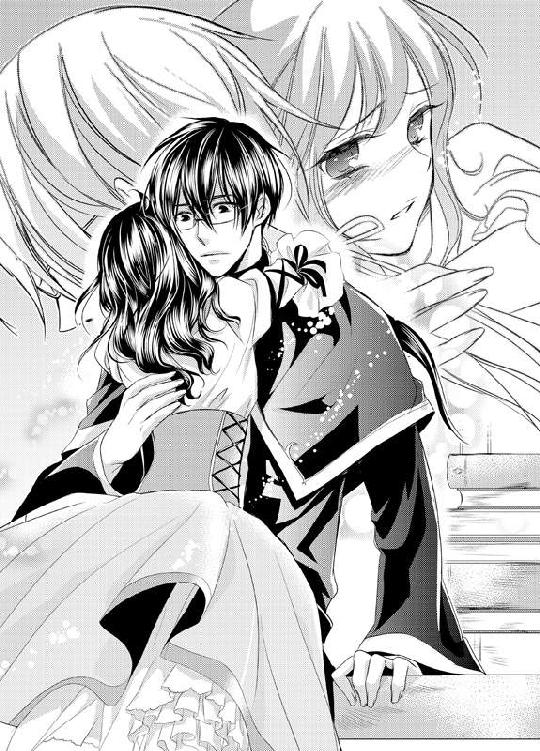
「あたし神父様のことが好きだからどこにも行かない。他の男の子なんて目に入らないっ」
駄々をこねる子供のように声を荒げてしまうと「そういう意味じゃないよラティカ」グレミオは落ち着いた様子でラティカの頭を撫で続けた。
「僕もラティカのことが好きだよ？ でも家族としての好きと、異性の好きは違うんだよ。それにもう十五歳だろ？ こんなところを妹たちに見られたら笑われてしまうよ？」
「そうじゃない、そうじゃないの......」
彼はわかってくれていない。自分が思う気持ちはそんな子供のようなものじゃないのだ。
「本当に好きなの。親代わりじゃない。男の人として神父様のことが好きなの......」
ラティカは声を震わしながら、振り絞るようにしてグレミオを見上げた。
ようやく娘の言わんとしていることを理解したのだろう、グレミオは「ラティカ......」なんとも言えないような苦しげな表情を浮かべて黙りこんでしまった。その態度を見てラティカは気がついた。養父は自分の告白に困っているのだと。
さっきのお茶会の時に感じていた、彼は自分を受け入れてくれるであろうという自信が粉々に砕け散る。絶望が一気に押し寄せてきた。
少し考えればわかることだったのだ。ひとまわり以上も年が離れた育ての親が、それも神父という聖職に就く男が、自分を女として見るわけがないのだと。
なんで告白なんてしてしまったんだろう。それも勢いに任せて抱きついたりなんかして。
ひどく惨めで恥ずかしくなり、ラティカはグレミオから体を離して力なく俯く。「ごめんなさい......」振り絞って出せた言葉はそれだけだった。
二人の間に沈黙が流れた。重苦しく、息をするのさえ戸惑うほどの静寂だ。
それを破るように先に口を開いたのはグレミオのほうだった。
「すまないラティカ。君がそんなふうに僕を思ってたなんて......」
ただ、ラティカからの告白にいまだ戸惑いは収まらないようだ。いつもより静かに、そしてラティカを傷つかせまいと言葉を選んで接してくる。
「僕にとってはね、ラティカ。君は本当に大切な家族なんだ」
でもそんな養父の気遣いや優しさも、今のラティカにとっては自分がひどく惨めになるだけ。彼が自分に気を使えば使うほど、異性として自分が見られていないのだと実感してしまう。彼はあくまで自分を養子の一人としてしか見ていない。それ以外でもそれ以上でもないのだ。
「もういいの、あたしが悪いから。部屋、戻るね......今日のことは忘れて」
ラティカは顔をそむけ、立ち上がろうとする。だがまるで眩暈でも起きたかのように体がふらつく。思わず椅子の背に手をついてしまうと「どうしたんだい？」すぐにグレミオが体を支えてくれた。
「今日の君は本当に変だ。どこか具合でも――」
ラティカの様子に養父が困惑した態度を見せる。でもそれはすぐにハッとしたものに変わった。
「この匂いは――」
少女の体からかすかに漂う独特の香りに気がついたからだ。
さっきまで会話をしていて気がつかなかったが、その香りが一体何なのかグレミオにはすぐにわかった。
「ラティカ、君は......酒を飲んだのか？ でも、ここには酒なんてないはずだ。一体どこで手に入れたんだ？」
「知らないわ。お酒なんて」
ラティカは顔をそむけて呟く。自分はネクトルを口にしていただけだ。
ただ、夜のお茶会のことは姉妹たちの中でだけの秘密であり、弁明することもできない。
告白に対するグレミオの反応もショックで黙りこんでしまうと「と、とにかく」グレミオは慌てた様子で立ち上がった。
「そこにいなさい。すぐに水を持ってくるからっ。いいね、そこにいるんだよ？」
養父が書斎から駆け出していく。
しかしラティカはこれ以上グレミオと顔を合わせている気にはなれなかった。
次に彼が戻ってきた時、どう顔を合わせていいのかわからない。もうこれ以上惨めな自分を見られるのはいやだ。
――終わりだ、何もかも......。
それに初恋が失恋として終わった今、自分には未来も希望も何もないように思えてくる。
ラティカはふらりと立ち上がると、そのまま書斎を抜け、礼拝堂の外へと歩き出していた。
礼拝堂を出たラティカは、薄暗い海岸沿いを、おぼつかない足取りのまま進んでいた。
振り向けば、教会の明かりが遠くに見える。今頃養父はいなくなった自分に気づき捜しはじめた頃かもしれない。
――もっと、遠くへ行かなくちゃ。遠くへ......。
この場所にいたらすぐにグレミオに見つかってしまう。とにかく今は一人になりたい。
それにもう限界が近づいていたからだ。
――泣いては駄目、泣いたら雨が降る......。
少しでも立ちどまってしまうと、悲しみが一気に押し寄せ、涙が零れそうになってしまう。もし雨が降ったら、グレミオはさらに心配するに違いない。
唇を噛みしめ、ラティカは足元を見つめながら歩く。
でもしばらくした後「姫？」聞き覚えのある声が前から聞こえた。顔を上げると海岸の先に養父の次に会いたくなかった少年の姿があった。
「まさかこんな場所で姫に出会うとは、やっぱりこれは運命――」
いつものように両手を広げてリュートが嬉しそうに声を上げて走り寄ってくる。
だがラティカの異変に気づき、すぐに真面目な顔になった。
「......姫？ ど、どうした？」
「......べ、別に。リュートこそこんな時間に何してるのよ......」
「オレはちょっと寝る前に散歩でもと思って......ていうか、何かあったのか？」
「なんでもない。放っておいて」
ラティカは顔を向け、リュートを避けるように再び歩き出す。今は誰とも話したくなかった。養父に告白をして振られたなんて口が裂けても言いたくない。
そのことを口に出してしまったら、ここまで泣かないように我慢してきたことが水の泡になってしまう。
「お、おい待てって......姫っ!!」
だがリュートはそのまま見送ってはくれなかった。ラティカの腕を取ると、半ば無理やり振り向かせようとしてくる。その時だ――
強引にとめられたラティカのつま先が砂の中に取られ「あっ」ラティカの体がぐらりと傾いた。
「うわわっ、姫っ!?」慌てて体を引き寄せようとしたリュートも間に合わず、二人の体は重なるようにして砂浜の上へと倒れこんでしまう。
「何すんのよ......馬鹿っ」
砂の上に押しつけられ、ラティカは体の上に重なったリュートを睨みつけた。「わ、悪い......」すぐに少年は上半身を起こし、申しわけなさそうにラティカに手を差し出してくる。でもその手をラティカは掴まなかった。いや、掴めなかった。
転んだ拍子に、まるで体の奥の栓が抜けたように、耐えていた感情が溢れ出したのだ。
頭の中で、養父に困り果てた視線を向けられたことを思い出してしまう。目の前に広がる夜空の星が、瞬く間に暗い雨雲に包まれていく。それと同時にラティカの視界が潤んだ。
「うっ......」
噛みしめていた唇の間から耐えきれなかった嗚咽が漏れた。目尻の間に一滴の熱いものが浮かび、耳の後ろに向かって流れ落ちていく。
直後、乾いていた浜辺に大粒の雨が降り出した。
「......雨？」
その空の様子とラティカの姿を、リュートは交互に見て「ラティカ......君は......」何か確信を持ったように、いつもとは違う口調で呟いた。
「君は......涙子なのか？」
「ほら、早く入って」
背後からリュートに急かされ、その場所に足を踏み入れたラティカは、涙で腫れた目で不思議そうにあたりを見渡した。
――こんな場所、あったんだ......。
雨の中、リュートが連れていかれたのは、海岸とは反対。木の茂る林の中に間にある、今にも打ち捨てられそうな古びた納屋の中だった。
孤児院からかなりの距離があり、ここならグレミオも追いかけてこないだろう。そもそもラティカ自身もこんなところに納屋があるなんて思いもしなかった。
今はもう使われていないらしく、所々雨漏りしているが、古い干草が詰まれた中心部は濡れていない。リュートはラティカをそこに座らせると納屋の外を見ていた。
外は風も吹きはじめ、嵐になりかけているらしい。激しい横殴りの雨が古木でできた納屋の壁を叩いている。
「この様子じゃ、たぶん神父様たちもここまで来れないと思う」
ラティカを安心させるためだろう、リュートは笑みを浮かべて振り返る。でもラティカは「そう......」ただ一言だけ呟き、そのまま両足を抱えて体を丸めた。
涙はいまだに溢れ、気を抜けばまた嗚咽が漏れてしまう。正直、こんなに泣いたのはグレミオから指輪をもらった幼い頃以来だ。
涙を手で拭うラティカに対し、リュートはもう何も尋ねてはこなかった。
ラティカの隣に腰を下ろし、薄暗い納屋の天井を眺めているだけだ。普段のリュートなら側にいれば「姫、姫」と話しかけ、隙をついては自分の手を取ろうとしてくるのに、今はそんな気配はまったくない。
だがしばらくして少年は「それにしても......」深く息を吐き、呟いた。
「まさか涙子と遭遇するなんて思いもしなかった。本当に存在したんだな......」
「......どういうこと？」
まるで自分が珍獣か何かのような言い方をされ、ラティカは涙で濡れた顔で睨む。するとなぜか彼は驚いた様子でラティカのほうへと振り向いた。
「え？ もしかして姫。自分が涙子だってこと、知らなかったのか？」
「そもそも涙子なんて言葉知らないわよ。それって......一体何なの？」
洟を啜りながら尋ねると「本当に何も知らないのか」驚きながらも、リュートは静かに話しはじめた。
「涙子って言うのは、その言葉の通り涙に能力がある人間のことを言うんだ。涙を流すと雨が降るから涙子っていうんだ。てっきりオレは姫も神父様もわかってるんだと思ってた」
「神父様が？」
言われて、ラティカは考えこむ。確かに自分が涙を流すと雨が降るということは彼も知っているはずだ。
「でも涙子なんて言葉、初めて聞いたわ」
「そうか、でもまあオレもさっきの姫を見るまで、本当に涙子が存在するなんて思わなかったしな」
いまだに信じられない、というようにリュートがラティカを見つめる。そして確認するように尋ねてきた。
「なあ姫。姫の生まれって、ルビアじゃないのか？」
「ルビア？ 行ったこともないわ......」
物心がついた時、すでに自分はグレミオと共に孤児院で生活していたのだ。だがリュートはどこか確証を得ているような顔でラティカを見つめた。
「姫のその肌の色を見るとルビアの民の血が入っている気がする。ルビアはランドーラで唯一の砂漠の国で、褐色の肌の人間が多いんだ」
「でも、リュートの肌は白いわ。リュートだってルビアの生まれなんでしょう？」
「オレはルビアの騎士だけど、ルビア人の血は引いてないんだよ」
そう言って「それに」膝を抱えるラティカの腕をそっと掬い取る。
彼の視線はラティカの右手に光る指輪へと注がれていた。
「涙子は雨の降らない砂漠のルビアだけで稀に出た能力者だ。それにこの指輪についている石といい、施されている装飾といい......ルビアで作られたものだ。そう考えると姫がルビアの出身以外考えられないよ」
「あたしが......ルビアの血を？」
まさかこんなタイミングで、自分の出生の秘密の足がかりが見つかるとは思いもしなかった。そのせいだろうか、さっきまではとめられなかった涙が治まりはじめていた。それと同時に、納屋を叩く水音が消えていく。
すると少年は優しくラティカに言った。
「とにかく、朝になったら一緒に戻ろう？ な？ 何があったかは知らないけどきっと神父様も心配してる」
「いや、いやよ......」
だがラティカは強く首を横に振る。いまさらどんな顔をして孤児院に戻れというのだろう。最愛の人に拒絶された今、あの孤児院で生きるという希望はもう消え去ってしまったのだ。
妹たちだって自分がいなくても、ちゃんと身のまわりのことはできる。自分一人がいなくなっても何も変わらないように思えた。むしろ食い扶持が減って助かるに違いない。絶望に包まれた今は、後ろ向きな発想しか出てこなかった。
昨日まで幸せだった日常や思い出が、すっぽりと今の自分の中から消え、グレミオに失恋した絶望感でいっぱいだ。
「あたし、もうあそこには戻りたくない......戻らないわ」
「でも、それじゃあこれからどうするんだよ」
「それは......」
ラティカは口籠った。幼い頃からずっと育ってきた孤児院のあるここ以外、自分の知る場所はどこにもない。
だが、ある一つの考えが浮かびはじめていた。それはあまりにも自分勝手な提案だ。「ねえ......」ラティカは縋るように少年を見つめた。
「リュートは明日、孤児院を発って港から船に乗るって言ってたわよね？ 港からの船ってたしか、ルビアの近くにも停泊するのよね？ リュートはルビアへ帰るの？」
「詳しくはもう今日の昼だけど......って、まさか、姫？」
「お願い。あたしも連れていってほしいの。途中まででもいいから」
一度でいいから見てみたいと思った。生まれ故郷かもしれないルビアの土地を。
彼の言うように自分がルビア人の生まれだとしたら、そのルビアに行けば本当の両親にも会えるかもしれない。
正直、生みの親のことなんて数分前までは気にもしていないことだったが、今の絶望的な自分の気持ちをどうにかするには別のことへと意識を移すしかないと思った。
それに恋に破れた今、自分の中にある心残りといえばそれくらいしか思いつかなかったからだ。
「一目でいい。あたし両親に会ってみたい。だからルビアに行ってみたいの」
「でもルビアは危険だ。特に姫が涙子ならなおさらだ。それに探すって言ったって、どうやって？ 姫の両親がルビアの民だとしても、今もその土地にいるかどうかだってわからない。いくらなんでも無謀だよ」
出会って二日しか経っていない少女に、連れ去り同然の強要をされた少年の反応は真っ当なものだ。
「騎士であるオレが姫の家出を手伝うなんて......できるわけないだろ」
でもラティカは引き下がらなかった。
「わかってるわ。自分がどんな無理なお願いをしてるか。でも今のあたしにはリュートしか頼れる人がいないの......」
恥も外聞もかなぐり捨て、ラティカは自ら少年の手を握りしめた。着の身着のまま飛び出した自分をブルーナから連れ出せるのは彼しかいない。
「お願い。なんでもするから」
「なんでも？ どういうことだ？」
「リュートの言う愛っていうものを受けとめるわ」
「それってまさか――」
少年の表情がみるみると赤くなっていく中、ラティカはそのまま言葉を続けた。
「リュートがあたしを姫って呼ぶなら、あたしは姫になる。身も心も全部、リュートにあげる。何をしたっていい。ルビアに連れていってくれるなら好きにしてくれていい」
自分が今どんなに恥ずかしい言葉を口にしているのかわかる。でも気持ちは真剣だった。
「本当になんでもするわ。もう手にキスしたって、どこにキスしたってひっぱたかない。それ以上のことだって......」
両親に会えるのなら、自分の体のことなど、どうでもよかった。初めての恋は破れ、大切に取っておいた愛しい人とのキスなんて決して叶うことなどない。今の自分に残された希望は、故郷であるかもしれないルビアの地を踏んで生みの親に会うことだけだ。
「リュートの好きにしていいから、お願い......」
ラティカの言葉に少年は驚きを隠せないように言った。「ひ......姫？」思わず声を裏返えしてしまった彼は、焦りを隠すように咳払いをした。
「自分が何を言ってるのか、わかってるのか？ 好きにしていいっていうことは......そ、その――」
そして、いつになく真面目な顔をして尋ねてくる。
「......姫はオレの気持ちを知ってて......そんなこと、言うのか？ ...」
「ええ......だって、騎士は姫に忠誠を誓うんでしょう？ それならあたしは姫として相応のものをリュートにあげる......」
ラティカは瞳を閉じ、ゆっくりと自分の顔を少年のほうへ向けて持ち上げた。
瞼の向こうで、少年が口籠る。
「オレは、そんな......。その......でも......」
だがしばらくしたあと「わかった......」唸るような呟きと共に、ラティカの頬に手が添えられた。
「姫がその気なら。オレは......従う――」
まるで凍えているかのようにリュートの手は震えていた。その緊張が伝染したかのようにラティカもまた肩を強張らせる。少年の顔がゆっくりと近づいてくるのが、目を閉じていてもわかった。
ごくりと唾を呑む音が聞こえた直後。唇に柔らかな感触が押しつけられた。
ラティカにとっての初めての口づけだ。
「ん............ふ............」
だが、ラティカは少年からのキスを受けながらも、どうにも納得できないでいた。
少年から受けたそれは、今まで想像してきた甘く蕩けるようなものとも違ったからだ。
――これがキスなの？ あたしがずっと大切にしてきたキス？
胸の奥が切なく軋むわけでも、心が蕩けそうになるわけでもない。ただ唇を押しつけられているだけのような気がしてくる。
だが目の前の少年は、やや呼吸を荒げながら必死にラティカの唇に這わせ続けていた。
「姫......」
小さく呟きを漏らし、うっすらと開いていた少女の唇の中へと舌を割りこませ、たどたどしく舌を搦み捕っては吸いついてくる。
「んっ......く、苦しい......」
息のできない苦しさに、ラティカは身を捩り顔を離そうとするが、自分を抱きしめる少年の力は強く、そのまま藁の上へと寝かせられてしまう。
直後、ラティカは太腿に違和感を感じた。
――何？ これ......。
太腿の間に少年の片足が差しこまれたのだが、そこに何か硬いものの存在があったのだ。少年の持つ剣の鞘が当たっているのかと思ったが、柔らかくも硬い感触にそうではないと気がつき、ラティカは少年から唇を離して顔をそむけた。
――なんか、怖い......
後悔が波のように押し寄せる。ついさっきまでは自分なんてどうなってもいいと思っていたはずなのに、これからされるであろうことを想像すると恐れを感じてしまう。
抱きしめてくる少年を「ちょっと待って――」両手で押し離そうとする。だが少年の力は強く、体は離れなかった。それどころか再び唇を奪われてしまう。
まるで声が届いていないかのようだった。「姫......」再び呟いて、唇から首筋へ、そして鎖骨まで落ちてくる。湿った唇に胸元が乱され、褐色の薄い肌が少しだけ覗く。
覆いかぶさっていたリュートが「あの......」少しだけ気まずそうに呟いた。
「姫......オレ......。その......こういうこと、はじめてなんだ......」
顔を赤らめ、目線を逸らして申しわけなさそうに呟く。
「何馬鹿なこと言ってるのよ」
面と向かってそんな告白をされ、思わず顔を赤くしてしまう。それと同時に、恐怖が少しだけ和らいだ気がした。彼は決して自分を傷つけることはないのだと、安堵感さえ浮かんできた。
そのせいだろうか、抵抗しようとしていた気持ちが溶けていく。
「あたしだってそうよ......」
頬を赤らめて俯くと「ごめん」申しわけなさそうな少年の声と共に胸元へと手を伸ばされた。衣服がはだけそうになり、ラティカはすぐに胸の上で祈りを捧げるように手を組んで隠した。
もじもじと身を捩らせ、どうしていいかわからずにいると少年に組んでいた手を捕まれてしまう。
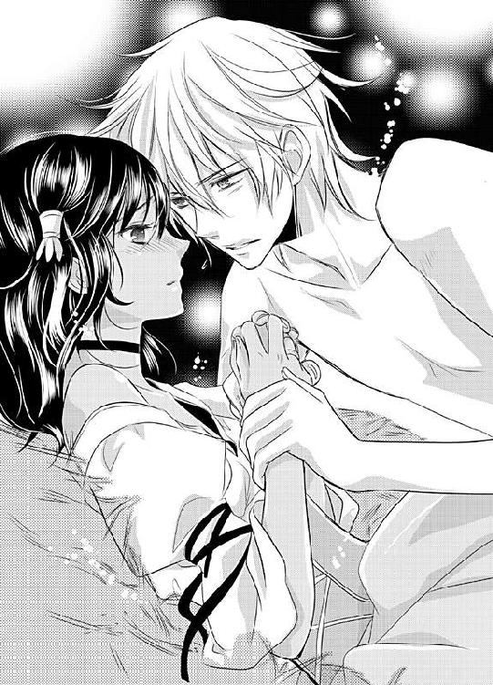
「力抜いて。なんか、ブリキの人形でも動かしてるみたいだ」
「でも力抜いたら、胸......見えちゃうかもしれないじゃない......」
「そりゃぁそうだけど......少しくらい、いいだろ？」
そこまで言うとリュートは、やや強引にラティカの手をサイドへと引っ張った。固く結んでいた手は少年の力でゆっくりと開いていく。はだけた胸元が露わになると、布地の上から形を確かめるかのように手がそっと添えられた。
「......姫の胸。すごく綺麗だ」
感嘆の声を漏らされ、ラティカの顔はさらに赤らんだ。今まで胸を褒められたことなんて一度もない。どう反応していいのかわからず、顔をそむける続けることしかできない。だがそれも少年の指先が胸元の中へと入りこんでいくうちに難しくなっていった。
「......んっ......ぁ......」
布地の中、たどたどしく弄ぶような手つきに、自然と腰が捩れて震える。くすぐったさとは違う不思議な感覚だ。それに自然と喉から漏れる声は、自分の声ではないように甘ったるくて、戸惑ってしまう。
必死に声を漏らすまいと唇を噛みしめるも、少年の手はいまだ胸の上。
「や......んっ......」
手の平を押し当て、たどたどしく揉まれているだけなのに、腰の奥がゾクゾクと震えてしまう。
指先は胸の先端を弄びながらゆっくりと降りてくる。お腹の窪みを親指で弄び、さらに下へと伸び、太腿に差しこまれた。
自分ですらもよくわからない未知の領域に少年の指が触れ、ラティカがキュッと両足を閉じると、少年が静かに尋ねた。
「見ていい？」
「絶対それだけはイヤ......」
いくらすべてを捧げるとはいえ、ここまででもう心臓は破裂しそうだ。その上自分ですらよく見たことのない場所を他人に見られたら、生きてなんていけない。
「見たら殺すわよ」
「わ、わかったよ。だからそんなに怒らないでくれよ......」
「怒ってなんか......ないわよ」
怒ってなんかいない。ただとにかくすべてが恥ずかしいのだ。少しでも威勢をよくしておかないと、少年のペースに呑まれてしまう気がした。そうなったら、自分は一体どうなってしまうのだろう。理性が崩れてしまいそうで怖い。
「わかった、じゃあ見ないよ......」
少年の手は少女に怒られたことにより、探るような動きになった。差し入れられた指が、ラティカの内太腿の柔らかい肉をこねる。
やがてその指はラティカの足の付け根へと進んでいった。親指と人差し指が下着を潜り抜けたかと思うと、花弁に添えられ、割り開かれていく。
「ん......あっ......」
ラティカは首をのけぞらせた。ゆっくりと押し広げられたそこは、自分でもわかるほどに蒸れている。指先がちゅぷりと、水音を立てる。
「......ひ、ぁ......んっ......」
もう溢れる声を抑えることはできなかった、普段は強気な目元は羞恥で情けないほどに潤み、口元に添えた手はカクカクと震える。
少年の指が、濡れたヒダを撫でるだけで下腹部の奥が熱く疼く。
「姫、その顔......すごい可愛い......」
「もう、いい加減にして......」
これ以上何かを言われたら、恥ずかしくて消えたくなってしまう。
すると、少年は「わかった」と、ラティカの体から身を起こして立ち上がった。その姿を見て、ラティカの中に不安が広がる。
「......どうしたの？」
もしかして、あまりに自分が文句を言うから怒ってしまったのだろうか。ここまできて交渉が決裂してしまったら、自分はこの国から出られなくなってしまう。
「......リュート？」
ラティカは気まずそうに、少年を見上げる。だが少年は怒っていたのではなく自らの鎧に手をかけていた。胸当てを外し藁の上へと脱ぎ捨てていく。
「その......。ここから先は、この格好のままだと、邪魔だろ？」
恥ずかしそうな彼の言葉に、ラティカは、いよいよその時が来たのだと息を呑んだ。
胸当てを外して軽くなったリュートの体は、普段のどこかあどけなさが残る顔立ちとは違い、大人になりかけているものだった。
ベルトを外そうと動かされる指の節もゴツゴツとしていて、今自分が見上げているのは『男』なのだと思い知らされる。
――あたし、本当にこれからリュートと、するんだ......。
あの、日に焼けた胸が、これから自分を抱きしめるのだ。それにその腰の中のものを自分の中へと――
未知なる異性の体への興味と、恐怖が同時に沸き起こる。
彼がズボンに手をかけたところで、それ以上恥ずかしくて見ていられなくなりラティカは目を瞑った。カチャカチャとバックルを外す音が聞こえる。バサッと重たい剣がベルトと共に藁に落ち、少年が再び自分に覆いかぶさってきた。
「姫......」
優しく髪の毛を撫でられ、両足に腰を割りこまれる。衣服の裾をたくし上げられた内太腿に感じるのは、熱く硬い肉の塊だ。その大きさは普段どう収まってるのか不思議なほどにラティカには大きく感じられた。
「じゃあ......本当にいいんだな？ オレとして、後悔しないのか？」
「後悔なんて......しないわ」
少年に尋ねられ、ラティカは頷く。だが後悔しないかどうかは正直わからなかった。ただ、さっさとこの恥ずかしい行為が通り過ぎればいいと思った。乱れた衣服を直して、少しでも早くこの土地から去りたい。
「とにかくもうあたしは......リュートのものなんだから......」
自分に言い聞かせるように呟くと「そうか......」リュートは少し緊張した様子で頬を赤らめる、そして組み敷いたラティカの右足を掴んで持ち上げた。
「痛くないように、気をつけるから......」
それだけ言って、ラティカの足の間へとさらに入りこんでくる。
直後、濡れたラティカの秘部へと、熱い塊が押しつけられた。
「ぅ......あ......」
さっきまでの探るように触れていた指とは全然違う、堂々とした逞しい存在感に、ラティカは思わず声を漏らし、逃げ腰になってしまう。だが少年の手はすぐにラティカのヒップを掴み、身動きは取れなくなった。
「力......抜いて......」
そう言って亀頭を入り口へと宛がう。ぺたりと硬い肉の先端がラティカの割れ目へと這わされた。だが――
「あ、......あれ？」
頭上から少年の困ったような声が漏れた。
少女の入り口である双葉の間へと宛がったはいいものの、その受け入れるべき微妙な位置がわからず、戸惑ったように肉棒で探り続ける。
ラティカの小さく萎縮していたそこは、何度も肉棒の先端で割れ目を撫でられ、じんわりと蜜を溢れさせる。ぬるぬるとした感触に腰が痺れてしまう。
「んっ......違うの......そこじゃな......」
「ご、ごめん......」
リュートは焦る声を漏らし、わたわたと体を揺らす。だがいまだ狙いをつけることはできずラティカは「そうじゃなくて......」片手を二人の腹部の間へと伸ばしていた。
手探り状態でそこにある少年の剛直を掴んで、誘導する。
「こっち......」
そう言って導いたところで、男性のその場所へと手を触れてしまったのだと気づき、ラティカは手を引っこめた。生まれて初めて触れたその場所は、暗闇でよかったと思うほどに硬く不思議な形をしていた。
――あたし、何やってるんだろ......。
思わず、心の中ではしたないことをしてしまったと自分を叱咤する。だがその直後、狙いを定める場所が見つかった少年は「いくよ......」小さく囁き、腰を埋めていった。
腰を強く押し入れられた瞬間、ラティカはひときわ大きな声を上げて戦慄いた。
「んっ......ああああっ!!」
固く閉じた内膜が、少年の肉棒によって開かれていく。体の中をそれによって押し上げられ、今まで感じたことのない強い圧迫感が膣内に生まれていく。
「んっ......」
唇を強く噛みしめて耐えていると、頭上で少年も小さな呻きをもらしていた。薄く目を開けると、キュッと歯を食いしばり、悩ましげに眉を顰めるリュートの表情があった。
「すご......きつっ......」
唇の間からそんな言葉を漏らしながらも、少年の侵入はとまらない。ズ......ズズとラティカの内膜を擦りながら、最も奥深い場所へと到達していく。
二人の接続部、その間から蜜とも違う熱い雫がサラリと流れ落ちていく。その生暖かな感触は、自分の初めての証だということがラティカにはわかった。
「姫......い。痛い？」
「痛いに......決まってるでしょ......」
「ご、ごめん......」
だがもちろん、彼が悪いわけではないとわかっている。
「でも、......平気。これくらいなら我慢できるから......」
ラティカはヒリヒリと痛むその場所から意識を遠ざけるように、目を瞑ってリュートの首に抱きつく。そんなラティカの背中を抱いたリュートは「じゃあ動くよ」慎重に腰を前後させていった。
濡れた内膜の中、少年の硬い肉幹が引かれたかと思うと、すぐにまた抉るようにして入りこんでくる。それは実に単調な動きだった。
だがその予測がつく抽送のおかげだろうか、ヒリつくような痛みは収まりはじめ、体の強張りは自然と溶けていく。
ただその代わり、下腹部の奥を強く打ちつける衝動に自然と声が漏れはじめた。
「や......あ、そこ......だめっ......」
今まで感じたことのない、ゾクゾクとした痺れが奥から生まれる。
奥まで腰を押しこまれると、下腹の中で跳ね上がるような衝動が起きる。
「あっ......ふぁっ......あ、あっ」
腰を深く押しこめられるたび、まるで空気を押し出されるかのように声が漏れる。何度も何度も突き上げられ、その度に腰はビクビクと震えてしまう。
「悪い......姫、でもオレもうとめられない......」
顔を赤くして、それなのに今にも泣き出しそうに唇を歪めるリュートの姿に、もうラティカの中で後悔はなかった。それどころか自分の体を抱きしめ、名前を呼ぶ彼を愛しいと思えそうになってくる。
グレミオは絶対こんなふうに自分を求めてくれることなんてないのだ、そう思えば思うほど、誰かに求められることに貪欲になってしまう。
ラティカは自然と両手を伸ばし、リュートの肩にしがみついた。
「リュ......ト......んっ......あぁっ」
少年の名を呼び、下腹部の中を何度も突き上げられる衝動に涙が浮かぶ。
干草の香りに二人の汗の匂いが混ざる。熱い液が少年の腰が押し入れられる度に二人の間から溢れ、ラティカのヒップを濡らしていった。
――あたし、今リュートといけないことをしてるんだ......。
本来なら愛し合う男女がするべき行為を、出会って二日しか経っていない少年としてるのだ。だがそんな背徳感もすべて、少年からの突き上げがさらに加速したことによって消え去った。
「あっ、駄目っ......ひぁっ」
怒張した肉棒が内膜を掻き出すように暴れ、そして子宮口へと叩きつけられる。
「あっ......ああああっ!!」
直後、ラティカは唇を噛みしめる少年と共に達していった。ラティカの中で震えた肉の刀身が熱を放っていく。
甘い衝撃を和らげるかのように注がれるその不思議な感触に、ラティカはそのまま藁の上で体を震わせた。
少年もまた「ラティカ......」脱力したようにラティカの胸に覆いかぶさってくる。
汗と雨で濡れたその短いボサボサの髪の毛を、ラティカは撫でた。
「約束よ......リュート。あたしをルビアに連れていって......」
「ああ......約束だ」
顔を上げた少年はまっすぐにラティカを見つめてきた。いつにもなく真剣な眼差しで。
「この先何があっても、姫はオレが守る。この命に代えても、姫を生みの親に会わせると誓うよ」
少年の唇がラティカの唇に触れた。
ラティカはそっと目を閉じてそれを受け取っていく。
なぜかそのキスの時は、今まで以上に胸が痛んで張り裂けそうだった。
失恋の痛みがいまだ疼くのはもちろん。リュートを利用しようとしていることへの罪悪感もある。だがそれ以上にリュートの言葉に胸がいっぱいになった。
――会いにいけるんだ......本当の両親の元へ。
今まで頼りなく見えていた少年が、とても頼りがいがあるように思えた。
彼と一緒に行けば、きっと両親に会える。そんな気がした。
珍しく大ぶりの雨が降った翌朝、通りかかった港行きの馬車に乗りこむ少女の姿を見たという知らせがグレミオの元へと入った。
「ラティカ......」
礼拝堂の中で一人、グレミオは頭を抱えてうろうろと歩き回る。
「馬車なんかに乗って、どこに行く気なんだ」
彼女の妹たちはまだ何も知らない。このことを知らせるべきだろうか？ 自分がラティカの告白を無碍にしたと？ それで彼女がショックで家出をしたと？ 言えるわけがない。
それに捜しに行くとしても、ここに残された子供たちはどうする？ ラティカがいない今、幼い少年たちの世話は他の姉妹たちに頼むことにも不安が残る。
「まずはルビア王国に連絡して、港や国境を調べてもらって......でもその前に、子供たちを見てもらう人を探さなければ......」
連日の寝不足に、今回のラティカの家出劇。こんなことになるなら、ラティカの言う通り、少し仕事を抑えておけばよかった。だがそんな心配をしてくれていた頼りになる少女が今はいないのだ。
「ああ、どうすればいいんだ」
頭の中で処理できないほどの不安で、パニック状態になってしまっていると「どうしました？」飄々とした声がかけられた。
振り返るとそこにシアンの姿があった。ローブのフードもかぶり、手には荷物。すっかりと旅支度を済ませている。
「そろそろ発とうと思って最後にご挨拶に来たのですが......迷惑だったでしょうか？」
「いいや、とんでもない。ただちょっと困ったことになってしまって......」
「困ったこと？」
今日船で発つと聞いてたとはいえ、今孤児院にいる大人は自分の他には彼だけ。グレミオは旅立つ彼に申しわけない気持ちを抱えながら、口を開いた。
「ラティカが......いなくなったんです」
「ラティカちゃんが？」
シアンは細い眉をピクリと持ち上げる。そして「そういえば」顎に手を当てて呟いた。
「さっき、あのリュートという少年にも挨拶しようとしたんですけど、彼の部屋も空でしたね......もしかして彼と一緒にいるってことは考えられませんか？」
「えっ？ ......リュート君も？」
グレミオの不安はよりいっそう大きくなった。
――ラティカがあの少年と？
昨日まで、彼のことを苦手だと言っていたラティカが、彼と一緒に行動を共にするなんて考えたこともなかった。
ただ、一つの可能性が浮かんだ。
昨夜のラティカは酔っていた。それに気づいたリュートが言葉巧みにラティカを誘い出したとしたら？
「そんな、そういうことをする子ではないように思えたのに......」
ぶつぶつと呟いていると、シアンが「もしよろしければですが......」と尋ねた。
「私も捜すのをお手伝いしましょうか？ いろいろと人手も必要でしょう」
「しかし、客人である貴方のお手を煩わせるわけには。それに今日はもう船で発たれるのでは......」
「次の船に乗ればいいだけですから構いませんよ。賞金稼ぎを生業としてると人探しの依頼はよくあるんです。それに人探しといっても、ラティカちゃんたちでしょう？ あれくらいの年の子たちの家出なら、なぁにそこまで遠くには行ってないですよ、きっと」
「そうですか......」
「報酬は......そうですね。こちらの孤児院では今までにお世話になったことだし、千ジュリオ......で、どうでしょうか？」
「千......ジュリオ？」
千ジュリオ。それはこの孤児院ではグレミオの一カ月の神父としての賃金程度のもので、この孤児院の子供たち全員の一カ月の生活を持たせることができるくらいの金額だ。
でも今はそれしかグレミオには選択肢がなかった。自らがラティカを捜しにいくとしても、その間の孤児の面倒を見る者を探す手間がある。
「ではそれでお願いしていいですか？ 僕も準備が整ったらすぐに捜します」
戸棚から金を取り出したグレミオは苦しげにその思いを託して言うと「お任せください」金を受け取ったシアンが、ニヤリと口元を曲げて微笑んだ。
「では早速、この付近から捜してきますよ」
「助かります。僕は子供たちを起こしてから事情を知らせてきます」
「じゃあ昼過ぎには一度ここに戻ります。その時にまだ見つからなかったら対策を考えましょう」
「どうか、よろしくお願いします」
「ええ。任せてください。では......」
シアンが去って扉が閉まると、グレミオは礼拝堂に掲げられた神の銅像へとひざまずき、祈りの組み手をした。
「どうか、ラティカが無事に見つかりますように......ランドーラの地の恩恵を......」
そしてすぐに立ち上がると、子供たちにラティカのことを知らせるべく、足早に礼拝堂をあとにした。
「さてと......こんな辛気臭い場所ともこれでオサラバだな」
教会を一瞥すると、シアンは手にしていた杖の先端で強く地面を突いた。
直後、彼の体は靄に包まれ、一羽の鴉の姿へと変わり、翼をはためかせて空へと向かい飛び立っていく。
漆黒の翼を広げながら、シアンはくちばしを動かす。
「あの坊主と一体何があったかはわからないが。どうせ今日の船に乗るつもりだろう」
ブルーナから出る方法は地上の国境か海を渡る航路の二つしかない。王国兵が配置されている国境よりも、広い海のほうが逃亡者にとって都合がいいことは明白だった。
黒鳥のシアンは目を細めて笑う。
「それにしても面白い方向に進んでいったな。まさかこんな場所で涙子の存在に気づくことになろうとは......実に意外な収穫だ」
涙子を探し大陸中を旅していた途中、たまたま宿を借りるために立ち寄った孤児院。そこでルビア人と似た肌の色を持つラティカを見て、故郷の女たちの肌の感触を懐かしんで足をとめたのが自分にとっては幸運のはじまりだった。
良心的な旅人と偽り、二人きりになって慣れない酒を飲ませて酔わせれば、信心深い神父の元で育った小娘のことだ、すぐに自分の好きにできるだろうと思った。
ただ、その目論見は意外にも警戒心の強かった彼女には通じず、ネクトルと偽って買ってきた酒も「あとでみんなで飲むから」とつれない態度で受け流されてしまった。
だが鴉の姿に変身して、窓の外から様子をうかがっていた甲斐はあったのだ。
神父と何やら揉めて孤児院を飛び出した少女は、浜辺でついに涙を零した。時を同じくして雨が降り出した。
その後、強い雨足に飛ぶことができず彼らの姿を見失ってしまったが、あの光景は紛れもなく彼女が涙子だということを示していた。
「あんな褐色の肌を持つ孤児の娘が、ブルーナなんて辺境の国にいること自体おかしいと思っていたんだ。涙子である我が子を辺境の地にある孤児院に隠すなんて、あの娘の両親はよほど彼女の身を案じていたんだろうねぇ。ふふっ......」
腹の底から笑いがこみ上げそうになる。
涙子――雨乞いの能力を持って生まれた、王国を揺さぶる価値のある能力者。それは賞金稼ぎである自分にとって最高の獲物だった。
「あの娘を生け捕りにしてルビアに連れて帰れば、私は富と名誉、そしてメルダ様すらも手に入れられる......」
うっとりと目を細め、シアンは愛しそうにその名を呟く。
ギョロリとした彼の目に映るのは、ルビアにいる美しく着飾った妖艶な婦人――彼の雇い主の姿だ。
「すべて私のものだ」
泥濘の残る港町へ続く道に沿うようにして、鴉は力強く翼をはためかせて進んでいった。
危険な船旅 頼りない私のナイト
ブルーナ王国の唯一の港町であるそこは、今日これから定期船が停泊するということもあり、行商人や旅人などの人々でいつになく活気に満ち溢れていた。
だがラティカはその光景を見て歩きながら眉を顰める。
「すごい人ごみ......」
この街に足を運んだのも幼い頃にグレミオに連れられての数度だけだ。のどかで緑と海に囲まれた孤児院暮らしの自分からすると、港町の情景はどうにもごちゃごちゃしていて好きになれない。
「なんか歩いてるだけで疲れてきちゃう」
威勢よく客引きする露店の店主や、立ち話をする旅人たちを横目に見ながら呟くと「そうかな？」隣でリュートが暢気に笑った。
「活気があっていいじゃないか。オレは好きだな、こういう賑やかな場所」
あの後、日が昇る前に納屋を出て街道まで歩いた二人は、たまたまそこを通りかかった行商の馬車に乗せてもらい港町までやって来ていた。
道端で二人を見つけた馬車の主は、最初は乗車を拒んでいたが、リュートが何枚かの金を渡すと態度を一変させ、快くここまで届けてくれた。
ただ、ボロボロの鎧姿の少年に、質素な出で立ちをした少女の姿を見て、わけありの様子と感づかれたらしい。馬車に乗っている間もその商人からいろいろと尋ねられては、リュートが曖昧にごまかしてくれてはいたが、ラティカはいつ自分が孤児院から家出をしたとバレないかと気が気ではなかった。
そのため、港町に着くとリュートはすぐにラティカを引き連れて露店を巡り、彼女に旅の衣装を揃えてくれた。
動きやすそうなドレスに靴にマントまで。おかげで今の姿は立派な旅人だ。
「それにしても、別にこんなに揃えてくれなくてもよかったのに......」
新しい服を買ってもらえただけでもずいぶんと見栄えは変わったのだから、それだけで十分だと、ラティカは何度も買い物中に伝えたのだが、結局水筒や小さな短剣まで買い与えられてしまった。
「ねえ、無駄使いして大丈夫なの？」
無一文で飛び出してしまった自分が言うのもなんだが、旅の費用が心配になりラティカが尋ねると「無駄使いじゃないよ」リュートは、さも当然というような顔で答えた。
「これから向かうルビアは砂漠の国なんだ。しっかりとした靴を履いてないと歩きにくいし、火傷だってする」
「や、火傷!?」
「それに水筒だってそう。砂漠の中で水が切れるってことは命を落とすことと同じだし......姫に買ったものは全部大事な旅の必需品だ。だから金のことは気にしなくていいよ」
そこまで言うとリュートは驚き固まるラティカの後方を見て「おっ」と声を上げる。直後ラティカの背後で深く重みのある音が響いてきた。
振り返ると、ちょうど海の向こうから巨大な船が入港をしてくるところだった。行き交う街の人々の中にも、ラティカと同じく初めて客船を見た者が多いらしい、歓声が所々で上がる。
「あれがあたしたちが乗る船？」
「そう。ランドーラ大陸の東と西を繋ぐ定期船だ」
その船は、港に停泊している他の船とは比べ物にならないほどに巨大だった。定期船は水面を深く掻き分けてとまると、すぐに乗下船口を開き、船旅を終えた人々を港へ降ろしていく。
「客が全員降りたら、次は荷物を下ろして、船の整備をするんだ」
「それじゃあ、あたしたちが乗るのはいつごろになるの？」
「出発までは一時間ほどあるけど、客が降りたらもう乗っても大丈夫だ」
「そう......」
もうすぐ自分がこの豪華客船に乗りこむのだと思うと、さっきまでの騒がしい港町への蔑視はどこへやら、自然とラティカの気持ちは浮き立っていった。
「こんな大きな船でルビアに向かうのね......」
「ああ、この船の終着港がルビアだ。船を降りたらすぐ砂漠だよ」
「砂漠......」
砂漠とは一体どんな光景なのだろう。孤児院から見えた水平線のように砂地が続いているのだろうか？ 本で読んだことはあるが、まったく想像ができない。
まだ見ぬ景色に思いを馳せ、ラティカが目を輝かせていると「さてと」と、リュートが改まったように言った。
「じゃあオレ、そろそろ姫の分の船券買ってくるよ。姫はここで待ってて」
「わかった。でも......お金本当に大丈夫？」
「平気平気。金のことは心配するなって。オレは騎士なんだから。じゃ、すぐ戻るから」
ニカッと笑うとリュートが小走りに人ごみの中へと消えていく。彼の姿が消えると、ラティカは傍にあった木箱の上に腰かけて客船を眺めた。
煌びやかな衣装を身にまとった貴族らしい男女に、マントに身を包んだ旅人、これから外商に向かうのか大きな荷物を背負った商人。そして人間の中に紛れた魔族と思しき姿の者。船から降りていく者の姿はさまざまだ。
だがしばらくすると港に降りた船客と、これから船に乗る客で港は混雑しはじめた。
それにすぐに戻ると言っていたリュートもなかなか戻ってこない。見知らぬ土地ではないが、人ごみの中ふいに不安な気持ちになってくる。
「リュート、まだかしら？」
ラティカはそわそわとあたりを見渡す。だが、すぐにその視線は混雑する人波の一点に定まった。「うそ......」思わず喉の奥から震えた声が漏れてしまう。
視線の先、人ごみの中に見知った人物の姿を見つけてしまったからだ。
「神父......様？」
黒髪にメガネ。きっちりと着こんだ聖職者の服。そして何よりも幼い頃から一緒に過ごしてきた養父の顔を忘れるはずがない。グレミオだ。彼は港町までやって来たのだ。
グレミオは焦りを顔に浮かべて歩きながらあたりを見渡している。自分を捜しているのは一目瞭然だった。
ラティカは咄嗟に体を縮めた。今ここで見つかったら、孤児院に連れ戻されてしまう。
かといって今ここを離れたら、人ごみでごった返す港の中でリュートと合流できるかどうかわからない。
「ど、どうしよう......」
慌ててあたりを見渡し、どこか近くに隠れる場所がないか探す。だがそうこうしている間に、神父がこちらのほうへと向かってくるのが見えた。
ひとまずその場から離れようとラティカは木箱から飛び降り、反対方向へと走り出そうとした。――がその時だった。
「きゃっ!?」
「......っ!?」
ラティカともう一人の悲鳴が小さく上がる。慌てていて目の前を通り過ぎようとした女性にぶつかってしまったのだ。
「す、すいませんっ......っ!?」
咄嗟にラティカは頭をぺこりと下げた。が、その直後、ハッと目を見開いて固まった。
視界に入った女性のドレスから伸びた手の色が褐色だったからだ。
――あたしと同じだ......。
その手は自分よりもやや濃い色をしていた。
――もしかしてルビア人？
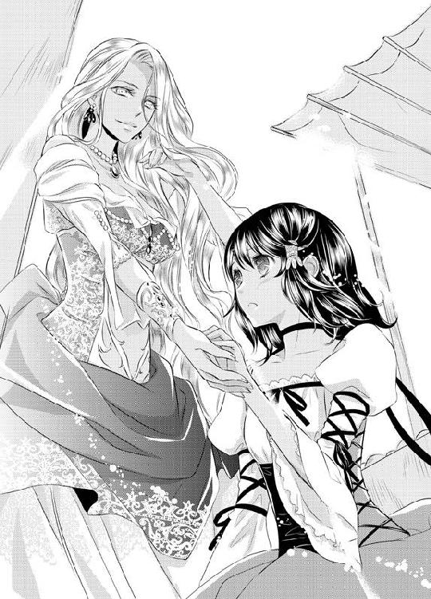
思わずまじまじと見つめてしまうと「大丈夫？」その手がラティカの顎を掬い上げた。
目の前に微笑を浮かべた美しい美女の顔が映り、思わず見とれそうになってしまう。だが今はそんなことをしている場合じゃない。グレミオは今もなおこちらに向かってきているのだと思い出す。
「あの......ええと――」
――ど、どうしよう......
ラティカが焦りと混乱で口をパクパクとさせていると、そんな挙動不審な姿に不穏な何かを感じ取った褐色の女性は「どうしたの？」と、尋ねてきた。
「何かお困りのようだけど」
「その......私、追われてるんです」
咄嗟に出た言葉だったが、さも自分が悪人から追われているような言い方をしてしまい、グレミオに対しての良心が痛む。
だがその切羽詰まった言葉に「そう」女性は神妙そうな顔つきになり持っていた日傘をぽんと開いた。大きく深さのある日傘がすっぽりと女性とラティカの肩までを包みこむ。
「わかったわ。助けてあげる。私についてきて、顔は上げちゃ駄目よ」
そしてラティカの腕を引いて歩きだし、引きずられるようにして彼女についていく。人ごみに揉まれながら右へ左へと蛇のようにうねりながら進み、しばらくしたところで「もういいわ」声がかけられた。
言われて顔を上げると、そこは細い路地の中だった。道向こうを見れば青々とした海とごった返す港が見える。
「様子を見て歩いてきたけど、誰かが追ってくる様子はなかったわ」
女性が日傘を下ろして手を離し、ラティカは慌てて頭を下げた。
「ありがとうございました、助かりました」
こちらからぶつかってしまったというのに、グレミオから逃げる手助けまでしてもらってしまった。申しわけない思いで頭を下げると「そう、ならいいのよ」女性は柔らかい笑みを浮かべ、
「じゃあ、私はもう行くわね、さよならお嬢さん」
それだけ言って大通りのあるほうへとスタスタと歩いていってしまう。
その女性が人ごみの中に消えていくのを見送っていると「姫!!」見慣れたボサボサ頭の少年がこちらに駆けてくるのが見えた。恐らく今まで必死になって自分の姿を捜していたのだろう、息を切らしながらもラティカの前までやって来ると安堵の息をつく。
「よかった、いなくなったのかと思った」
「ごめん、さっき神父様の姿を見かけちゃって......」
「神父様だって？ じゃあ急いでここを離れよう」
ホッとした表情を見せたのもつかの間、リュートはすぐ大通りのほうへと顎をしゃくってみせた。
「乗船がはじまってるから、急いで船に乗ろう。船券がなければ船の上までは追ってこれないよ」
「それもそうね」
確かに地上にいたら、またいつグレミオと会うかわからない。ラティカは頷き、リュートと共に歩き、大通りへと再び出た。
まわりを警戒しながら客船の前までやって来てリュートが船員に船券を渡すと、すぐに乗船口の中へと通される。
船の中はちょうど乗船時間とあってか、乗りこんできた人々でごった返していた。荷物を背負った商人や旅人たちがひしめき合い、皆旅券を見て自分の船室を探している。
自分たちの船室はどこだろうか、早くこの人ごみの中から解放されたいと思いながら、リュートのあとをついていく。するとしばらく歩いたところで、突如狭苦しかった視界が一気に開け、青空と海が広がった。
「姫は船乗るの初めてなんだろ？ ここから出港を見よう」
リュートが連れてきてくれたのは甲板だった。乗船口付近のごった返した様子とは違い広々としていて、皆ゆったりと柵にもたれたり、傍にあるベンチに腰かけている。はしゃぎながら走り回る子供の姿もあり、海の風も気持ちよく通り抜けて開放的だ。
「出港して落ち着くまではここで過ごそう」
隣で大きく背伸びをしてリュートが微笑む。
ラティカも「そうね」と頷いて、柵へと寄りかかった。
船の上からはブルーナの港町全体が見渡せた。街の西には緑が続き、東の沿岸の向こうには孤児院があるが、この場所から確認することはできなかった。
でも見えなくてよかったのだと思う。これから自分は生まれ育った故郷とも言うべき場所を捨ててルビアに旅立つのだ。身支度は整えたし、船はもうすぐ動き出す。ここで躊躇するわけにはいかない。
思いを断ち切るように沿岸から目を逸らし、賑わう港のほうへと視線を向ける。
と、その時。見覚えのある姿を見つけた。
褐色の肌に仕立てのいいドレス姿。間違いない、先ほど自分を助けてくれた女性だ。
「あの人よ、リュート。あの人がさっき助けてくれたの」
ラティカは声を上げ、船から身を乗り出して女性の方向を指さすが、すぐにハッとなって柵から体を引き離した。「どうした？」と不思議そうにリュートに尋ねられるが、驚きで声が出なかった。
女性は男性と立ち話をしていた。男性の姿はこちらのほうからは背中しか見えなかったが、ラティカにはそれが誰なのかすぐにわかった。
――神父......様。
リュートも気がついたらしい。「グレミオ神父か」と眉を顰め、目を細めながら二人を見下ろしている。
女性はグレミオと何かを親しげに話していた。
一体何を話しているのだろう。もしかして自分の姿を見たのかグレミオに尋ねられているのだろうか？ 彼女はうまくはぐらかしてくれているのだろうか？
だが自分の行方を尋ねられていたわけではないのだと、すぐにわかった。何かを話していたグレミオがスッとその場で膝をつくと、その女性の腰へと腕を回して頬を寄せたのだ。
女性は驚くこともせず、子供のように抱きつくグレミオの頭に手を置いている。表情まではわからなかった。
まるで恋人同士のようなその姿にリュートも目を丸くしている。
「なあ姫、あの褐色の肌の女性、神父の恋人か何かか？」
「知らない......」
ラティカは呻くように答えた。柵をぎゅっと掴んだ手に汗が浮かんでいく。心の芯が凍てついていくような気分だった。
あの女性は一体誰なんだろう。なぜグレミオと親しげに話し、彼に抱きつかれているのだろう。わからない。あまりのショックで両足がガクガクと震え、体の力が抜けそうになる。柵を掴んでいなかったらそのまま崩れ落ちてしまいそうだった。
――あの人は誰？ どうして神父様と......。
心の中で呟き、すぐにハッとなった。
「もしかして、エスメラルダ？」
そうだ、エスメラルダだ。グレミオ神父がいつも待ちわびていた手紙の主だ。養父と関係のありそうな女性は彼女しかいない。
自分を振った養父が愛している女性は褐色の肌のエスメラルダ。なんと皮肉なことだろう、困っていた自分を助けてくれた女性だったのだ。
茫然とするラティカの頭上で、絶望の鐘が鳴るように鈍く重苦しい汽笛が響いた。
その汽笛を合図に、船はゆっくりと海面を割って動き出す。港にいた見送りの人々が船のほうへと駆け寄って手を振る。人ごみに呑まれ養父たちの姿はすぐに見えなくなっていった。
ラティカは動き出した客船の上、唇を噛みしめて離れていく港を見つめていた。
「なあ......大丈夫か？」
隣にいたリュートに心配そうに話しかけられ、ラティカは「大丈夫、平気よ」なんとか笑顔を浮かべて振り返った。
――大丈夫、あたしは大丈夫。
失恋の傷はまだ痛むが、嘆き続けていても仕方がない。船は動き出して港を離れ、もう後戻りはできないのだ。
「いよいよ出港ね」
ラティカは悲しみと切なさを断ち切るように、これから向かう西の方角を静かに見つめたのだった。
客船がブルーナの港から離れて数時間後、出港前に客船を見た時のワクワクした気持ちはどこへやら、ラティカはすでに船旅に飽きはじめていた。
「海の旅って、想像していたよりも退屈なのね」
陽が出ていたうちはまだよかった。甲板から眺める海は陽の光を浴びて美しかったし、夕日が水平線の向こうに落ちていく光景も、いつまでも見ていたいと思ったほどだ。でも陽が落ちて夜になればそれも終わる。
窓の外を眺めるも、今そこから望める光景は真っ暗な水平線だけ。
それに船室内に視線を戻せばベッドの上でリュートが苦悶の表情を浮かべている。
「ねえ、ちょっと甲板に行かない？ 外に出て風に当たったほうが楽になると思うけど」
「いや......今動くのはちょっとつらいから......」
心配そうに尋ねたラティカに青白い顔を向け、リュートはやっとのことで、声を絞り出した。全身に冷や汗を浮かべて、時折「うっ」と苦しげな声を漏らしては胸の下を擦っている。
船が動き出してしばらくしてから、ずっとこの調子。ひどい船酔いだった。
「はぁ......気持ち悪い。......うぅ......」
リュートは呻き声を漏らしながら上半身を起こし、ベッドサイドに置いてある水差しに手を伸ばす。だがその動作はおぼつかず、ふらふらとしている。
「いいわ。あたしがやる」
ラティカはリュートのベッドへと腰かけ、コップに水を注いで手渡した。
「船は乗り慣れてるんじゃなかったの？」
「乗り慣れてはいるけど、こればっかりはどうしても慣れないんだよ......」
リュートは受け取った水を飲み干し「でも......」と、憔悴しきった表情にやんわりと笑みを浮かべた。
「姫に看病してもらえるなんて、オレはなんて幸せものなんだ......騎士冥利に尽きる」
「はいはい。そういう時だけ能弁なのね。とりあえず今日はもう朝まで寝ちゃったほうがいいわ。起きててもつらいだけだと思うし」
「ああ、そうする......」
リュートは素直に頷くと、そのまま額をそっとラティカの耳の下へ寄せ、もたれかかってきた。
「できたら、姫とこのまま添い寝を――」
首筋に熱い吐息が吹きかかり、くすぐったさに腰がザワッと粟立つ。
「調子に乗らないのっ」
ラティカはムッと唇を歪めながらリュートの頬を叩いて立ち上がると、船室のドアへと向かっていく。
「姫......どこに？」
「ご飯食べてくる、お腹空いたし」
「そんな、オレがこんなに苦しんでるのに。冷たい......」
リュートはまるでこの世の終わりのように落胆した表情で、いじけた子供のような声を漏らした。いつもの快活で自信に満ちた様子とはまったく違う。
人間、病気になると気が弱くなるとはよく言うが、彼はただの船酔いだ。看病するにしたって背中を擦ってやることくらいしかできない。かといって傍に寄ればさっきのように調子に乗る。
とにかく体が慣れるまでそっとしておくのが一番だろう。
「じゃあね、お大事に」
ラティカは「姫ぇ......」と、哀れな声を漏らす少年を無視して部屋を出ると、ため息をついた。
「まったく。あれで騎士なんて......」
ずいぶんと頼りないボディーガードに呆れてしまう。思い返せば孤児院で叩いた時もすぐに倒れていた。それに今回の船酔いときたものだ。
彼が騎士らしい姿はおろか、弱々しい姿しか見ていない気もする。
「ちゃんとルビアにたどり着けるのかしら......」
不安を口にしながらラティカは船内の廊下を歩いていったのだった。
船室から出た少女は、ぶつぶつと呟きを漏らしながら一人廊下を歩いていく。
その様子を静かに船の窓辺にとまって見つめる一羽の鴉――シアンの姿があった。
変身している彼は、ラティカが向かっていった方向を確認すると、船体の真横を飛んで甲板へと向かっていく。
夜の甲板は船にくくりつけられたランプしかなく、どこか不気味な雰囲気を醸し出している。
照らされたその場所には、酔いを覚ましに風に当たりに来たのか、賑やかに談笑する数名の男たちがある。そこから少し離れた場所に置かれている積み荷の陰まで降りてくると、鴉は鋭いくちばしで甲板の床を叩いた。
直後、シアンの体は霧に紛れながら人間の姿へと戻っていく。
「やはりあの小僧と一緒だったか......それにしてもあの格好。確実にルビアの砂漠を越える装いだ。自らルビアへ向かうとは一体何を考えてるやら」
長い銀髪を掻き上げ、フンッと鼻を鳴らす。だがすぐに「まあ、運ぶ手間は省けるか」とニヤリと薄く笑い、視線を先ほどの男たちのほうへと向けた。
陽に焼け、人相の悪いならず者、という言葉がぴったりな外見の彼らはすでに酒に酔っているのだろう、うすら笑いを浮かべながら何かを話していたが、その表情や時折聞こえてくる下品な単語からして、あまり気持ちのよい内容を話しているわけではなさそうだ。
だがその様子が今のシアンにとっては好都合だった。
「小汚い奴らだが、あいつらに少し手伝ってもらうか。退屈で長い船旅には、楽しめる余興が必要だしね」
薄暗い甲板の上、男たちの笑い声がこだまする中、シアンは杖の先端を強く甲板へと叩きつける。
闇の中に溶けこむように、小さな霧が生まれた。
食事を終えたラティカは足早に食堂をあとにしていた。
手に握るのは食堂でもらってきた一つの林檎、船室で寝こんでいるリュートへの差し入れだ。
でもすぐには船室へ戻る気分ではなく、足は甲板へと向かう。
「こんなことなら、もっと早めに食べておけばよかった」
空腹が満たされたが気分は重かった。別に食事がまずいわけではなかったのだが、食堂の空気にどうも馴染めなかったのだ。
夜の船の上が退屈なのは皆同じなのだろう。食堂ではすでに夕食の時間が過ぎたことで酒場として利用する客でごった返していた。おかげで食事が出てくるのも遅く、人々の熱気や騒がしさで落ち着いて食事を取ることもできなかった。
それにうるさい酔っ払いもいた。籠った酒の匂いでこっちまで酔ってしまったのか、少し頭も痛い。夜風に当たって少し気分を変えてから船室へ帰ろうと思った。
ラティカは甲板へとやって来ると、傍にあった柵へと手をかけて夜空を仰いだ。
甲板には自分以外誰もおらず、夜の海面は底なしのような暗さだったが、空は満天の星でちりばめられていた。
「今、どの辺にいるのかしら？」
船はどこら辺まで来ているのだろう、故郷だと思っていたブルーナはどっちの方角なのか、もう陸地は見えずわからない。
ラティカは柵にもたれかかり、林檎を手の中で弄びながら呟いた。
「あたし、本当にブルーナを出てきたのね」
こうして一人で口に出して、改めて自分が孤児院から出てきたのだと実感する。そして今日一日が実に長かったことを思い出した。
昨夜の今頃、まだ自分は孤児院にいたはずだ。妹たちと部屋で語らい、養父のグレミオへの想いで幸せな気分だった。まさかルビアに旅立つことになるなんて思いもしなかった。
グレミオに失恋したことも、船着き場でエスメラルダと会ったことも、ショックではあったが、今のラティカの気持ちは悲観することなく落ち着いていた。
それはきっと理由を聞かずに自分を連れ出してくれたリュートのおかげだ。彼は納屋での出来事以降、どうしてラティカが孤児院を飛び出してきたのかを聞こうとはしなかった。
でも今はそんな詮索しないでいてくれる彼の存在がありがたかった。それに彼がいなかったら両親の手がかりを見つけることなんてできない。
ラティカはぼんやりと夜空を眺めると、小さく息をついた。薄暗い甲板の上、吐いた息が白く揺れる。
「そろそろ部屋、戻ろうかな？」
食事に時間もかかってしまったし、リュートも心配しているかもしれない。
心地よく感じた夜風も、今は少し肌寒いくらいだ。
ラティカは甲板の柵から身を離すと、冷えた腕を手で擦りながら船内への入り口へと振り返る。
だが、その時ちょうど甲板に男たちがやって来たのが視界に入った。男たちは五人。決して人相がよいとは言えない顔をニヤつかせ、ラティカのほうへと歩いてくる。
何やらいやな予感がする。こういうような輩とは関わってもロクなことにはならないのは直感でわかる。
ラティカは眉を顰めて彼らから顔をそむけると、警戒心を剥きだしにし、彼らの横を通り過ぎようとする。が、「待てよ姉ちゃん」と案の定、男のうちの一人に声をかけられ、ビクッと肩を震わせて振り返った。
だがすぐに振り向いたことを後悔した。男たちは逃げ道を遮るようにラティカを囲んだからだ。
「な、何よ......」
警戒心を露わに尋ねるが、自分でも驚くほどにその声は怯えて掠れてしまう。
「あたしに何か用？」
再度尋ねたが、男たちは何も答えなかった。つま先から頭までを舐めるように見つめてくるだけだ。
――なんなのこいつら......。
決していい状況ではない。とにかく平然としていないと何をされるかわからない。ニタついた男たちと、睨みつけるラティカの間でいやな空気が流れていく。
その沈黙を破ったのは、男たちのうちの一人だった。
「なあ、こいつでいいのか？」
男の一人が確認するように尋ねると「そうだ」長身の男が口元を歪めて答えながら頷いた。
「怪我をさせたり、殺さなければ何をしてもいい」
「本当に約束の金は払ってもらえるんだろうな」
「ああ、もちろん」
その言葉に、男たちはよりいっそう気味悪く顔をニヤつかせる。
「何なのよアンタたち......一体何言ってるのよ......」
なぜ自分がこの男たちに目をつけられたのかわからなかった。それに『約束の金』とはどういうことだろう。ただわかるのは今この場にいても危険なだけだ。なんとかして船の中へ戻り、助けを呼ばなくては。
ラティカはじりじりと距離を詰めてくる男たちを睨みつけながら、なんとか間合いを取ろうと後ずさる。と、その時。ふと右手が自分の腰にある硬いものに触れた。
――そうだ、短剣。
港町で旅支度をした時にリュートが買ってくれた護身用の短剣だ。すぐさまそれを抜き出し「これ以上近づいたら、怪我させるわよっ」男たちへと切っ先を向ける。
だが短剣とはいえど、今まで料理でしか刃物を持ったことのないラティカの手は、柄を落とさず握りしめるので精いっぱいだった。逃げ腰で短剣を構えるその姿はあまりにも滑稽だったのだろう、男たちは短剣を向けられているというのに顔を見合わせて笑う。
「そんなもんで俺らに怪我をさせられると思ってるのかい？ お嬢ちゃん」
「怯えた姿も可愛いねぇ。そんな物騒なものしまってこっちおいで」
もはや完全な子供扱いだ。唯一の頼みの綱であった短剣も男たちにはなんの効果もない。絶望と恐怖で叫ぶことすらできず身を強張らせてしまう。
その時、そんな緊張とは無縁のようなあっけらかんとした声が耳に届いた。
「......姫？」
振り返れば甲板の入り口に騎士の少年が立っていた。いまだ体調はよくないのだろう。顔色は悪く、げっそりとした顔には冷や汗が浮かび、入り口の縁に体をもたれかけてようやく立っている状態だった。
「ここにいたのか、戻ってこないから心配したんだけど......」
だがそこまで言ってようやくラティカの現状を把握したらしい、リュートの表情が一気に曇る。
「おい、なんだよアンタたち。姫に何するつもりだ」
でもその姿のどこからも覇気は感じられない。本人は気丈に男たちを睨みつけてはいるが、その瞳もつらそうに揺れている。
腰に差していた剣を鞘ごとベルトから引き抜いて、杖のように床につっかけながらこっちへとやって来るも、今にも倒れこみそうなほどに足どりはおぼつかない。
よたよたとラティカの前へと出たリュートを見て、その男たちも乾いた笑みを浮かべていた。
「へっ......なんだ。中身は爺さんか？」
「おいおい、騎士気どりの坊やか。どうなってんだ一体」
恐らくさっきまでの短剣を握りしめていた自分も、同じように見えていたのだろう。あまりにも頼りないその姿を見て、少し情けなくはあったが、それでも自分の元に駆けつけてきてくれたことに違いはない。それに船酔い状態とはいえ彼は騎士だ。
その証拠に、ラティカを庇うように立った彼が鞘から抜き出して構えた剣は一点の曇りもない立派なものだった。甲板のランプに照らされ白銀に輝く切っ先も、ブレることなくしっかりと男たちへと向けられている。
「姫、オレの傍を離れるなよ」
頼もしい言葉をかけられ、ラティカは「うん」と小さく答えて彼の背中へと隠れた。
だが次の瞬間、男のうちの一人がずいっとリュートの前へと出た。
「ガキの騎士ごっこに付き合う気はないんだよ、坊主」
吐き捨てるような言葉と共に、男の膝がリュートの腹部を蹴り上げる。一瞬のことだった、剣を構えていた少年騎士はそのまま床に崩れ落ちてしまう。
「リュートっ!?」
慌ててしゃがみこみ、彼を見下ろせば腹部を押さえて苦悶の表情を浮かべている。
「うそでしょ？」
結局自分を助けるどころか、男の一撃でひるんでしまった少年にラティカは焦りの声を漏らす。正直、船酔いがあるとはいえ、一瞬でやられてしまうとは思いもしなかった。
「おいおい何しに来たんだよ兄ちゃんよ。もうノビちまったのか？」
「やっぱりその剣はただの飾り物か。騎士が聞いて呆れるぜ」
取り囲んだ男たちもあまりに手ごたえのないリュートに対し、失笑を漏らす。
「ご、ごめん......姫」
「ごめんじゃないわよ、一体何しにきたのよ、馬鹿っ」
床に這いつくばり、腹部を押さえて呻くリュートにラティカは顔を顰めた。が、今はそんなことを言っている場合ではない。倒れたリュートと自分の上に影が近づき、振り返れば男たちはもう目の前まで迫ってきている。
「男のほうはどうする？」
「海にでも放るか？」
「その前に、その剣を頂こうぜ。鎧は錆びついてるが、剣は売れば金になりそうだ」
どうしよう。もう駄目だ。リュートが倒れた今、望みはどこにもないように感じた。彼を置いて逃げることはできないし、かといって両足はすでに怯えてうまく動かない。
そうこうしているうちに男たちの手が自分のほうへと近づいてきた。
「ほら、こっちへ来いよお嬢ちゃん」
「いやっ――」
髪の毛の先に男の指が触れた直後、不快感が体中を駆け巡り、悲鳴を上げるが、肝心の体は、もう恐怖で動かない。
今度こそ、もうどうすることもできないと、ラティカはぎゅっと目を瞑ろうとした、その時だった。
視界の横で倒れていた少年がもぞりと動いたのが見えたのだ。それと同時に男の手がラティカの髪から離れる。
「姫に......触るな」
見下ろしてみれば、リュートは床を這うようにしながらその男の片足にしがみついていた。
蹴られた脇腹が痛むのだろう、青白い顔には脂汗が浮かび、歯を食いしばっているが、その手はしっかりと足を掴んで放さない。
「なんだよ、往生際の悪いガキだな。おい」
しがみつかれた男は身を捩らせ、その場に背中から倒れこむと、リュートはにじり寄るようにしてその男の顔へと拳を向けようとした。
「おいっ、調子に乗るんじゃねえぞ、やっちまえっ」
直後誰かが叫び、男たちがリュートを力ずくで引き剥がす。男たちに首根っこを掴まれたリュートは積み荷のほうへと突き倒され、倒れていた男も含め四人の男たちからの拳と蹴りを受けることになった。
「このガキが......いい気になりやがってっ」
「構わねえ、骨の一本や二本折っちまおう」
男の一人が蹴りつけると、床に転がされていた少年騎士がうめき声を上げて身をのけぞらす。
その反応が楽しいのだろう、リュートの頭をブーツで踏み、動けないように固定した後、他の男たちも次々とリュートの体を蹴り上げていく。
ドスリドスリと荒々しい音が、甲板の床を伝って、震えるラティカの足元まで響いてくる。
「っ......姫......逃げろっ！ ......あぐっ！」
リュートは蹴りを腹に受けながらも必死にラティカのほうへと逃げるように叫んでいた。
確かに彼の言う通り、ラティカにとって今が逃げるチャンスだった。
四人の男はリュートのほうしか見ておらず、長身の男も楽しげにその様子を傍観している。自分から注意が逸れた今なら、なんとかして船の中に逃げこむことができるかもしれない。
だが、もしここで自分が逃げたら、少年の身が危ない。
怒り狂った男たちはこの先何をするかもわからない。男たちに蹴られた少年の体に傷が増えていく。
「お願いやめてっ、ひどいことしないでっ」
ラティカの叫びも、男たちには届いていない。酔った彼らはもはや自分ではなく、手も足も出せないリュートをいたぶることに夢中になっているようだ。
こうなったらやはり自分でなんとかするしかないと、ラティカは歯を食いしばった。
――リュートを助けなきゃ......
さっきまではおぼつかない持ち方をしていた短剣を、両手で強くしっかりと握りしめると、楽しげに目を細めてその様子を見ている長身の男めがけて飛びかかっていた。
「リュートをっ、リュートを放してっ！」
喉を振り絞り、乾いて嗄れた声で叫びながら、男めがけて切っ先を振り下ろす。
「っ......!?」
あまりに突然のことだったのだろう。ラティカの行動に気がつき、後ろに下がった男だったが、そのごつごつとした頬に赤いものが滲む。
短剣の先端が掠っただけの浅い傷だったが、男は傷を負った頬に触れるとわなわなと唇を震わせた。
「この小娘......私の顔によくもっ......」
だがその声は、さっきの野太いものとは違っていた。気障ったらしい言葉使いに背筋が粟立つような癖のあるその声には聞き覚えがある。
「まさか......シアン......？」
ラティカは信じられないというように目を見開く。すると長身の男の体が霧に覆われた。浅黒く汚れた肌は青白い色へ、彫りの深いごつごつとした骨格は、細く整った顔立ちへ。そして筋肉質で汚れた衣服を身につけていた体は、マントに包まれたすらりとしたものに変わっていった。
「私としたことが、油断したよ。ただの小娘かと思っていたが、なかなかやるじゃないか、ラティカ......」
そして改まったようにラティカを見つめ、薄く目を細めた。
「まさかこんな頼りない少年と船に乗るとは、一体どこへ行く気なんだい？」
「アンタには......関係ないわ。ていうかなんでここに？」
「もちろん、君を連れ戻しに来たんだよ。神父様から依頼を受けてね」
グレミオ神父のことを言われ、ラティカの表情は曇る。その反応を楽しむかのように、魔道士はくくっと笑った。
「貴重な涙子だからね、心底心配していたよ、君のこと」
「涙子って......どうしてそれを――」
自分が涙子だということはリュートとグレミオしか知りえないはずだ。それをなぜこの男が知っているのだろう。思い当たるのは昨夜、海岸で泣いてしまった時のことだけだ。
「あたしのあとをつけてたの？ 一体どうして......。それになんで、こんなひどいことを......」
視線を少年騎士のほうへと移せば、男たちはこちらに気づいていない。
だがラティカたちの耳に、バタバタと誰かが駆けつけてくる足音が聞こえた。シアンが音のする船内への入り口を忌々しそうに見つめ「くっ、運がよかったな小娘」と警戒して下がる。
直後、甲板へ一人の老人と複数の船乗りたちが武器を持って上がってくるのが見えた。老人はどこかでラティカたちの様子を見ていたのだろう「あそこだ。あそこの子たちだ。早くなんとかしてやってくれ」おろおろとした様子でラティカたちを助けるように船員たちに向かって言う。
船員たちはすぐに「おいっ、そこまでだ」銛やサーベルを手にし、シアンやならず者たちに向かって叫んだ。
「俺たちの船の上で勝手なことをするのは許さないぞっ、その少年を放せっ」
その声に気がついたならず者たちは、やって来た大勢の船員たちを見て敵わないと判断したのだろう、すぐにリュートから離れた。
「か、勘弁してくれよ。金をもらえるとはいえ、こんな面倒くさいことはごめんだ」
「そうだ、オレたちはただ頼まれてやっただけなんだ......」
そう口々に呟くも、次々と船員たちに捕まり、床にねじ伏せられてしまう。だが魔道士だけは違っていた。
他の男たち同様に捕えようと船員が彼を取り囲むが、シアンは「悪いが捕まる気はないよ」と笑い、手に持っていた杖を高く掲げる。
途端にまばゆい光が現れ、甲板を照らした。視界が白く染まりラティカたちは光から顔をそむける。
目を細めた光の向こうでシアンの声がこだまして聞こえた。
「ラティカ。私は必ずお前を奪ってみせる」
だが光が消えるとそこにシアンの姿はなかった。ただ一羽の黒い鴉が大海原へ向かって飛んでいく姿が見えるだけだ。
「くそ。魔道士だったか。変身して逃げたぞ」
船乗りの誰かが舌打ちをする中、助け起こされたラティカは我に返り、心配そうに少年のほうを見た。
リュートもまた船乗りの一人に起こされていた。体中に傷を作ってはいるが、大事には至らなかったようで、積み荷に体を預けながらつかまり立ちをしている。
「よかった......無事だったのね」
「なんとかな......もう駄目かと思ったけど......」
苦しげに肩で息をしているが、なんとか無事なようだ。
すると船員の一人がラティカのほうへと尋ねた。
「お嬢ちゃん、災難だったな。変身魔法が使えるなんて、ただの魔術師じゃない。もしかしてつけ狙われてるのか？」
「つけ狙われてるって......あたしが？ なんで......」
一体どうしてシアンが自分を狙うのだろうか。たとえ本当にグレミオ神父からの依頼だったとしても、ならず者たちをけしかけるようになんて頼まないはずだ。
さっきまでのめまぐるしい状況に軽く混乱してしまう。
だがここでそのことを船員たちに伝えても、逃亡者である自分の立場が悪くなるだけだ。
やんわりと笑みを浮かべラティカは首を横に振る。
「いえ......ただ絡まれただけです」
視線を隣へと向ければ、少年も「ああ絡まれただけだ」とラティカに同調し頷く。
「だからあたしたちはもう大丈夫。助けてくれてありがとうございました」
「そうか、まあ船にいる間は困ったことがあったら俺たちに言えよ」
それだけ言うと、用は済んだと言わんばかりに、船乗りたちはならず者たちを引きずって船内へと戻っていく。
去り際に「ずいぶんと情けない騎士だなぁ。男ならもっとしゃんとしろよ」そんな言葉を残されてしまう。さすがにその言葉はリュートにも堪えたのだろう。
悔しそうに顔を歪めて俯いている。――が、また吐き気を催したらしく「ご、ごめん」甲板の隅へと這っていってしまった。
ラティカは放心しながら甲板で立ちつくす。まるで悪い夢でも見ていたかのような気分だった。でもそれが夢じゃないことは明らかだ。
「シアンがあたしを狙っている......どうして？」
光の中に消え去る瞬間、確かにシアンは自分に言っていた。「お前を奪ってみせる」と。シアンが自分を狙うのは、自分が涙子だからというのは明白だ。
涙子の存在がこんなにも危機に見舞われやすいとは思いもしなかった。
「くそっ、船酔いさえなければオレが......おえ......」
傍で苦しそうに嘔吐する少年の嗚咽を耳にしながら、ラティカは不安な気持ちで夜空を見上げたのだった。
砂漠の国で 指輪に残された手がかり
ブルーナを出て三日後の早朝、ラティカたちは無事ルビアへ到着していた。
港で船を降り、そこから半日以上かけて砂漠を越えてルビアの城下町へとたどり着いたのはすでに夜。
宿を取り、部屋に入ったラティカは、ベッドに倒れこんだ。もう一歩も動きたくない気分だった。
「疲れた......」
ベッドシーツに顔を埋めて呟くと「でも綺麗だったろ？」隣のベッドに寝転がったリュートが笑う。船上で負った彼の傷はすっかりとよくなり、もう小さな痣を残すだけだ。
「地平線の向こうに夕日が落ちていく美しさは、ルビアでオレが一番好きな景色なんだ」
「そう。でも砂漠を歩くのがこんなにもきついとは思わなかったわ」
ルビアの土地は噂に聞いた通り、どこまでも砂漠が続いていた。
砂漠を見るのは生まれて初めてだったが、客船に乗った時と同じく、その光景に感動したのは最初だけ。砂地を何時間も歩くというのはつらい道のりでしかなかった。
細かい砂塵に喉と目はヒリつき、容赦なく注がれる太陽の日差しに喉は絶えず渇く。そして砂に足を取られ、なかなか思うように進むことができなかった。
いつまでも変わらない景色と照りつける日差しで体力も限界。正直、夕日が落ちていく光景を見ても感動する余裕なんてなく、それよりも本当に今日中に町にたどり着けるかどうかのほうが気になって仕方がなかった。
「でもよかった。無事宿に泊まれて。あのまま砂漠で一夜を過ごすのはいやだもの」
「まあな、砂漠の夜は昼と違って冷えるしな」
砂漠を歩くのが初めてで戸惑っていたラティカとは対照的に、ルビアの騎士と自称する少年は終始お気楽な様子だった。緩く脆い砂の地面をすたすたと歩き、バテる様子は一切見せていなかった。
「でも今日は久々の揺れないベッドだからぐっすり寝れるな」
「それはアンタだけでしょ」
嬉しそうにベッドに顔を擦りつける姿を呆れながら見つめていると「そういえば......」ふと思い出したようにリュートは顔を起こした。
「あのシアンって魔道士。どうして姫が涙子だって知ってたんだろう。オレだって姫が泣くところを見て気づいたくらいなのに......。もしかしてどこかで見られてたのかな？」
神妙そうに尋ねられ「たぶんそうだと思う」ラティカは頷いた。
「恐らくは浜辺で見られたんだと思う。それ以外思いつかないもの」
あの客船での一件以来、シアンはラティカたちの前に姿を現すことはなかった。
だが彼の最後の言葉からすると、また自分たちの前に現れるだろうと言うことは容易に想像できる。
リュートも同じ考えのようで「やっかいな奴にバレちまったな......」あの船でのことを思い出しているのか、悔しそうに舌打ちをした。
「ルビア行きの船に涙子が乗っているだけでもマズイのに、よりによって賞金稼ぎである奴にバレちまうなんて......これからは特に気をつけていかないと」
独り言のように呟く少年にラティカは「ねえ」と、体を起こして尋ねた。
「やっぱりあたしみたいな涙子にとってルビアって危険な国なの？」
「ああ、危険だよ。なんたってルビアは砂漠の国で昔から水は貴重だからな。今は船もあるし貿易船で飲み水は届くからそこまで緊迫してはいないけど......それでもやっぱり涙子の存在はルビアにとっては大きいんだ」
そこまで言ってリュートは身を起こし「いいか？」ラティカのベッドへと腰をかけた。
「ルビア王国にとって涙子は雨の恵みをもたらす巫女。でも涙子にとってルビア王国は自分を脅かす恐ろしい存在でしかないんだ」
「恐ろしい存在......？」
その真剣な言いようにラティカもベッドから身を起こす。
「ルビア内で涙子が見つかると、その涙子は皆ルビアの城に連れていかれたんだ。我が子が涙子だったと知って王国に売り渡した親だっていたくらいだ。当時は今みたいに定期船もなかったし交易もなかったから、水はルビア内でなんとかするしかなかった。だから城に連れていかれた涙子は雨を降らせるよう、涙を流すよう強制された」
「強制されたって......人間、そう簡単に泣くことなんてできないじゃない」
つらいことや悲しいことを思い出して目頭が熱くなることはあるが、昔グレミオ神父の前で泣いた時や、ブルーナの浜辺での時のような、声を漏らして激しく泣くことは滅多にない。
「それに雨水が貯まるほどに涙を流すって、難しいことだと思うわ」
孤児院には井戸の他に、雨水を貯めるための石でできた貯水槽もあった。でも雨が多い季節でさえも、その貯水槽が満杯になることはなかった。乾いた砂だらけのルビアで雨水を貯めるなら豪雨が何日も降り続かなければ難しい。
ラティカは「何日もずっと泣き続けるなんて不可能よ」しらけながら答えるが、リュートは「不可能じゃないさ」と悲しそうに微笑んだ。
「胸が張り裂けるほどに悲しくてつらいことがあれば、人間は涙を流せるだろ？ 苦痛だってそうだ。人間、生きている限りそう簡単に涙が涸れることはないからね」
「それってまさか......」
「ルビアの恥ずべき過去の悪習だ。外交で水が手に入る今はもうないと思いたい......」
城に連れていかれた涙子が、そこでどんな目に合わされるのかは、リュートの悲しく苦しげな表情を見ていればわかる。恐らく肉体的にも精神的にも苦痛を与えられるのだ。そうでもしなければ涙なんて流し続けることはできない。
自分が涙子であるということが恐ろしくなってきてしまう。
顔を青ざめさせラティカが黙りこんで俯いてしまうと「大丈夫」肩にそっと手が置かれた。顔を上げればリュートがまっすぐに自分を見つめている。
「姫のことはオレが必ず守ってみせる。涙子を狙う奴らからだって、あのシアンって奴からだって。......だから姫、この国では何があっても泣いては駄目だ。それだけは約束してほしい」
少年の真剣で悲しそうな眼差しが、過去のグレミオ神父の表情と重なる。
あの時すでにグレミオ神父は、自分が涙子だと知っていたのだ。だから「泣くな」と言い聞かせてきたのだ。
「わかった、約束するわ。あたし泣かない。絶対に」
ラティカが目を閉じ、ゆっくりと頷くとリュートがようやく柔らかく微笑んだ。
「さあ、暗い話はここで終わりだ。とにかく姫の正体がバレなければ特に問題はないんだ」
大きく背伸びをしながらラティカから離れ、自分のベッドへと戻って横になる。
「明日からはルビアの町で姫の両親の手がかりを探さなきゃいけないから忙しくなる。とにかく今日はゆっくり休もう」
「そうね。あたしも今日は疲れたわ」
ラティカは部屋の窓のほうへと視線を移した。窓の外にはさっきまで歩いてきた砂漠が見える。月に照らされた砂の波が影を作り、どこまでも続いていた。
陽が昇ったルビアの町は活気に満ち溢れていた。
道端で露店を開いた商人が声を張り上げ、客の呼びこみをする。子供たちは楽しげな様子で地面を蹴り上げ道を駆け抜けていく。
その様子を窓越しに眺めていたラティカは視線を自分の腕に下ろし、しみじみと呟いた。
「本当にあたしってルビア人なのね」
昨日は深夜近くに町に入ったため人とすれ違うこともなく気がつかなかったが、ルビアの国は改めて褐色の肌の人間が多いのだと知った。町を行く人々のほとんどが色の濃さの違いはあれど、皆ラティカと同じ褐色の肌の人間ばかり。逆にリュートのような肌の人間のほうが珍しいほどだ。
――なんか不思議な気分だわ。
肌の色が似ているだけで、気持ちが落ち着くのはどうしてだろう。恐らく自分と似た人間がそこかしこにいるからに違いない。
コップに注がれた水を飲みながらぼんやりとルビア人たちを眺めていると「はいよ、お待たせ！」威勢のいい店主が大皿をテーブルの上へと置いた。
目の前の席で「きたきた」とリュートが嬉しそうにフォークを手にし、皿の上に載った料理に手をつけはじめる。
昼近くに目を覚ました二人は宿泊していた宿屋の一階にある食堂で食事を取っていた。砂漠の土地では魚も野菜もあまり手に入らないのだろう、テーブルに並べられたのは、肉や卵の料理ばかり。魚や野菜、果物などのみずみずしい食材はあまり盛られていない。
「ずいぶんと脂っこい料理ばかりなのね......」
「まあ砂漠の国だからな。でも味は保証するよ」
海と緑に囲まれたブルーナで生活していたラティカにとってはずいぶんと偏った食事に見えたが、ルビア育ちのリュートにとってはそれが普通らしい。「香辛料が効いてて美味いんだ」慣れた手つきで肉料理をナイフで切り分け、ラティカの皿へと載せてくれる。
「ほら、しっかり食べないと。ただでさえ暑くて体力が消耗しやすいんだからさ」
「食べるわよもちろん」
ぐっすりと睡眠を取ったおかげでお腹もぺこぺこだ。ラティカは差し出された皿に向けて、フォークを下ろして口に運んでいく。香辛料の香りが少しきつい気がしたが、味はリュートの言う通りなかなかのものだった。
「結構いけるわね」
「だろ？」
ラティカの感想に少年は嬉しそうに答え、肉料理にかぶりついていく。
だがしばらく食事を続けたところでラティカはリュートに尋ねた。
「それにしても、本当に両親を見つけることができるのかしら......」
自分に似た肌の人間が大勢生活するこの国で、肉親を探すのは、砂漠の中から一粒の砂を探すに等しいことだ。
しかも手がかりになりそうなことといえば、涙子であるラティカを産んでそしてなんらかの理由で手放したということだけだ。しかもシアンのように涙子を狙う者もいるはず。「涙子」という言葉を使い、尋ね回るのは危険だ。
ブルーナを飛び出した時にもわかっていたことだが、やはり自分の肉親を探すという行為は無謀すぎるのではないかと不安になってくる。
「大した当てもなくて探し出すことなんて......」
不安げに呟くと「大丈夫。当てはある」リュートは料理を呑みこみながら左手をそっと掬い取ってきた。
「ちょっと......やめてよこんなところで」
ラティカは顔を顰めるが、少年はそんなことを気にせずさらにもう片方の手までも添えてくる。また悪い癖がはじまったに違いないと、手を引っこめようとするが、その手は強く握りしめられてしまった。
「ひっぱたくわよ......放して」
まわりの客の目を気にしながら低く唸るが、少年の手が離れる様子はない。それどころかテーブルごしにゆっくりと少年の顔が押さえつけられた手へと近づいてくる。
――またキスだ......。
ラティカは頬を赤くしギュッと目を瞑るが、いつまで経ってもキスは降りてこなかった。
「リュート？」
不思議に思いながら目を開ければ、彼はラティカの右手で光る指輪をじっと見つめていた。
「この指輪の出所を探るのが一番の近道だ」
ラティカが着けている指輪は、確かに幼い頃グレミオ神父から両親が持っていたと渡されたものだ。
以前ブルーナの小屋の中でも、確かにリュートはこの指輪がルビアのものだと断言していた。
「ねえ、どうしてこの指輪が親から譲り受けた物だってわかったの？」
食事を終え、ルビアの町を歩きながらラティカが尋ねると「当然さ」少し前を歩く少年はラティカのほうに振り返った。
「その指輪に彫られている模様は、ルビアに古くから伝わるルビア民族のものだ。ここまで細かい装飾を指輪に施す技術があるのはルビアだけだし、年季もかなり入ってる。ルビアでは母から子に指輪を受け継がせる習慣があるんだ」
この自称少年騎士は装飾品の知識はおろか、ルビアの歴史にも長けているらしい。自信たっぷりに説明され、ラティカは「本当かしら......」訝しげに返答してしまう。
だがそんな態度をされても少年はしれっとした笑いを浮かべていた。
「何度も言うけどオレの家は代々王国に仕えてきた騎士だぜ？ そこらの同い年の男よりは装飾品を見る機会だって多かったし、ルビアの歴史や産業についてだって叩きこまれてる」
「そういうものなの？ 騎士って」
「そういうものだよ。騎士は力だけあればいいってもんじゃないんだ」
まるで自分に言い聞かせるように呟いて先を進んでいく。
だがふと騎士という言葉でラティカは思い出した。
「そういえばリュートはルビアで育ったんでしょ？ いいの？ 自分の家に帰らなくて」
騎士というほどだから家というより屋敷だろうか。せっかく故郷に帰ってきたのだから両親に顔を合わせなくていいのだろうか？
「せっかく戻ってきたんでしょう？ 少しだけでも顔を見せていけば？」
ラティカにとっては初めてのルビアだが、彼にとっては故郷でもあるのだ。無理やり旅の途中で故郷に戻らせてしまったのだからと、ラティカは気を使って伝える。だがリュートは「平気平気」振り返らずにあっけらかんと答えた。
「帰りたくなったらいつだって帰れるんだし、今は姫の用事を済ませるのが第一だ。それにいつまたあの魔道士が狙ってやって来るかわからないしな」
「それはそうだけど......」
「そういう姫こそ、帰りたくなったりしないのか？」
「帰りたいってどこに？」
「ブルーナだよ。いくら実の親じゃないとしてもグレミオ神父は育ての親みたいなもんだろう？ 寂しくないか？」
「......その話はしないで」
ブルーナを出てからもう数日経っているのだ。今さら孤児院のことを思い出したってどうしようもない。
ラティカの声が低く落ちこんだものになったことに少年も「ごめん」と、バツの悪そうな返事をする。そして気を取り直すかのようにすぐに底抜けに明るい声を出した。
「とにかく骨董店を回ってみようぜ。鑑定してもらえば指輪の出所もわかるだろうし、きっと姫の両親の情報に繋がると思うしさ」
二人は骨董店を目指し、砂の舞う町中を進んでいった。
だが――
「う～ん......これは......」
骨董店の店主は難しい顔をして指輪を見ていた。
「うーん......」
深いため息のような声を漏らし、ルーペ越しにラティカの指輪を見つめては、目を擦りながら再び困ったように息を漏らすの繰り返し。二人が店に入ってから、もうずいぶんと時間が経っていた。
「誰よ、私の両親の情報に繋がるなんて言ったのは......」
遠目に店主を見つめながら小声で呟くと「おかしいな」リュートが気まずい表情を浮かべる。するとようやく店主が顔を上げた。
「すまないねぇ......確かにルビアで作られた指輪だろうとは思うんだが......」
そこまで言って店主は言葉をとめ、続きを代弁するかのようにリュートが落胆した声を漏らした。
「誰が作ったかまではわからない......か」
「ああ、こんなにしっかりと繊細な模様を指輪に彫れる技術を持つのはこの国だけだ。でもこんな形と模様をした指輪を見たのは何十年と仕事をしてきて初めてのことなんだ」
「はあ......やっぱりそうか。手間かけさせたな」
リュートは深くため息をついてカウンターに数枚の銀貨を置くと店主の手から指輪を取り上げる。
すると店主は慌てたように「待ってくれ」カウンターから身を乗り出した。
「その指輪を売るならぜひうちに買い取らせてくれないか？ 五千......いや一万ジュリオ支払おう。古いとはいえ滅多にない繊細な代物だ。高値で買い取らせてもらうよ」
その言葉にラティカとリュートは「またか......」と、うんざりと顔を見合わせる。
この二人が訪れたのはこの骨董店でもう五軒目。指輪を鑑定した店主たちの反応はすべて同じだった。
「指輪の出所はわからない。だがぜひ譲ってほしい」
皆そう持ちかけてくる。金額もそれぞれ皆指輪にしては高い値段を提示する。一つ前に訪れた骨董店では店主が十万払うと言っていた。
提示された一万ジュリオもラティカにとって想像できないほどの金額だが、これは大事な両親の手がかりだ。リュートも成果が得られなかったらこれ以上の長居は無用と「悪いけど売る気はないんだ」ラティカを連れて店を出ていく。
「手がかりになるとは思ったんだけどなぁ......」
広大な砂漠の地で両親を探すのは並大抵なことではないとはわかっていたが、こうも何一つ成果が得られないとなると、焦りよりも諦めの気持ちのほうが大きくなる。
「それで......あといくつルビアには骨董店があるの？」
ラティカがうんざりしながら尋ねるとリュートは唸りながら答えた。
「......あと巡ってないのは一カ所だけだ」
その口調は、骨董店を巡る前とは違い諦めがにじみ出ている。
「オレの知り合いの店なんだけどあんまり期待できなさそうだ。でもまあ......せっかくここまで来たんだしな」
「そうね、他にアテはないんだし。行くだけ行ってみましょう」
どうせ駄目で元々なのだ。二人は再び町を歩きはじめた。
ルビアにあるまだ巡っていない最後の骨董店。そこは町の端にあった。
大通りとは正反対の寂れた路地に面した骨董店は、看板も朽ち果てかかり、通りも人の行き来が少ない。
さっきまでいた通りとは違う雰囲気にやや不安になりながらも、リュートのあとに続いてその店へと入っていった。
店内に入ると、すぐにラティカたちに気がつき、薄汚れた小太りの男が近づいてきた。
「おや......誰かと思ったらリュート坊っちゃんじゃないかい」
どうやらこの男が店主らしい、嬉しそうに顔を綻ばせてリュートを見ると、あまり趣味がいいとは言えない金歯を口から覗かせて笑う。
「一年ぶりじゃないかい、旅はもう終わったのかい？」
「ん、いや......まだ途中だけど、ちょっと見てもらいたいものがあってさ」
「見てもらいたいもの？ もしかしてやっとその剣を――」
店主は手揉みしながら「ではさっそく」とリュートの腰に差した剣を見つめる。が、リュートは「違う、そうじゃない」口を尖らせ、ラティカの指輪を店主へと手渡した。
「それじゃなくてこれを見てほしいんだ」
「なんだ、指輪かい......どれどれ？」
店主は残念そうに答えてルーペを取り出し、他の骨董店と同じく鑑定をはじめる。
だが、数秒後に店主が発した鑑定結果は、ラティカたちが聞き飽きたものだった。
「は～これはずいぶんと年代物だね。ルビア民族の模様が彫られてるからルビアで作られたものだということは間違いないね」
「それ以外で何かないのか？ どこの職人が作ったとかさ」
「今まで見たことない代物だから、たぶん無名の職人か......いや、でもこんなに繊細な細工ができて無名というのはおかしいな......土台についている石も純度が高いラルド石で珍しいもんだし、これだけでもかなりの値打ちになる」
そこまで言うと「どうだい？ 坊っちゃん」主人は指輪についた石を見せながら交渉をはじめた。
「せめてこの石だけでも売ってくれないかい？」
「またそれかよ。悪いけどこれはオレのじゃなくて彼女のだ。それに売るつもりはないよ」
リュートはひったくるように店主から指輪を奪い返すと「行こう姫」他の骨董店と同じくさっさと店を出ようとする。
だが店の扉まで来たところで突然足をとめた。
「どうしたの？ 行かないの？」
「土台......そうか」
不思議そうに尋ねたラティカの声は耳に入っていないらしい、少年はくるりと店主のほうへ向くと指輪を差し出した。
「なあ。この石を土台から外すことはできるか？」
「それくらいお安い御用さ」
店主はすぐに小さな工具で指輪の先端についた石を外しはじめた。一瞬壊されるのではないかと慌てそうになったラティカだったが「大丈夫だ」リュートにたしなめられ、その様子を見守る。
指輪についた石はあっという間に土台から外され、古びた銀のリング部分をリュートは受け取る。そして今まで石で隠れていた土台部分を見て、自信に満ち溢れた声を漏らした。
「もしかしてとは思ったけど、やっぱりそうだったか」
ラティカもその土台を覗きこんだ。そこには外側と同じく細かい彫刻が施されていた。古代文字のような不思議な模様だ。
「ねえ、なんなの？ これ......紋章？」
「ああ。ルビア王家の紋章だ」
リュートが答えると店主が横で「どうりで町の鑑定士じゃわからないはずだ」と唸る。
「恐らく国のお抱えの職人が作ったものだろう。だとすればこれだけ素晴らしい彫りもんだってのは納得できる。でもどうしてこんな貴重なものをお嬢ちゃんが？ もしかしてお嬢ちゃん、王家に縁のある貴族様なのかい？」
「貴族？ あたしが？」
信じられないという思いでリュートを見れば、少年自身も驚いているらしい。「貴族か......」彼はどこか難しそうに顔を顰めている。
「――ってことは、次は貴族の集まる場所を探すのか」
すると店主は気前のよさそうな笑顔をラティカに向けた。
「なんだいお嬢ちゃんの人探しなのかい？ それなら社交界に行けばいいんじゃないか？ 明日もたしかメルダ様の屋敷でパーティがあると聞いたよ」
「メルダ？ 誰だそれ。オレ聞いたことないぞ？」
「坊っちゃんが旅に出てしばらくしてから社交界に顔を出すようになったお方だよ。元はルビア国王のお抱え錬金術師で、国王様のお気に入りらしい。顔の広い女公爵様だから、貴族の尋ね人ならあの方に聞いてみるのが一番じゃないかねぇ」
「でも社交界か......オレ、あんまりあの空気好きじゃないんだよなぁ」
リュートはあまり乗り気ではないようだ。でもラティカは違った。
「社交界......？」
両親の手がかりへの糸口が開いたことへの嬉しさはもちろんのこと、社交界という名の場所の光景に期待が膨らむ。
「おや、やっぱり女の子は気になるみたいだねぇ」
店主は目を輝かせたラティカを見て微笑むと、すぐにカウンター背後にある棚の中から大きな木箱を取り出す。
「社交界と言ったらやっぱりこれだねぇ」
蓋を開けて見せてくれた中に入っていたのは、煌びやかな女性用の衣装だ。
「ルビアの伝統衣装をモチーフにしたドレスだよ、噂じゃ、さるご婦人が社交界デビューをした時に着ていたものらしい。今から十年以上も前のものだが、状態もいいしお嬢さんのサイズにも合うんじゃないかね。ほら、どうぞ」
店主に手渡されたドレスを広げて体の上からあてがってみれば、確かに自分の体に合いそうだ。
そのドレスはラティカが見たことのないような不思議なデザインだった。港町で見かけた婦人や本の挿絵に書かれていたような派手さはないが、布には細かい銀糸が縫いつけられ、花の模様を描いている。
「すごく綺麗な刺繍ね」
ラティカがうっとりと呟くと、隣でリュートが微笑んだ。
「姫はやっぱりそういうのが興味あるんだな」
「それはそうよ。こんなに素敵なドレス、今まで見たことないもの」
今まで孤児院で着ていた服にも、リュートが買いそろえてくれた旅の服にも不満を感じたことはない。それでも年頃の娘であるラティカにとって、煌びやかなドレスは憧れの一つだ。姫と呼ばれるのはむず痒いが、やはり綺麗な物に興味を惹かれてしまう。
手にしたドレスの布地は年代を感じさせることなく、心地よい肌触りをラティカの指へと与える。
「本当に綺麗ね......」
銀糸の刺繍に指を滑らせながらそのドレスを見つめ続けていると、リュートはラティカの腕をくいっと引っ張り、店の奥のほうへと歩き出した。
「ちょ、ちょっとリュート？ どこ行くのよ」
「どこって、そのドレスが姫のサイズに合うか確かめるんだよ。社交界に行くならドレスは必要だろ？」
「あたしが社交界に？ でも、リュートはあんまり社交界好きじゃないって――」
「好きじゃないけど、姫の両親の手がかりはそこにあるんだから行くっきゃないだろ。ほら、とにかく着替えてみろよ。多少の直しならやってもらえるから」
そこまで言うとリュートはラティカを試着室に押しこんでカーテンの間仕切りを閉めてしまう。
狭い個室の中でドレスを抱えたラティカは「強引なんだから」呟きながらも、素直にドレスを試着するべく、着ていた服を脱ぎはじめる。が――ドレスを身に纏った直後、困ったことになった。サイズは申し分なく腕と体は通すことができたが、背中を結ぶ紐や腰についたリボン、腰についたドレスのどこかにとめるフックなど、着方がよくわからない。
「えっと......これは胸元で結べばいいのよね、残りは後ろかしら」
憧れてはいたが、実際こうやって着るのは初めてのこと、困りながらそのパーツパーツを結んでいくと外からリュートに声をかけられた。
「サイズのほう、どうだ？」
「うん、ドレスはぴったりなんだけど......少し着方が――」
もたつきながら答えると「ちょっといいか？」と、カーテンの向こうからリュートが試着室へと入ってきた。ドレスを身につけていたので裸を見られたわけではなかったが、着替え途中とあって少し恥ずかしい。それに試着室は一人用で二人も入ると体の向きを変えるのも難しいほどに窮屈だ。
目の前にずいっと現れ、近距離の少年にラティカはドキッとしてしまう。
「ちょっと、狭いじゃない......」
口を尖らせて呟くが、少年は気にもしてない様子でラティカが困惑していたドレスの試着を手伝いはじめた。
「これは後ろに持っていって結ぶんだ」
ラティカの体を引き寄せて腰を抱きしめるようにしてリボンを結び、次は胸元の紐を結んでくれる。「結構面倒くさいだろ」軽く笑いながら言われるが、それに答える余裕なんてなかった。誰かに服を着るのを手伝ってもらうだけでも子供扱いされた気分なのに、狭い空間の中、密着しているのがひどく恥ずかしかった。
「もういいから......口で言ってくれれば自分でできるから出ていって」
目を合わせたらきっと動揺しているのがバレてしまう。ラティカは顔を伏せて呟き、そっとリュートの胸を押す。だが、そんな態度に気づいたのか「姫......」リュートは囁きながらラティカの腰をそっと抱き寄せた。少年の胸当てに頬が触れ、心臓が高鳴ってしまう。
「ちょっと......やめてよ......」
こんな狭い場所で、しかもカーテンの向こうには店主もいるのだ。ラティカは顔をそむけながら彼の腕の中から逃れようと身を捩らすが「いいだろ、ちょっとくらい......」少しふてくされたような返事をされてしまう。
「前にさ、親父とお袋に連れられてよくここに来てたんだけど、こういう場所でもいいなぁって思ってたんだ」
「何バカなこと言ってるのよ......この変態」
「男なんてそんなもんだよ」
自分の意見を堂々と肯定して、リュートはなおも体を押しつけてくる。
「な、いいだろ？ 姫......」
だが徐々に燃え上がりはじめた少年とは対照的に、ラティカの気持ちは冷静だった。
この温度差は何なのだろう、彼は名前を呼んで自分を求めてくる。でも自分はそこまでリュートのことを求めているのだろうか？ という疑問が浮かんでしまう。
元々は条件を出してここまで連れてきてもらったのだ。少年が自分に好意を持っていることを利用したまでにすぎない。なのにどうしてここまで彼は自分に尽くすのだろう。
ブルーナを出てルビアに行きたいと言ったのは自分だ。初体験を捧げたのも自分。今思えばずいぶんと思いきった行動をしたと思うが、そんな交渉に応じて、こうして今も親探しを手伝ってくれていることが少し不思議だった。正直リュートには有利なことなんてない。むしろ旅のお荷物が増えて負担をかけているだけだ。
「ねえ、どうしてリュートは私を助けてくれるの？」
どうして利用されている立場であるのに、そこまでしてくれるのだろう。不思議でならず尋ねると「約束しただろ？」少年はさも当然のように答えた。
「姫はオレに......大事な初めてを捧げてくれた。だからオレは騎士として姫を守る。前に言ったじゃないか」
ラティカにとっては勢いで言い出してここまで来てしまったが、リュートにとってはそれは当然のことらしい。でもわからない。彼が本当に自分を好いていてこういうことをしているのか。それともただこういうことをするのが好きだからしているのか。
――普通の恋人同士なら私も応えてあげられてるのかしら......。
とにかく心が落ち着かないのだ。彼は自分を好いてくれているのに、こんな気持ちでいるのが申しわけなく感じる。かといって無理やり彼に合わせられるほど自分は彼のことを好きなのかどうかわからない。むしろ初体験を捧げて、自分を守ろうとしてくれる彼を利用しているほうの気持ちが強く、罪悪感で胸が痛んでしまう。
その間にも腰に回された少年の手はするするとラティカのヒップを降りていき、ドレスの裾をたくし上げはじめていた。
鼻先をそっと額に押しつけられ「なあ......」熱いため息が瞼にかかる。
「キスして......いいか？」
「そんなこと。聞かないでよ......」
恥ずかしさで消え入りそうになりながら、ラティカは瞳をぎゅっと閉じる。額から少年の鼻が離れたと思うと、そっと唇を奪われた。
湿った熱の籠った少年の舌が、ラティカの唇をやんわりと割り開いて入りこんでくる。
「ちょっと......んっ......」
体の芯が燃え上がるような熱が生まれてくる。このまま流されてしまってもいいかもしれない。しようがないことだ。心地よいリュートのぬくもりを感じ、そう思えてくる。
でもここで流されてしまうには、まだ理性が残りすぎていた。
「やっぱり駄目よ」
ラティカはぐいっとリュートを押し出す。「なんだよ......せっかくいい雰囲気だったのに......」ぶつくさと言われたが、もうそれ以上はリュートも手を出してこなかった。
「こんな場所で、店の人だって怪しむに決まってるわ」
「そりゃあそうだけどさ......」
「とにかくおかげでドレスは着れたから、鏡で見てみる」
バツの悪そうな顔をして頭をかくリュートを背にラティカは試着室のカーテンを開けると、傍にあった姿見を見た。
落ち着きを取り戻しつつ見るドレス姿は、自分でも意外なほどに似合っていた。元々ルビアの伝統衣装をモチーフに作られているためもあるのだろう。薄い色の布が褐色の肌によく映えている。かと言って派手すぎず、幼いラティカが着ていても違和感はない。
「これで髪飾りでもつけたらお嬢ちゃんも立派なレディだねぇ」
試着室の外で待っていた店主はうんうんと頷きながら「どうだい坊っちゃん」リュートのほうへと顔を向けた。
「サイズも合ってるみたいだし、髪飾りもつけて安くしとくよ？」
「そりゃあ助かるけど......でも、これ高いだろ？ オレもうあまり金持ってないんだけど」
「そこは心配しなさんな。坊っちゃんなら大サービスさ。それに――」
少し渋ったリュートに店主が金歯を覗かせて笑った。
「坊っちゃんはうちの店の一番のお得意さんだからねぇ。困ってるならまた相談に乗らせてもらうよ」
なんとなく意味ありげな言葉に、一瞬ラティカは違和感を覚える。だがその違和感はすぐに姿見に映った自分のドレス姿に見とれるほうに持っていかれた。
「社交界に行くのね、この姿で......」
憧れのドレスに社交界。そしてようやく見つかった生みの親の手がかりであるルビアの紋章。これから先の道は明るく思える。
まだ見ぬ未知の世界に心が弾んでしまう。髪型はどんなふうにしていこうか。本物の貴族たちが集まる社交界の場所はどんなものだろうか。
それらで頭がいっぱいになり、少年が店主にあまり乗り気ではない表情で交渉をはじめたことにラティカは気がつかなかった。
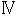 すれ違い 華やかな社交界の裏側
指輪の中から紋章を見つけた数日後の夜。ラティカはリュートと共に馬車の中から、ある屋敷を見上げていた。
「これが女公爵の屋敷か......いつの間にできたんだ？」
目を細めて呟くリュートの横でラティカはただ茫然とその様子を見つめる。
「すごいわね......まるでおとぎ話の世界を見てるみたい」
ラティカたちがルビアにたどり着いた時も夜だったが、あの時は人気も疎らで街灯など一つもなかった。
でも今二人がいるこの場所は違った。屋敷を取り囲む鉄柵にはいくつものランプが照らされ、ルビアの兵らしき者たちが直立不動で門の番をしている。
そして屋敷の使用人たちが、客たちを迎えては屋敷の中へと通していく。
屋敷の前にはたくさんの馬車がとまり、そこから降りてくるのはイブニングコートを纏った紳士や、宝石やドレスで着飾った婦人たちだ。もちろんラティカたちと年の近い男女などもいたが、皆目もくらむような豪華な正装をしておりどこか大人びて見えた。
「こんな人たちルビアで見たことないわ。一体今までどこにいたのかしら......」
「そりゃぁ貴族だから当然さ。普段は屋敷の中でのんべんだらりと暮らして、皆、今夜のためにとびきりのものを身につけてるからな。着飾ってないと不安なんだ」
「着飾ってないと......怖い場所なわけ？ 社交界って」
ラティカが呟くと、リュートは「ああ恐ろしいところだよ」屋敷の中へと入っていく人々にどこか悲しそうな嘲笑を向ける。
「社交界なんて、聞こえのいい言葉だけど、これからオレたちが入る屋敷の中はある意味見栄の張り合いの戦場みたいなもんだ。持っている最高のもので着飾って、退屈な日々を忘れるために金儲けや噂話に興じるだけの空しい場所だ。オレは昔からこういう場は嫌いなんだ」
リュートの言葉はやけに刺々しいものだった。ただそれでもラティカにとっては生まれて初めての社交界だ。談笑しながら屋敷の中に入っていく女性たちの姿を見ていると、華やかなその世界に興味はどんどん大きくなる。
「ふぅん......そういうものなのね......」
だから彼の言葉にも空返事しかできない。リュートもまたそんなラティカの様子をわかっているのか、気を取り直したように笑った。
「今のオレたちも似たようなもんだ。中に入ったら紳士と淑女。いやでも見定められる。でも、それなりの格好もしてるし、下手なことを言わない限り大丈夫さ」
そう言ってリュートは身に着けていた衣服の首元を緩める。彼が身につけているのは詰襟のついた軍服のようなしっかりとしたものだった。いつも身につけている胸当ても、腰につけている剣もない。
ここに来る前、胸当てをつけていくと言っていたが、さすがにそれはとラティカがとめた。いくら社交界に行ったことのないラティカでも、サビの浮かんだ胸当てをつけて社交界に参加するなど聞いたことはなかったからだ。
「なんかいつもと違うと調子狂うな......」
普段そこにある剣がないことが不安なのか手持無沙汰な様子を見せる少年に「そう？」ラティカは笑って答えた
「でも結構似合ってるわ、その格好。貴族らしいわ」
「そっか。姫もそのドレス、よく似合ってる」
リュートはもちろんのこと、今日はラティカも社交界に合わせた衣服を着ていた。先日骨董店で試着したあのドレスだ。あの後、リュートは骨董店の店主と交渉し、ドレスを購入してくれ、その他必要なものもそろえてくれた。
今こうして二人が乗っている馬車も、借り物ではあるが立派な貴族仕様のもので、怪しんで近づいてくる者はいない。
「二人とも。準備はいいかい？」
馬車の中を覗きこんで尋ねてきたのは、金歯を光らせた従者姿の骨董店店主だ。
「もうすぐはじまるようだよ、そろそろ行ったほうがいいんじゃないかい？」
「ああ、もう出るから待っててくれ」
リュートは頷くと、ラティカに確認するように尋ねた。
「練習したこと、覚えてるか？」
ラティカは「もちろん」と頷き口を開いた。
「あたしの名はラティカ・ディオン。両親はルビア人だけど、ブルーナで交易関係の仕事を営む実業家。一人娘の私はブルーナ生まれで、寄宿舎育ち。今回は休暇で初めて両親と共に故郷であるルビアにやって来たけど、両親は体調を崩したのであたしが一人で参加した――ってこと」
「そう。両親の仕事のことを聞かれたら、まだよくわからないって答えておけば大丈夫だ。その代わりブルーナのことを聞かれたらできるだけ詳しく話すこと」
「ええ、ブルーナのことは任せて」
「それと『あたし』じゃなくて『私』な。言葉使いも気をつけたほうがいい、社交界の奴らは小さなこともつついてくるからな。それとあんまり男とは話さないほうがいい」
「......どうして？」
「ここは社交界だぞ？ 女好きの男がたくさんいるんだ。それに屋敷の中では酒が振る舞われる。余計なトラブルに発展しそうなことは避けるべきだ」
「そうなの......わかったわ」
ここに来るまでの間にテーブルマナーや挨拶の仕方など、いろいろと社交界について話を聞いてはいたが、言葉使いや話す相手までも気をつけないといけないと言われて、ラティカは多少うんざりとしながら頷く。すると「それじゃあこれ」少年に封筒を差し出された。受け取って開いてみれば中にカードが入っている。
「招待状だ。骨董店の親父に頼んで作ってもらった。これを門の前で出せば中に案内してもらえるから、そのまま普通に屋敷の召使いのあとについていけばいい」
「ついていけばいいって......リュートも一緒に行くんでしょ？」
一緒に入るのならばリュートについていけばいいだけと思っていただけに、不思議に思ってしまっていると「行くよ。でも別行動だ」意外な言葉が返ってきた。
「屋敷の中では姫とオレはあくまで他人同士で。もし会場内で会ったとしても無関係を装うんだ。帰りはまたこの馬車が迎えに来てくれるから、それで宿に帰ること。いいな？」
「ちょっと待って。帰りも別々なの？ それにどうして他人同士じゃなきゃいけないわけ？」
自分は社交界に出るのは初めてなのだ。この日が来るまでの数日間、いろいろと社交界での振る舞い方は聞いてはいたが、さすがに一人となると心細い。
「リュートも騎士で伯爵の家の出でしょ？ 本物の貴族と一緒にいたほうが怪しまれないで済むじゃない」
ラティカが不安を口にするが、リュートは「それでも離れてたほうがいい」首を横に振る。
「年の近い男女が二人でいたら社交界内のいい噂の的だ。姫の両親について調べるより前に噂好きな婦人たちに囲まれちまう。別々に動くほうが効率がいいんだ。......大丈夫だって。本当に何かあった時はすぐ駆けつけるからさ、な？」
「そう......じゃあ仕方ないわね......」
ただでさえ初めての場所で心もとないが、確かに自分は貴族ではないのだし、メルダという女性に直接交渉するのは難しいだろう。多少納得できない気分だったが頷くと、少年が馬車のドアを開けた。
「じゃあ姫から先に出てくれ。オレもしばらくしたら行くから。社交界の雰囲気を楽しんでおいで」
眩しく大きなシャンデリアに、壁につけられた煌びやかな装飾品。床には豪華な毛並みの深紅の絨毯が敷かれ、柱一つ一つにも細かい彫刻が施されている。
トレーにシャンパンを載せた屋敷の従者たちは、洗練された無駄のない動きでゲストをもてなし、シャンパングラスを受け取った婦人や紳士は談笑に興じていた。
招待状を渡し、通された屋敷のホール内で、ラティカは思わず口をぽかんと開け、その様子を見てしまう。
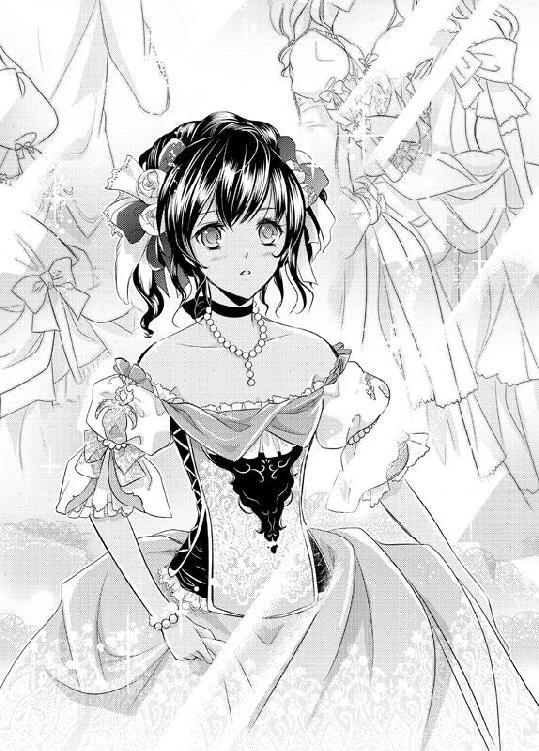
――ここが社交界......。
優雅な生演奏が流れ、色とりどりのドレスが目の前を行き来する。ホールの中央にある大階段は二手に分かれ、その奥には巨大なステンドグラスがある。
「どうぞお寛ぎください。レディ」
中に案内してくれた屋敷の従者が下がり、いよいよ一人ぼっちだ。
ラティカは眩しい屋敷の内装と人の多さに眩暈を起こしそうになりながら、ドレスを引きずり、ホールの隅へと移動した。
すると先ほど従者に連れられて自分が入ってきた場所からリュートがやって来た。彼も自分と同じく従者に案内されている。だがもちろん約束した通り、この場所では他人同士。一瞬リュートはラティカに気がついたが、何事もなかったように大階段を上がっていく。そのそっけなさがなんとなく寂しく感じたが、それも自分の親探しに集中するためにしてくれていることだ、仕方がない。
――無事メルダって人と会えるといいんだけど......。
骨董店の店主が言うには、メルダは今一番ルビアで注目されている女公爵ということだった。
生粋のルビア人である彼女は、息を呑むほどの美貌の持ち主で貴族の中でも最高位である『公爵』の階級を国王にもらい受けた王国お抱えの錬金術師。だがそんな彼女の名が広がりはじめたのはつい最近のことらしく、それまでの経歴は謎に包まれているらしい。
地位も名誉も手に入れ、美しさと才能を兼ね備えた彼女は今や社交界での注目の的。今夜の彼女の屋敷で行われているパーティも、王国最大級のものであり、今日のために他国からやって来た貴族もいるとのことだった。
そんなにすごいメルダという女性は一体どんな人物なのだろう、と思いながらラティカは屋敷の中をゆっくりと歩きはじめた。
人ごみは苦手だが、混雑していた客船の時ほど気分は悪くなかった。ドレスの裾をそっとたくし上げれば、ブレスレットについた宝石がシャンデリアの明かりに反射して輝く。
一歩、足を差し出せば自分の履いているドレス用の靴についた装飾がシャラッと心地のよい音を立てる。
よく磨かれた屋敷内の燭台や銀食器にチラリと映る自分の姿はどこからどう見ても貴族だ。今身につけているものすべて、まわりの女性たちのドレスに引けを取っていないのは、社交界が初めてのラティカにもわかる。その証拠に屋敷の従者が新参者であるラティカに怪しむこともなく、トレーにグラスを載せて近づいてきた。
「レディ。シャンパンはいかがですか？」
「お酒は苦手なの。他に何かないかしら？」
「それでしたらあちらの広間のほうに果物が用意してあります。アルコールのない飲み物もご用意させていただきます」
「そう、ありがとう」
前にリュートに教えてもらった通りの言葉を返せば従者は恭しく頭を下げて去っていく。まるで自分が王族にでもなったかのような気分だった。
――とりあえずあとはリュートに任せて、あたしは楽しもう。
ラティカは期待と緊張を胸に屋敷の奥へと進んでいった。
優雅に流れる音楽に合わせ、紳士と淑女は手を取り合い踊る。
傍にあるカウチソファに腰をかけた男たちはパイプを咥えながらカードゲームに興じている。
女性たちは所々で輪になり、開いた扇子を口元に楽しそうに談笑を交わす。
パーティがはじまってから数刻。宴もたけなわに近づいてきたせいか、屋敷の中は和やかな雰囲気だった。
ラティカはその様子をぼんやりとソファに腰かけながら見つめていた。
――なんか飽きてきちゃった......。
屋敷の中に置かれた装飾品は確かに煌びやかだった。今座っているこのソファも心地いい。料理だって美味しいし、流れてくる演奏も悪くない。すれ違う女性たちの豪華な装いに目を奪われもする。だがここもやはり客船に乗った時と同じだった。楽しかったのは最初だけ、あとは時間が経つのをひたすら待つだけだ。
自分の飽きっぽさに嫌気がするも、それが素直な感情なのだから仕方がない。
「リュートが苦手だって言ってたの......なんとなくわかる気がする」
ソファから腰を浮かせ、傍にあるローテーブルに置かれた皿から直接フルーツをつまみ上げて口にする。ここに入った最初のうちは礼儀作法に気を使ってはいたが、皆振る舞われたシャンパンやワインに酔い、今となっては誰も気にしている様子はない。
もちろん最初のうちは違った。探索するように屋敷の中を歩いているとラティカが新参者のせいもあるためか、興味を持って声をかけてくる婦人たちも何人かいた。
「あら、初めて見る方ね」
「素敵なドレス。どちらで仕立てたものなの？」
「ご両親のお仕事は？」
だが、かけられる言葉はすべて似たようなものばかり。前もってリュートと共に決めていた偽の経歴を答えるも、その後の彼女たちの会話の輪には入れなかった。
ある有名調香師の新しい香水を購入した話や、魔族に攫われていた姫の無事が、十数年ぶりに確認されたこと。とある貴族が賭けで大損したとか......。彼女たちの会話はシャンパンやワインが振る舞われるたびに饒舌さを増し、ラティカも何度か話を振られはしたが、あまりうまく答えることができなかった。そのため、婦人たちはラティカから得る真新しい情報がないと悟ると、さっさと離れていった。
――まあ、しょうがないわよね。ルビアに来るのは初めてなんだし、生活だって違うもの。
食後の紅茶を口にしながら楽しそうに会話をする女性たちを横眼に、やけに冷静になってしまっている自分がいた。
またリュートもラティカと同じ部屋へやって来ていた。部屋といっても広く、端から端までかなりの空間があるため、こちらからは少年の表情は見えない。
だがまわりの客人たちと賑やかな笑い声を上げているのはわかる。きっと久しぶりの友人たちとの再会ということもあり、会話に花を咲かせているのだろう。
メルダとは無事に会えたのだろうか？ そして何か新しい情報はあったのだろうか？ いろいろと尋ねたいことはあったが今は聞けず、ただ時間が過ぎるのを待つばかりだ。
――一体いつお開きになるのかしら。
できれば今すぐにでも宿に帰ってベッドに横になりたかった。慣れない靴を履いたせいもあるのか足はもう棒のようだ。
口元を手で隠し、欠伸を噛みしめていると、一人の男性がソファの隣に腰かけてきた。
途端、ドレスの一部がクイッと男性のほうへと引っ張られた気がし、ラティカが顔を向ければ、男性の腰とソファの間にドレスの裾が挟まってしまっていた。
この場合は何も言わずに裾を引いていいのだろうか。それとも一声かけるべきだろうか......そんなことを考えていると、男性はラティカの視線と状態に気がついたらしい。慌てて腰を浮かせて裾を解放してくれる。
「これは......大変失礼しましたレディ」
「いえ、気づかず裾を広げてた私も悪いので」
リュートに教えられたように、ラティカがにっこりと笑うと、男性もつられて微笑む。そして改まったように挨拶をしてきた。
「はじめまして、私の名はアラン・ウェルジャジー。両親は貿易商を営んでおります」
男性は美しい顔立ちをしていた。気品あふれる涼しげな目元に明るい茶色の目を持ち、白色系の手で握手を求めてくる。
「あ......私はラティカ・ディオン。私の両親もブルーナで貿易商を営んでいますの――」
ラティカは握手を返し、さっきまで他の女性たちにしていたように名前以外の偽の自己紹介をする。だがそこでしまったと口を噤んだ。
リュートとの約束で男性とは話してはいけないのだった。それに今、相手の両親も貿易商と言っていた。同じ職業となると会話にボロが出てしまうかもしれない。その証拠に目の前のアランと名乗った男の表情が親しげに変わっていく。
「そうでしたか。同業者で」
アランは「いや、よかった」心底嬉しそうに頷くとラティカを見つめてくる。
「さっきまで話した方たちは、皆年上の方ばかりでして。こうやって年の近い方とはなかなかお話できなかったんですよ。......失礼ですが、今までお見かけしたことがないような？」
首をかしげた青年の言葉にラティカはギクリと肩を震わせた。
「休暇で初めて来たので。それと私、仕事に関しては何も教えてもらっていないので......」
「そうですか。でも確かにこの話はレディには退屈ですよね」
そこまで言うとアランはソファから腰を上げ、そっとラティカに手を差し出した。
「もしよければホールのほうで一曲お相手してくださいませんか？」
それは初めてのダンスのお誘いだった。気がつけばさっきまで演奏されていた曲が終わり、踊りを終えた男女たちがちらほらと部屋に入ってきている。
「でもごめんなさい。私......踊ったことなんてなくて......」
「大丈夫ですよ、次はスローワルツの曲だ」
「ワルツ？」
ワルツとは一体どういう意味なのだろうか。ラティカが首をかしげると「私の足に合わせて動けばいいだけですから」半ば強引に手を引かれ、ホールへと引きだされてしまう。
ラティカは驚きで「あのっ......」口をぱくぱくとさせることしかできなかった。ホールの横にいた演奏家たちがゆっくりと曲を奏ではじめる。自分たちのまわりにもダンスの参加者が現れ、手は青年に握られたまま。逃げることはできなかった。
「恥ずかしい......」
消え入りそうな声で呟くと「大丈夫、誰も見てませんよ」アランはもう片方の手もラティカの手に添えた。
「私の足元を見て、その足とは反対の足を出すんです。いいですね？」
曲の流れに合わせ、二人を取り囲むようにしていた他の男女たちが踊りはじめる。体がアランに引き寄せられ、ラティカはただ言われた通りに足を差し出し、ステップを踏んでいった。
だがダンスをしながらもラティカの心は不安でたまらなかった。
――いいのかしら、こんなことして......。
リュートからは男と話すなと言われていたのに、こうして見知らぬ男と二人でダンスまで踊ってしまっているのだ。それも手を握り合わせ、体を密着させて......。
でもその不安はしばらくアランと踊っているうちに薄れていった。今頃リュートも隣の部屋で談話を楽しんでいるのだ。少しくらい異性と話したってなんの問題もないではないか。目の前の青年は酒に酔った様子もなく、少々強引だが紳士的には変わりない。
それに最初は足が縺れそうになったり、アランの靴を踏みつけそうにもなったが、確かに彼の言う通りダンスは簡単なものだった。
ゆっくりと流れるような美しい音楽に乗せられ、自然と体はステップに慣れて動いていく。余裕が出てきて顔を上げて見れば、しっかりと踊れている証拠に、ダンスを見守る客たちの視線も温かいものだった。
「そう。上達が早いじゃないですか」
「そんなこと......ないです......」
目の前でアランに微笑まれ、ラティカは頬を赤く染めた。
リュートやグレミオ神父など、ある種わけありで密着したことのある彼たちを入れなければ、こんなに男性と密着したのは生まれて初めてのことかもしれない。
だがすぐにラティカは......いや、違う。初めてではなかった、と心の中で訂正する。
頭の中に薄情そうな笑みを浮かべる魔道士の顔が浮かび上がる。自分の肩に手を回し、耳元で「君は何がいい？」と、土産の希望を尋ねられた時のことを。
直後、ラティカはビクリと肩を震わせた。いやな予感が頭を過ぎる。
――まさか、この人、シアンじゃ......。
アイツは言っていた。なんとしてでも自分を捕えると。船の上で厳つい男に姿を変えることだってできていた......。シアンに用心しろと言っていたリュートの緊張した面持ちも浮かぶ。
ハッとなって顔を上げると「どうですか？ なかなか楽しいでしょう」青年は屈託のない上機嫌な顔をしてラティカを見つめていた。
「この曲で今日は最後だそうですよ。今夜は貴女に会えて......最後に一緒に踊れてよかった」
涼しげな目元が、あの魔道士と重なったように見えた。
直後、自分が今とんでもないことをしてしまっているのだと後悔する。彼がシアンなのかどうか確信は持てない。ただシアンだとしたら今彼に手を握られているのだ。
ラティカは表情を強張らせてアランから顔をそむけると、ぎこちないワルツを踊っていった。やがて曲が終わると同時に手と体を離すが、それをアランは不思議そうに尋ねてくる。
「ラティカさん？ どうかしました？ 私何か失礼なことでも......」
「いえ......その......なんでもないです」
ダンスを終えた男女が散り散りになっていくホールの中心で、ラティカは言いにくそうに言葉を出していく。
「時間も時間ですし、もう帰らないと......」
実に不自然な気の変わりように目の前の青年も不安そうだ。その姿を見てラティカの胸はチクリと痛む。
もし彼がシアンならばこうやって二人きりになった時を狙って、何かしらの行動を起こすはずだ。だが目の前の青年は不安そうにラティカを見つめている。もしかしたら彼はただの善良な紳士で、あの魔道士ではないのかもしれない。そうなると自分が今、彼に対して見せている態度は実に失礼なものだ。
「ラティカさん。失礼ですがお泊まりはどこへ？ よろしければお送りさせてください」
「いえ......迎えは来てますので」
「そうですか。もしよろしければお泊まりの場所を教えて頂けないでしょうか......後日改めてごあいさつを――」
「それは......ごめんなさいっ!!」
もうこれ以上言いわけはできそうにもなかった。
彼がシアンかもしれないと疑惑が浮かんだ今、素直に親しくすることなんてできない。彼がシアンでなかったとしてもこれ以上の会話は危険だ。
ラティカは彼に背を向け、小走りに屋敷の外へと向けて駆け出していく。
「ラティカさんっ!!」
背後でアランの声が聞こえるが、振り返る気にはなれなかった。
とにかくもうパーティは終わりだ。屋敷を出るとちょうど迎えの馬車が来ているのが見える。
ラティカはアランに失礼な態度を取ってしまったことを悔みながらも、逃げるようにその場をあとにしたのだった。
骨董店の店主に馬車で送られたラティカは、宿の部屋に入るとすぐに着替えをはじめた。髪飾りをテーブルの上に置いて、履いていた靴をベッドの下へと転がし、ブレスレットやドレスをはぎ取るように脱ぎ捨てていく。
そしていつもの衣服を身につけると部屋に乾かしてあった布を手に取り、部屋を出て湯浴みに向かった。とにかく少しでも気分を社交界の余韻から遠ざけたかったのだ。
煌びやかなパーティに不満はなかったが、最後に出会ったアランに対しての後ろめたさを、化粧と共に洗い流してしまいたかった。
あの人はきっと自分の行動を不愉快に感じたに違いない。せっかく退屈していた自分に話しかけてくれたのに、自分の不安から無作法な態度をとってしまった。
彼がシアンだったとしても、そうじゃなかったとしても後味は悪い。
気持ちが落ち着きはじめたのは、湯を浴びて体を洗い終えた頃からだ。存分に体を温めてバスタブから上がり、普段の衣服を身につけて部屋に戻る時にはようやく気持ちが上向きになってきていた。
宿の中は日付も変わったこともあり、しんと寝静まっていた。
「そろそろリュートも戻ってる頃よね」
メルダとはちゃんと出会えたのだろうか？ 何か両親に繋がるような情報があればいいけど......。湯浴みを済ませたラティカは足早に廊下を歩き部屋へと戻っていく。
部屋に入ると予想通り少年は戻ってきていた。
貴族服のまま備えつけられた椅子に腰をかけ、難しそうな顔をして両手を組んで目をつぶっている。一瞬寝ているのかと思ったが、部屋の扉を閉めるとゆっくりと目を開ける。
「おかえりなさい。ずいぶんと遅かったのね」
社交界で放っておかれたことを根に持ちながら言うと、少年は「ああ」と、ぶっきらぼうに答えた。一瞬ムッとしそうになったが、それを押しとどめた。
今はそんなことよりも指輪の情報についてのほうが大事だ。
「それで何か情報は？ あたしの両親は本当に貴族だったの？」
「......メルダ様は不在だそうだ。後日改めてまたパーティをするとさ......」
不機嫌そうな物言いは酒のせいだろうか、いつもとは違いラティカと目を合わせようとすらしない。
「そう......じゃあお風呂入ってきたら？ さっぱりするわよ」
だが返事はなく、こちらを見ようとさえしない。
いくら酒が回っているとはいえ、その態度に腹が立ってくる。
――何よ、あの態度。もう構ってらんないわ。
こっちだって慣れない社交界の中、いろいろあって大変だったのだ。ラティカは手にしていた濡れた布を窓辺に投げ置くと、そのままベッドへ入ろうとした。だがその直後、突然リュートに腕を強く掴まれた。
「きゃっ。な、何するのよっ」
思わず睨みつけるように振り向けば、少年はラティカ以上に怒りを露わにこちらを見ていた。
「あの男、誰だよ」
「はあ？」
一瞬何を言い出したのかと眉を顰めるが、すぐにその男がアランのことであると気がついた。
だが少年に乱暴な物言いをされたことに腹が立ち、素直に謝る気にはなれなかった。ラティカはフンッと鼻を鳴らして顔をそむけた。
「......見てたのね。おしゃべりに夢中で気がつかないと思ってたわ」
「ああ見てた。見てたさ、ずっとな。見ず知らずの男に手を引かれてワルツを踊る姿もしっかりとな。男とは話すなって言ったはずだ。どうして約束を破ったんだよ」
「しょうがないでしょ？ あっちから話しかけてきたんだもの。それにダンスだって無理やり誘われたのよ。一曲ぐらい仕方ないでしょ？」
「でも約束したはずだ。男とは話さないって」
そこまで言ったところでリュートはラティカの体をベッドへと押し倒した。一人用の安宿のベッドマットは二人の体重を受けてギシッと音を立ててへこむ。
「ちょっと、やめてよ」
じたばたと暴れるが、体の上に乗りかかった少年は退こうとはしない。それどころか腕を掴む力はさらに強くなり、ラティカの股の間に足を差しこんできた。衣服の裾が捲れ上がり、入浴で火照った太腿が露わになる。
少年の酒臭い息が大きな声と共に顔に浴びせられる。
「アイツと何を話してた。なんで姫にあんなになれなれしかったんだ。アイツ、オレのことを知ってたんじゃないのか？ 約束したじゃないか、社交界の場で他の男と親しくするなって！ なのにどうしてっ――」
捲し立てるように声を上げてくるリュートにラティカは言葉をなくしていた。今まで見たことのない少年の怒りに満ちた表情に何も口答えできない。
ブルーナを飛び出したいと言った時や、骨董店でドレスをねだった時も、ただ困るような顔をするだけだった彼が、唇を噛みしめて自分を睨みつけている。
確かに約束を破ってしまった自分も悪いとは思う。でもいくら酒が入ってるとはいえ、そこまで怒りを露わにされるとは思いもしなかった。
「放してよ。腕、痛い......」
締めつけられた手首は赤くなりはじめている。ラティカは唇を震わせながら少年を見上げるが、彼はそれでも手を放そうとはしなかった。それどころか露わになった太腿の付け根に向かい、もう片方の手が下ろされていく。乱暴に動く手はラティカの褐色の肌を掴むように動きはじめる。
「や、いやっ。やめてっ!!」
今の状態でこんなことをされるのはいやだ。ラティカは両足をバタつかせて叫ぶ。するとそれを黙らせるかのように少年の顔が首筋へと落ちてきた。
「なあオレは騎士だろ？ 姫の騎士だよな？ 誓っただろ？ ブルーナの海辺の小屋で。忘れたのかよ」
まるで子供が確認するような惨めな呟き声と共に、熱の籠った吐息が首筋に吹きかかる。
だが今のラティカにとっては納得できなかった。いくら酔っているからとはいえ、そして自分が約束を破ってしまったとはいえ、このまま身をゆだねる気には到底なれない。
「忘れてないわよ。ちゃんと覚えてる。でも、でも――」
「それならなんで拒むんだよ......約束が違うじゃないか......」
少年の声がさらに惨めったらしいものになった。でも泣きたいのは自分のほうだ。加減もなく掴まれた腕はヒリつくように痛く、痺れはじめている。下半身をまさぐるように動く手も今は不快な感触でしかない。
「忘れてないし、契約もした。でも......本心でリュートのことを好きかどうかなんてわからない。だから今はそういう雰囲気になんてなれない」
それが初めてラティカが言葉にできた本心だった。確かに契約はしたが骨董店の試着室の中で感じたように、素直に彼に身をゆだねることはできないと思った。
約束は約束だということは頭ではわかるが、今こうして自分の体に覆いかぶさる少年が怖い。酒の匂いを漂わせ、力ずくでどうにかしようとしている彼に嫌悪感すら覚えてしまいそうだ。
「お願い、今日はもうやめて......本当にそんな気分になれないの......」
その言葉が限界だった。あとはもう声にならない。何か言おうと口を開けば、鼻の奥でツンと引っかかるような感覚が生まれる。涙が出てきてしまいそうだ。
もうこれ以上目を開けていることもできなかった。少しでも何かをすれば雨が降ってしまう。そんなことになったら、せっかくここまで両親を探しに来たことが無意味になる。
すると「姫......」少年の息を呑む音が聞こえた。ラティカの泣きだしそうな表情に気がついたのだろう。少年の体が離れ、きしんだ音を立ててベッドマットが浮き上がる。
「......リュート......？」
ゆっくりと目を開けて顔を上げれば、少年はラティカに背を向けて項垂れていた。
「とりあえず次のパーティは一週間後だ。ドレスはその時にまた着るんだから、皺にならないようにちゃんとしまっておいたほうがいい」
そしてベッドに脱いで広げられたドレスに視線を向けて言うと、「風呂行ってくる」部屋から出ていってしまう。
バタンと扉が閉まり、一人になったラティカはゆっくりと身を起こして呟いた。
「何よ......何なのよ......」
ショックで声は震えたままだった。でもどうにかその場を乗りきることができたことにホッとする。立ち上がり、ドレスを部屋のクローゼットの中へと放りこんでラティカはベッドの中へ潜りこんだ。
――あたし、そこまで悪いことしたのかしら。
確かに男性と話したのはルール違反だったかもしれない。でも結局は正体もバレず捕まらなかったのだから、あそこまで怒ることないではないかとも思う。あそこまで怒った少年を見たのはショックだった。
しばらくは気まずい余韻が残り、シーツの中で悶々としてしまう。
だが、疲労感には勝てなかった。いつしか睡魔に襲われリュートが湯浴みから戻ってくる頃には眠りに落ちていた。
同じ頃――
メルダの屋敷の中を足早に進む魔道士――シアンの姿があった。カツカツと小気味よい靴音を鳴らし、客人が去って片づけにいそしむ召使いたちの横をすり抜けていく。屋敷の者たちは皆、シアンを見ても軽く頭を下げるだけで何も声をかけない。
「またやって来たよ」
「こんな時間になんて奴だ、非常識な奴め」
ひそひそと厨房で陰口を叩き、呆れた視線を浮かべるくらいだった。この屋敷の者たちで彼を知らない者はいなかった。
――所詮下っ端の僻みでしかない。
彼らの声を耳にし、シアンはフンと余裕のある笑みを浮かべる。今はそんなことに気を取られている暇はなかった。
「とにかく今はメルダ様にこのことを早くお伝えするのみだ」
言い聞かせるように呟き、シアンは足早に屋敷の奥へと進んでいく。しばらくすると、ちょうど荷降ろしをしたあとなのだろう。メルダのものらしい旅行鞄を屋敷の奥に運んでいた初老の男がシアンの姿に気がつき、慌てて近づいてきた。
「メルダ様がお帰りになったとか」
「ええ。今しがたご到着なされました。しかし今日はもう夜も更けてますゆえ、どうかお会いするのは明日に――」
「いや、急ぎの用なんだ。メルダ様はこの奥に？」
「ええ、ええ......そうですが今夜はどうかお引き取りください。メルダ様も長旅で疲れておりますので。今夜のパーティの不参加に関してのお詫びは後日改めて――」
「パーティについて文句を言いに来たんじゃないさ」
シアンは笑いながら言うと、手にしていた杖の先端で軽く男の頭を叩いた。直後、社交辞令な笑みを浮かべていた男の体が、そのまま石のように動かなくなる。
「とにかく、すぐ済むからお邪魔するよ」
シアンは固まった男を横目に扉を開け、その部屋の中へと入っていった。
その部屋はシャンデリアなどがある他の部屋と比べてずいぶんと薄暗かった。異国の甘い香りがぷんと漂う中、所々に置かれた大小の蝋燭が揺らめいて、ぼんやりと室内を照らしていた。
シアンの目の前には重厚なカーテンがあった。それはよく見れば幾重にも重なったレースのカーテンで、その向こう側の足元に椅子に腰かけた女性の足が見える。
カーテンには女のシルエットが映っていた。髪止めを外し、左右にゆっくりと首を振って髪の毛を下ろす姿が映っている。
褐色の肌の足首に巻いた装飾品を揺らしながら、その主は声をかけてきた。
「こんな時間に、一体なんの用なのシアン」
それは少し神経質そうな気高い女の声だった。長旅から今しがた戻ってきたこともあって疲れているのだろう、カーテンの奥で深いため息が聞こえてくる。
「私は疲れているの。用があるならさっさと言って出ていって。それと従者にいたずらに魔法をかけるのはやめてほしいわね」
「申しわけありませんメルダ様。しかし少しでも早く貴女様にお伝えしたかったのです。魔法のほうは、なあに、数時間で戻りますよ」
レースの向こう側、メルダと呼ばれた女性は「伝えたいこと？」眠そうな声を漏らし足を組み直す。すらりと長い褐色の足首がレースからさらに大きく覗き、シアンはひざまずいてその足の甲を手で掬いキスを落とした。
「......堅苦しい挨拶は結構よ。で、何？」
不機嫌そうな声をかけられ、シアンはやれやれと苦笑を浮かべながらも、大げさに手振りで伝えた。
「ついに見つけたのですよ。涙子を」
「......涙子、ですって？」
メルダの声に緊張したものがこめられた。それを確認したシアンは「ええそうです」得意げな笑みを浮かべて一歩メルダの前へ出た。
「以前言っておられましたよね？ 研究のために涙子が必要だと。涙子が手に入るのであればいくら積んでも構わない......と」
「確かに......してシアン。それは男？ 女？」
「女ですよ。それもまだ少女です。ですから涙も流させやすいかと......」
「そう......」
カーテンの向こう側でメルダは何かを考えこむように黙りこむと「では......」改まったように言った。
「その涙子をなんとしてでも私の元へ連れてくるように。ただし、貴重な涙子ゆえまわりには悟られないように万全の注意を払って。それに涙子は大事な実験材料、傷一つつけずに差し出すように」
「もちろんですとも。そのためにこうしてお忍びでお伺いしたのですから」
「報酬の話はそれからでいいわね？」
「ええ。それで構いません」
「そう、よろしく頼むわ。ではもう今夜は下がってちょうだい。私は眠たいの」
「わかりました、では失礼致します。愛しいメルダ様......」
シアンは頷くと立ち上がり素直に部屋を出ていく。扉が閉まり、足音が去るとカーテンの向こう、美しい口元を心底気味悪そうに歪めて「相変わらず気味の悪い男だこと」メルダは吐き捨てるように呟く。
そして椅子から立ち上がり、カーテンを開いて、傍にある姿見を見つめた。そこに彼女自身の姿が映る。濃い褐色の肌に輝くような美しい金髪。スッと通った鼻筋に少し気の強そうな目元。
「でもまあ、こんな時だからこそ、いいタイミングだったのかもしれないわ」
メルダは鏡越しの自分に向かって呟くと「雨を降らせる方法......なんとしてでも早く見つけなければ」
長く整った爪を軽く噛んだ。
「私にはまだやることがあるのだから......」
美しい顔とは不釣り合いなその行為を、蝋燭に照らされた姿見はぼんやりと映し続けていた。
女公爵 没落騎士に秘められた事情
「メルダはもう屋敷にいるらしい、先日町で見かけたって骨董店の親父が言ってたよ。どこか異国に行ってたらしくてすごい量の荷物だったってさ」
「へえ、そう......」
「パーティは二時間後だけど、どうだ？ 先にどこかで夕飯でも食べてから行かないか？」
「別にお腹すいてないわ。さっき下で食べてきたもの」
「そ、そっか......」
――今日も、駄目か......。
宿の一室で、こちらに振り返りもせずに答えたラティカに、リュートは困り果てていた。
女公爵メルダの屋敷のパーティの日から一週間。あの日の夜を境に少年と少女の関係はよそよそしく、部屋の中の空気はぎくしゃくとしたものになっていた。
どうしてこんなことになってしまったんだろう......とため息を漏らしながら思うが「当然だよな......」とすぐに後ろめたい気持ちになる。
少女が怒りを抱き続けているのは当たり前のことだ。酒に酔った上、絡むように彼女を責め立て、いやがる彼女を無理やり抱こうとしたのだから。
これまでに何度「あの時はごめん」と謝ったことだろう。謝った時には「もうそれはいいから」とは言ってくれるのだが、態度は相変わらずそっけないものだった。
だからしばらくして、もう謝るのはよすことにした。その代わり、何事もなかったように今接しているつもりなのだが、少女の反応は冷たいままだ。
いい加減に機嫌を直してほしいとは思う。だからと言って自分が言える立場でないのもわかる。部屋の中、自分の乾いた笑いが響くだけだ。
「なあ、飯は食いにいかないとしても、そろそろ準備したらどうかな？」
気まずい空気は苦手だ。リュートは精いっぱい明るい声を出し、ラティカに声をかける。
「今日は風も強いみたいだし、屋敷に向かう馬車も遅れそうだしさ。オレ、下で待ってるから、早めに出るようにしよう」
今夜もまたメルダの屋敷でパーティがある。今夜こそホステスである彼女は客前に姿を現すはずだ。遅刻することだけはしたくない、とリュートが伝えるが、ラティカは振り返らずただ窓の外を見ているだけ。
そして短く「あたし、行かない」と、冷たい声を漏らした。
「あたしが行ったって、どうせリュートはまたパーティ中はあたしを無視するんでしょう？ 会話をする相手も制限させられるくらいなら、一人でここで待ってたほうが気楽だわ」
そして自分の指から指輪を引き抜いて、リュートのほうへと差し出してくる。
「無視って......そんな悪い言い方するなよ。オレはただ姫のことを思って――」
「いいから。とにかく今日はここで待ってる」
ラティカの決意は固いようだ。何を言っても連れ出すことはできないだろうし、無理に連れていってもさらに彼女を不機嫌にさせてしまうだけのように思える。リュートは「わかった」諦めの声を漏らし、指輪を受け取った。
「じゃあ姫はここで留守番しててくれ。夜は危険だから一人では外に出ないようにな」
「そんなこと、言われなくたってわかってるわよ」
ラティカの返事は刺すような冷たいものばかりだ。
仕方がないとは思いつつも、この状態が続くのはつらかった。「なあ姫」リュートは落胆しながら少女に向かって言った。
「あんなひどいことして今さら言える立場じゃないのはわかるけど、でもオレは騎士だ、嫌われようとも約束は絶対に守る。ちゃんと両親の元へ送り届けるから、それだけは信じていてほしい......」
だが少女からの返事はなく、リュートは「じゃあ......行ってくる」静かに廊下に出て扉を閉めた。
部屋を出たことで息苦しさは和らいだが、リュートの気分は重苦しいままだった。
一週間ぶりに訪れた女公爵の屋敷の中は、以前と変わらぬ豪華な装いでパーティゲストたちを迎え入れていた。
「リュート・ハウロック様ですね。ようこそおいでくださいました」
門をくぐるとすぐに屋敷の従者が恭しく礼をして近づいてくる。
「招待状のほう、よろしいでしょうか？」
「ああ。メルダ様はお戻りに？」
「ええ、先日のパーティの後すぐに。しばらくしたら降りていらっしゃるかと。――それでは中へどうぞ」
招待状を確認すると、従者はリュートを屋敷の中へと案内をはじめる。屋敷の中は先週と同じく紳士淑女で賑わいを見せていた。生演奏が流れ、歓談をする貴族たちの人ごみの中へと入っていくと、すぐに横から「いかがですか？」屋敷の者にシャンパンを振る舞われる。
「ああ、ありがとう」
笑顔を浮かべてグラスを受け取るも、そんなリュートとは対照的にまわりの反応は冷ややかだった。
「おい、また今日も来たぜアイツ」
「よく堂々と来れるもんだよなぁ。しれっとした顔しやがって」
「一体どうやって招待状を手に入れたのやら。入り口の奴らはちゃんと偽物かどうか確かめてるのかねぇ？」
耳障りな言葉が次々と聞こえてくるがリュートはそれらを一切無視した。そんな蔑みの言葉はもう聞き慣れていたからだ。
ただ今日のまわりの様子は前回とは少し違った。パーティに参加しているほとんどの者が自分を遠目に見ていたからだ。
先週のパーティでは声すらかけてこなかった者や、顔見知りでない者までもが、こそこそと噂をはじめた。
「おや、彼は確か......ハウロックの――」
「ルビアに戻ったという噂は本当だったのか、一体何をしに来たのかしら......」
軽蔑と嘲笑の入り混じった視線が彼を突き刺し、華やかな会場内で不穏な空気がリュートのまわりに生まれていく。
――やっぱり噂になってたか......。姫を連れてこなくて正解だったな。
この姿をラティカに見られなくてよかったと思う。
もし今日この場に彼女を連れてきていたら、一緒に行動していなかったとしてもラティカは気づいたはずだ。今の自分が貴族たちに歓迎されることのない立場であることを。
かつてルビア王家に絶大な信頼を得ていたハウロック家は、今や爵位を剥奪されて没落した不名誉な家でしかないということを――。
「噂には聞いてたけど彼が......確かに肌の色が違うわ......」
「養子って噂は本当だったのね」
婦人たちも気がつきはじめたのだろう。何よりも噂話を好む彼女たちの声は、さらなる風聞好きの婦人を呼び寄せる。
「ルビアを裏切ったくせに、よくぬけぬけとこの場に出てこれたものね」
「本当。恥知らずもいいところだわ。どこまで浅ましい家柄なのかしら」
徐々に大きくなったまわりの声は、二度と思い出したくない記憶をリュートの中から引きだしてしまう。
自分がハウロック家の養子に迎えられたのは、まだ十にも満たない頃のことだった。ハウロック家は歴代のルビア国王に仕え、王や国の危機を幾多も救った歴史あるルビア人の家系だ。そんな中に、孤児であった自分は迎えられた。
新しい両親である彼らは精いっぱいの愛情を持って彼を育ててくれた。知識を授け、剣を教え、伯爵家としての振る舞いなどもすべてだ。
だからこそリュート自身も養父母を慕い、血は繋がっていなくてもハウロック家の名に恥じぬよう、立派な騎士になろうと思うようになっていた。
ただ、平和で幸せな時間はそう長くは続かなかった。十六歳になったある日、父がルビア王国から突如爵位を剥奪され、反逆者としての烙印を押されたのだ。
父は数年前からある提案を国王へ促していたのだ。それは涙子狩りを廃止するということ。そして他国と繋がりのなかったこの国を開き、他国から水を買い取り、水不足を解消しようということを。
長年の魔族との争いが終わり平和になった今こそ、ルビアの悪習を断ち切ろうとしたのだ。
だが、それに反する貴族たちがいた。涙子狩りを廃止すると大々的に国内に伝え、さらに他国と国交を繋げれば、涙子狩りという暗い歴史は明るみになってしまう。そうなればルビアの国としての信頼や評判は下がり、国の恩恵を受けているだけの貴族は爵位を失うことにもなりかねないのだ。
結果、父はルビアの外交を開くと共に、他の貴族の者たちを次々と敵に回してしまった。
そしてある日突然、他の貴族たちが彼を告発したのだ。
「ハウロック家は、交易を通し他国と密通を交わし、主君であるルビア王を裏切るつもりだ。交易は他国をこの国に攻めさせるための手段である」と。
それは誰が聞いても嘘だとわかるような内容であったが、先代国王はいつしか声の大きさに不安を覚えるようになった。
過去に平然と行ってきた涙子狩りが他国から責められるに値するほどの負の歴史であったのだと、やっと気がついたのだ。
そして先代国王は怯えたのだ。王家の先祖たちが行ってきた残虐な歴史が外交を開いたことで他国に明るみになり、ルビアの威厳が崩れ去ることに。
かくして父は無実の罪を着せられ爵位を剥奪され、投獄されることになる。彼はほどなくして病に倒れて亡くなり、母も心労が祟って自ら命を絶った。
そのあとを追うようにして先代国王は王位を息子に譲渡し、公の場から姿を消してしまった。
そして残されたリュートは数日後にルビアを出て旅をはじめた。
この詳しい経緯を知るのは、リュート自身と、数名の貴族たちだけだ。パーティに来ている他の者たちは父が先代の国王を裏切ったと信じきっている。
だからこそ彼らは自分を好奇と憎しみをこめた目で見るのだ。
国を裏切った騎士の息子。ルビア人特有の褐色の肌ではなく、あえて肌の色が違う他国の血を持っているであろう彼を養子として迎え入れたのは、ルビアを裏切り、他国と密接な関係にあった証だと。
交易が盛んになり、今となっては人種の違いは珍しくはないが、先代国王とハウロック家の関係を知る貴族たちは皆、リュートをそんな目で見ていた。
――メルダはまだか......。
人々の視線を痛いほどに感じながら、リュートはホールにある大階段を今か今かと見つめて待つ。過去のことを思い出し、気分は最悪だ。
だがまだパーティははじまったばかり。演奏者たちが姿を現し、ようやく生演奏が流れはじめる。
すると「よう、リュート」おちゃらけた声がリュートへとかけられた。振り返れば陽気な笑顔を浮かべてこちらにやって来る数人の紳士の姿がある。皆、かつて同じルビア内の同じ学び舎で過ごした級友だった。
「なんだお前、今日も来たのか？」
彼らは仕立てのよい衣服を着て、ニヤニヤとリュートを見つめていた。こちらを見つめる彼らの瞳の奥は見下した感情で濁りきっていた。「この没落貴族め」と、言葉が聞こえてくるようだ。
前回、ラティカと一緒に訪れた時もそうだった。なるべく知り合いとは会わないようにと気をつけてはいたが、彼らに見つかり声をかけられ、無理やり笑顔を浮かべた。
道化のように明るく振る舞ったが、それはラティカが同じ部屋にいたからだ。今はさすがにそういう気分にはなれない。
「ああ、先日はメルダ様が不参加だったろ？ だからまた誘いを受けたんだ」
「お誘い？ またお前が？ ちゃんと招待状の宛名は確認したのかよ」
彼らはリュートを煽るように次々と口を開いていく。
「それで、旅をしてたのはなんでだ？ 一攫千金でも狙うつもりだったのか？」
「いいよなぁしがらみのない奴は気楽で。俺なんか来年から親父の仕事の手伝いだよ」
「まあ、なんか困ったことがあったらいつでも言えよ。俺の屋敷の離れにくらいなら住まわせてやってもいいぜ？」
だがリュートはそれらに対しても押し黙ったままだ。
反応がないことを退屈に感じたのだろう。彼らは「なんだよ無視か？」と、不機嫌そうに顔を顰めた。
「まあいい。せいぜい伯爵ごっこでも楽しんでろよ、お坊ちゃん」
「これから料理が振る舞われるそうだから、しっかり食っておけよ。もう滅多に食えないだろう？ 腹壊さないようにな」
そして捨て台詞を吐き、去っていく。
彼らの笑い声が遠ざかり、リュートはグラスに口をつけるフリをして唇を噛みしめる。
「下品な奴らめ......」
メルダが来るまでの辛抱だと思った。彼女に指輪のことを聞くという目的がなければ今すぐにでもあいつらを殴りつけてやりたい。
リュートは壁にもたれると、気持ちを落ち着けるために目を閉じた。瞼の奥に浮かぶのは、この国を出た時のことだ。
養父母と住む場所をなくし、リュートが旅をはじめたのには理由があった。
騎士としての名を上げ、いつか父の無実を証明したかったからだ。旅をした先で何かの偉業を成し遂げ、自分の名が大陸に広く知られるようになれば、きっと父の無実を証明できるチャンスがあると。
だがそのわずかな夢も旅をしてしばらくすると消えかかっていた。
外の世界に出ても、結局騎士として名を上げる方法などわからなかった。
魔物との対立が数年前に終わり、国々の関係も安定しているこの世界では、今は騎士など必要がない。悪を倒すなどはもう本の中での出来事で、山賊や盗賊などのならず者を倒すのは才能ある賞金稼ぎばかり。
実戦経験のない自分には無理なことで、すぐにその考えは浅はかだったのだと知らされる。
その頃、ブルーナの町にたどり着いたのだ。
ただその時にはもう何も気力はなく、ただ放浪をするだけ。たまたま港町で教会の孤児院の話を聞き、幼い頃の生活を思い出して宿を替えたいと頼みこんでみたまでだ。
だがそこで、何かが変わったのだ。
初めて彼女を見た瞬間。心の奥で何かが溢れそうになった。
ルビアから遠く離れた土地で出会ったのは、褐色の肌を持ったルビア人の血を受け継いでいると思わしき一人の少女。
故郷を思い出させる懐かしい褐色の肌と、生き生きとした彼女の顔を見て、不思議と心の奥から生きる希望が湧いてきたのだ。
生まれて初めての一目惚れだった。泥でぬかるんだ畑の中心で彼女だけが輝いて見えた。
その気持ちをどう表していいのかわからず、咄嗟に出たのが「姫」という言葉だった。
自分は騎士だ。姫を守る騎士。現実逃避に等しいその発言をした直後、彼女を不快な気持ちにさせたのはわかったが、それでもとめられなかった。コロコロと表情を変える彼女の姿を見ているだけで、心が弾んでいった。
ラティカがあの日海辺でどうしてあんな交渉を持ちかけてきたのか、詳しい理由はわからない。ただ彼女が絶望を感じていることだけは痛いほどに伝わってきた。
ルビアは自分にとって二度と足を運びたくないと思いはじめていた場所だったが、彼女にとっては希望の地。
すべてを自分に捧げると言ったあの言葉が本心だとは思っていない。それでも、自分を必要としてくれる彼女の助けになりたかった。
爵位が奪われてしまっても、騎士らしくありたかった。もしかしたら、そこから何かが変わるかもしれないと思ったからだ。
でも何も変わらないのだと、社交界に出て実感する。
父が亡くなってから一年近くたった今も、他の貴族たちにとってはハウロック家はルビアにそむいた不名誉な家柄でしかない。
リュートはゆっくりと息を吐き、目を開ける。想い出を辿ると、結局は自分の胸が痛むのだと気がついたからだ。
あたりを見渡せば、パーティは徐々に盛り上がりを見せはじめていた。流れる演奏曲も最初の緩やかな客を迎えるものとは変わっている。
曲に合わせ、男女が手を取り合い踊る。ドレスをはためかせ、くるくると踊る彼らの中、自然とリュートはあの男の姿を探していた。
あの男――ラティカと踊っていた見知らぬ紳士のことだ。
先日のパーティで、頬を染めた彼女と踊る彼の姿を見て嫉妬をした。
少し目を離した隙に奪われた気持ちだった。ダンスを一曲踊ったあと、すぐに離れていったが、その後も気が気ではなかった。
それにあの時は、級友からの心ない言葉に耐えるため、慣れない酒を浴びるように飲んだのがいけなかった。
結果、宿に戻って感情を爆発させてしまったからだ。
――あの男は、今日はいないのか......。
一体何者だったんだろう。何かいやな予感がしてならないのだ。
だが今ここを離れるわけにはいかなかった。
ラティカは知らないが、チャンスはもう今日しかなかった。ルビアに戻ってくる今までの旅費でもう金は残っていない。
社交界に連れていくために用意したドレスや馬車の費用も、骨董店の店主に剣を渡し、そこから捻出したのだ。
唯一の騎士伯爵の跡継ぎであったという証も、もう手元にない。そのことを彼女は知らない。
自分に残された時間はもう少ないのだ。なんとかして今日こそメルダに会わなければと、心はどんどん焦りを覚える。
するとその時、ホールから歓声がわき上がった。
視線を声のするほうへと移してみれば、大階段のほうから褐色の肌を持った女性が優雅に降りてくるのが見える。
「メルダ様よ......なんて素敵なドレス」
「相変わらずお美しい......」
客人たちはまるで女神でも崇めるかのようにその女性を見上げ、拍手で迎えていた。
「あれがメルダか......」
想像していたよりも若いと思った。それと同時に「一体どんな手を使って爵位を手に入れたんだ」皮肉な台詞が頭の中に浮かぶ。
国王直々に爵位をもらい受けることは、今までのルビアからしたら異例のことだ。
だがこうして見つかったのならば、あとは彼女に話をするだけ。
リュートはもたれかかっていた壁から跳ね返るようにして背を離すと、そのまま大階段のほうへと走っていく。まわりの目を気にすることなく、人波をかき分けていった。
「痛っ、ちょっと......なんなの？」
「おい君っ!! 失礼じゃないかね？」
押しのけられた貴族たちが声を上げるが気にしてはいられなかった。チャンスは今しかないのだ。
「メルダ様っ!!」
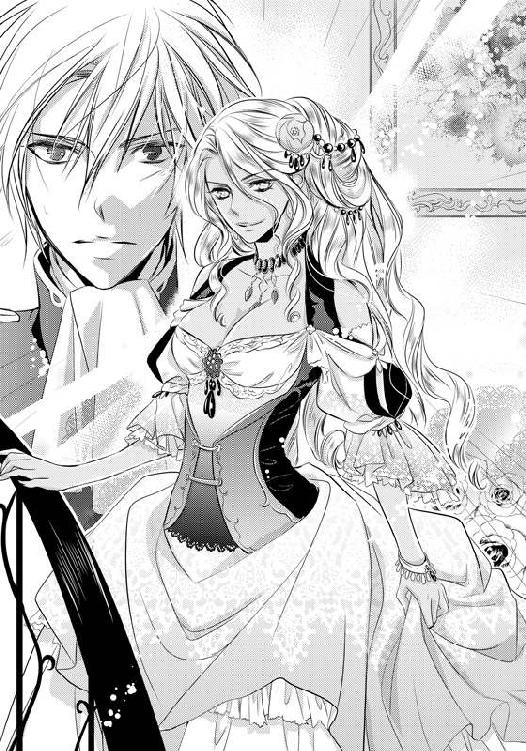
声を張り上げ、リュートは大階段の元へと躍り出て、その場にひざまずいた。
賑やかだった人々の声が静まり、演奏者たちも手をとめ、ホールは水を打ったように静かになる。
顔を上げれば、あと数歩で階段から降りきろうとしていたメルダが手にした扇子を口元に添え、驚きの眼差しでこちらを見ている。だがすぐに表情を戻し、扇子の先でリュートの顎を持ち上げる。
「見知らぬ顔ね。貴方の名は？」
「オレ......オレはリュート・ハウロックと言います。父はコリング・Ｒ・ハウロック。三年前までルビア王国の親衛隊長を任じられておりました」
「ハウロック家？ ......ああ、先の国王にお仕えしていたとは聞いたことがある。その後のことも......。その子息がなぜこの場に？ 招待状もなく、どうやってここにやって来たの？」
「それは......」
もちろん、今回のメルダの屋敷のパーティに誘われる権利など持ってはいなかった。招待状はラティカに渡したものと同じ偽物だ。
「無礼をお許しください。ですが、どうしても直接お尋ねしたかったのです」
リュートの言葉の直後、取り囲んでいた客たちから蔑む声が上がる。
「おい、やっぱり偽物の招待状で忍びこんだらしいぜ」
「そこまでして社交界に出たいとは......情けない」
「いやだねぇ。落ちぶれたもんは。さっさと追い出したほうがいいんじゃないか？」
だがそこまで彼らが言ったところで「静かに」メルダが凛とした声を漏らした。
国王に敬愛を受け、爵位の最上位である女公爵の存在は偉大だった。皆、一瞬にしてバツが悪そうに口を噤む。
そして「リュートと、言ったわね？」確認するように尋ね、口の端を上げて微笑んだ。
「没落貴族という立場でありながら、社交界に忍びこんだ上、この私に尋ねるなんて、その度胸。気に入ったわ。あとで話を聞きましょう」
そこまで言うと、傍にいた使用人らしき初老の男に耳打ちをし、客人たちににっこりと笑い「ご挨拶も早々に申しわけないが、少し失礼します」階段を上って去っていってしまった。
その代わりに初老の使用人が階段を降り、リュートの前までやって来た。
「メルダ様からの言い付けでございます。一時間後屋敷の奥へお越しになるようにとのことです」
恭しくお辞儀をし、そして客人たちにも一礼をした。
「どうか皆様、ごゆっくりご歓談をお続けください。メルダ様はのちほどまた降りて来られるご予定です」
とまっていた生演奏がはじまる。ホールの中は唖然としていたが、やがて貴族たちの声で賑やかになった。
もう誰も遠慮する者はいなかった。
「プライドってものがないのかしら」
「かつて栄華を極めたハウロック家も落ちたものだなぁ。ああ......もう没落してたか」
「それにしても、聞きたいことって何なのかしら？ メルダ様も素直に受け入れなくてもいいのに。お優しすぎるわ」
メルダの件で注目された今、恐らくこの屋敷にいるすべての貴族に自分の存在は知れ渡ってしまった。悪意をこめた蔑みの言葉は容赦なくリュートを突き刺していく。
だがあと一時間耐え続ければ道は開けるのだ。そうすれば騎士として姫との約束を果たすことができる。
リュートはまわりからの嘲笑う声や中傷めいた言葉を黙って耳にしながら唇を噛みしめた。
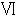 逃避行 夜の砂漠で解けた誤解
リュートがパーティに向かって一時間後。
一人宿の部屋に残ったラティカは、何をするでもなくベッドの上に座っていた。
「何やってるのよ、あたしったら......」
膝を抱えて体を丸め、頭をもたげて両足を見つめる。気持ちは深く沈んでいた。
前回のパーティの夜以来、どうしてもリュートに対して刺々しい態度を取ってしまう自分がいた。
「別にリュートが悪いわけじゃないのに......」
約束を破り、パーティで見知らぬ男性と接触したのは自分だ。酒に酔いながら問い詰められたことはショックだったが、彼の言っていたことは真っ当なことだ。
でもどうしても自分の中で消化することができなかった。こうして時間が経つにつれて、どんどんと心の中にあるモヤは大きくなり、彼に冷たく当たってしまう。
そのモヤの原因がどこにあるかはわかっていた。すべては自分に対しての怒りだ。
これまで自分はリュートに何かと助けられてきていた。
こうやってルビアにやってこれたのも彼が傍にいてくれたからなのに、骨董店の試着室の中でも、あのパーティ後の部屋の中でも、彼に体を求められても応じることをしなかった。
約束と違うと言われても仕方がない行動ばかりをしてきていた。
あの夜、彼に押し倒され、そう気がついてしまった。
リュートが自分を見下ろし悲しそうな顔をしていたのも、すべて自分の覚悟が足らなかったからだと。彼に身を捧げると言っていたくせに、その約束を自分は守れていないのだと。
特に今日、彼がパーティに行く直前に自分にかけた「嫌われても約束は守る」という言葉がいまだに胸に突き刺さっている。
自分は約束を守れていない、と突きつけられたようだった。
それに怖かった、今夜リュートが戻ってくることが。今日はメルダがいるということで、きっと何かしらの両親の情報が入るかもしれないし、何も掴めないかもしれない。そのどちらにも向き合う勇気がない。
もし、あの指輪から両親に繋がる情報が引き出せなかったら、この旅の目的はなくなる。そうなったら自分はどうすればいいのだろう。
それに両親の情報が入ったらと思うと、今は恐ろしくも感じてしまう。
もしかしたら生みの親は、涙子であるやっかいな能力を持った自分が邪魔になって遠ざけたかっただけなのかもしれないと思ったからだ。
涙子である自分はリュートや、自分を捕えようとしたシアンの行動を見てわかるように、まわりの人間からしたらやっかいな存在なのだ。そんな娘をルビアから遠く離れたブルーナの孤児院に預ける理由は、果たして涙子である自分を守るだけだったのだろうか？ そんな疑問が生まれてくる。
少し冷静になれば、こういった可能性はブルーナを発つ時に考えられたことだ。なのに自分はただ失恋したことから気を逸らすことばかりを考え、気づかないふりをしてここまでやって来てしまった。
視線をクローゼットのほうへ向ければ、扉が半分開いたままのそこから、レースと刺繍で彩られたドレスの裾が覗いている。
恐らく普通の人間でもなかなか手に入れることのできない代物だ。支払いをする時は「気にしなくていいから」と先に店から出るように言われてしまい、一体いくらしたものかはわからないが、恐らく自分のようなただの娘には決して手が出せる金額でないことだけはわかる。
ラティカは顔を上げてベッドから降りると、衝動的に傍にかけてあったマントを纏った。
窓の外を見て、朝までにはこの町を出なければと思った。リュートが戻ってくる前に、早く。シアンもいつどこでまた自分を狙ってくるかわからない。
だが短剣のついたベルトを腰につけようとしたところで、手が震えているのに気がついた。
「あたし、何やってるのよ......」
逃げようとしたのだ。今まで自分が起こしたことすべてから。
孤児院から逃げ、これからわかるかもしれない実の親から逃げ、そして自分を救ってくれたリュートの前からも逃げようとしていたのだ。
唇を噛みしめ、手にしていたベルトを茫然と見つめる。
まさかここまで自分が弱虫で最低な人間だとは思わなかった。
ラティカは崩れるようにその場へとへたりこんだ。
「リュートが戻ったら、もういいって言おう......」
生みの親探しも、こうして協力してもらうこともすべてだ。ここまで迷惑をかけ、謝って済まされることではないのはわかっている。でも自分は彼との『約束』を守れていないのだ。
ラティカはキュッと唇を噛みしめ、膝に置いた拳を固くした。
するとその時、ふいに部屋の扉の向こうで何かの気配を感じた。
跳ね返るように顔を上げると、扉がノックされる。
一瞬、リュートが戻ってきたのかと思ったが、すぐにそれは違うと気がついた。まだパーティがはじまって少ししか時間は経っていない。いやな予感がする。
ラティカは立ち上がると、手にしていたベルトから短剣を引き抜き、ドアのほうへと向けて「......誰？」と声を出した。
返事はすぐに返ってきた。「ラティカさん......ですよね？」その声に一気に緊張が増した。
「アラン......？」
「ああ、やっぱりそうだ。よかった、ここにお泊まりだったんですか」
その声はあのパーティ時、自分とダンスを踊った男のものだった。嬉しそうな声を漏らしながら扉が開かれそうになる。
ラティカはハッとして扉の前に駆け寄ろうとする。扉はリュートが出ていった時のまま、鍵すらかけていない。だがそれよりも早く扉が開いていた。
「ああ、やっぱりラティカさんだ。お会いしたかった......」
開かれた扉の前、アランは嬉しそうにこちらを見て微笑んでいた。だがラティカは警戒を解くことはできなかった。
手にしたナイフは構えたまま、緊張した面持ちで彼を見上げる。
「なんで、何しにきたのよ......どうやってここがわかったの？」
「何をしにって......貴女に会いたかったんですよ。こうやって貴女のお泊まりの場所を調べたのはお詫び致します。それでも会いたかった――」
アランは切なげに目元を緩め、胸に手を当ててラティカに一歩、また一歩と近づいてくる。
その表情はどこか今の状況を楽しんでいるように思える。それに自分に会いにやって来るなど都合がよすぎるし、唐突だ。
ラティカは近づいてくるアランと距離を取りながら、彼を睨みつけた。
「やっぱり、アンタだったのね......シアン」
「やっぱり、だって？ おバカさんだねぇ、まったく怪しむこともなく、頬を赤くしていたくせにさ」
呆れた笑い声はさっきとはまったく違うものだった。身なりのよい貴族の風貌が、暗いローブを羽織った魔道士のものに溶けるように変わっていく。
「でもこの格好もなかなか楽しかったよ。ダンスを踊っている時の君の怪しむ表情なんかおかしくて、笑いを堪えるのが大変だったしね」
長い銀髪を揺らし、くすくすとシアンが笑う。ラティカはやっぱり、と浅はかな行動をした自分を悔み、口の中で唸りながら後ずさった。だが部屋は狭く、すぐにラティカは彼に追い詰められる形になってしまう。
「さあ、私と一緒に来るんだ。痛い目に遭いたくなかったらね」
「誰がアンタなんかと......」
このままここで対していても、捕まるだけだ。ラティカは意を決して短剣を構えると、シアンの懐に向かって飛びこんだ。だがその決死の行動はあっけなく横に避けられてしまった。ローブをはためかせ、横に動いたシアンが杖でラティカの手を叩き落とす。
「おてんばなところは嫌いじゃないけど、そこまでだよ。私は急いでるんだから」
次の瞬間、顔面に杖を突きつけられた。
「痛い目に遭いたくなかったらおとなしくするんだ」
鋭い眼差しを向けられ、ラティカは動けなくなる。もう終わりだと思った。傍にリュートがいない今、自分一人じゃどうにもならない。
だがそれと同時にこれでいいのかもしれないという、思いも浮かんでくる。
――でもあたしがいなくなれば、リュートを解放してあげられるかもしれない。
もしかしたらリュートは自分がいなくなって、内心ホッとするのかもしれないと思った。手もかかり、金もかかる旅のお荷物でしかない自分がいなくなれば、彼もまた以前のように旅を続けられるだろう。
涙子として捕まったあとのことを考えるのは恐ろしかったが、散々まわりに迷惑をかけて逃げ続けてきた自分にとっては似合いの末路にも思えてくる。
ラティカは杖の先端から視線を逸らすと「......わかったわ」その場で力なく俯いた。
「ついていくわよ......だからその杖を下ろして」
「おや、ずいぶんと素直じゃないか。どういう風の吹き回しなんだい？」
「だって......もしあたしがここで抵抗して逃げても、アンタのことだもの、また追いかけてくるでしょ？ それにリュートにまで手を出すかもしれない......」
「そうだね。もしあの小僧がまた君を庇おうとするのなら、こちらも手加減はしない」
シアンは少しつまらなさそうに答え、手にしていた杖を引いた。
「でも君が素直についてくるのなら、目当てのものが手に入った今、彼に用はない」
「なら約束して、アンタの言う通りにするから、リュートの前には今後一切現れないって」
「ああ、もちろん」
そこまで言って、杖の先でラティカの腰を叩いて扉のほうへと押してくる。
「まあいい。わかったのならさっさと出るんだ。外に馬車がとめてある。もし途中で少しでも逃げるそぶりを見せたのなら......どうなるかわかっているね？」
「わかってるわよ......」
ラティカは口を閉じた。もう何も話す気にはなれない。あとはもうこのいけすかない魔道士の言う通りにするだけだ。
「はぁ......なんだ、意外と素直じゃないか。つまらない」
残念そうに呟くシアンに杖で背中を押されながら、ラティカは黙って部屋を出ていった。
ラティカを乗せた馬車は、夜のルビアをひたすらに走り続けていく。
馬車を操るのはシアンだ。銀髪を揺らしながら時折背後のラティカを見ては、彼女が怪しい動きをしていないか確認し、馬の手綱を引いている。
だがラティカは逃げる気すら起きなかった。両手は腰の後ろで縛られているし、ここで少しでもおかしな様子を見せてもどうすることもできないだろう。
暗い町の中は人通りも少なく、ラティカたちの乗った馬車を怪しむ者もいない。
ラティカは自由の利かない体を捩らせ、窓の外を見つめた。
宿から連れ去られた時、てっきりルビアの城へと連れていかれるのかと思ったが、どうやらそうではないらしい。遠くに見える城はどんどんと離れていく。
「あたしを......どこに連れていこうっていうのよ......」
「当たり前だろう？ 私は賞金稼ぎ。君が高く売れるところさ」
「出会った時からいけすかない奴だと思ってたけど、やることも最低なのね」
ラティカはシアンを睨みつける。身動きができない今、反論できるのは口だけだ。だが次に発せられた言葉を耳にした瞬間、表情は凍りついた。
「それにしても、君をもっと早く捕まえるべきだったねぇ。まさか涙子本人たちが直接メルダ様に会おうとしていたとは......。あやうく賞金をもらい損ねるところだったよ」
「メルダ......様？」
今、確かに彼はメルダと女公爵の名を口にした。メルダの屋敷では今パーティが開かれていて、そこにリュートもいるのだ。
ラティカが「どういうことなの......？」愕然として呟くと、シアンはしれっとした表情を浮かべる。
「ああ、なんだ知らなかったのかい？ 錬金術師であるあの方は以前から涙子を研究材料に欲しておられたんでね」
「そんな......メルダって人が涙子を探してたなんて......」
ラティカは俯き、声を震わせた。もしあの指輪から自分が涙子だということがバレたら、少なからずリュートにも危険が及ぶのではないだろうか？ そうなったらこうやって自分がシアンに捕まった意味がない。素直に魔道士の言うことを聞いたのは、リュートの身に危険が及ばないと思ったからだ。
ラティカは閉口し、あたりを見渡す。
もしこのままリュートとメルダが鉢合わせしたらまずい。どこかで降りることはできないだろうか？
すると馬車が動きをとめた。ふいに縛られた手を引っ張り上げられた。
「今さら慌てだしたのかい？ もう遅いよ」
ニヤリと笑う魔道士の背後に、煌びやかに明かりに照らされたメルダの屋敷が見えた。
どうやらそこは屋敷の裏手のようだった。表とは違い、使用人たちが忙しそうに洗い物をしたり、調理をしているのが窓から見える。
そこから遥か遠くで優雅に流れる演奏曲。貴族たちの明るい声が聞こえてくる。
――リュートは、どうしたんだろう......まだメルダと会ってなければいいけど。
ラティカは少年騎士の安否を心配してしまう。すると馬車を降りていたシアンからすぐに鋭い声がかけられ、縛られていた腕を引っ張られた。
「さあ降りろ小娘。待ちに待ったメルダ様との面会の時間だ」
「そんなに強く引っ張らないでよ、わかってる......」
乱暴に馬車から引きずり降ろされそうになり、ラティカは口を歪めて自ら降りる。
ラティカはシアンに連れられ、屋敷の裏口へと向かう。するとすぐに裏口で使用人たちに指示を出していた従者が気づいてこちらに駆け寄ってきた。
「シアン様。いかがなされました？ 裏口から来られるなんて」
「表からだと、手続きがややこしくてね。メルダ様にお会いしにきた」
「メルダ様は現在客人とお話し中です。そのお方は？」
「気にするな、私の連れだよ」
だが従者はラティカを見て、すぐに怪訝な表情になった。当然のことだ、後ろ手に縛り上げられているのだから。
「......ではまずメルダ様に確認を――」
「それには及ばないよ。失礼する」
だがシアンは慌てる従者を横に押しのけると、ラティカを引っ張り屋敷の中へと入っていく。「お待ちくださいっ!!」と、声をかけられるが気にする様子はなくラティカの体は引きずられるようにして屋敷の奥へと進んでいった。
遠くで演奏の音が聞こえる。
二人が進む廊下は人気がなく、しんと静まり返っていた。入っていった厨房とホールのある表以外に今は手が回らないのだろう。遠くのほうで足音や食器類がぶつかる音はするが、人の姿は見えない。
やがてしばらく歩いたところで、ひときわ立派な装飾の施された扉が目の前に現れた。扉は細く開かれていて、二人が進む赤い絨毯もそこの中に繋がっているのが見える。
恐らくこの先にメルダがいるのだ。直感したラティカは息を呑む。そんな様子に気がついたシアンが隣で嬉しそうに言った。
「涙子にとっては恐ろしい瞬間だろうねぇ」
だがラティカはもう何も答えなかった。とにかく早くこの場が終わればいいとだけ思う。
「メルダ様はお美しい方だよ。君とは比べ物にならないくらいね、あそこまで完璧な知性と美貌を兼ね備えた女性を、私はいまだかつて見たことがない」
シアンはうっとりと目を細め、扉のほうへとラティカを引っ張っていくと「静かにしてるんだ」短く言って扉の取っ手に手をかけた。だが――
扉をわずかに押したところで「おや？」小さく声を漏らした。どうしたのかと思い魔道士のほうを見れば、彼は目を細めて室内を覗き、そしてラティカへと薄気味悪い笑みを浮かべて見せた。
「見てごらんよ。今ならおもしろい光景が見える」
直後、口元を手で押さえられ、無理やりその扉の隙間に顔を押しつけられた。
「一言でも漏らしたらどうなるか、わかってるね？」
後頭部から冷淡な声をかけられる。だがラティカは細く開いた扉の向こうを見た瞬間、ハッと息を呑んだ。
――間に合わなかった......。
部屋の中にリュートの姿を見つけたからだ。
リュートは扉のほうに背を向け、ひざまずいていた。その先にはメルダと思しき女性の足元も少しだけ見える。
騎士の少年は恭しく頭を下げると、その場に立ち上がる。するとメルダの声が静かな室内に響いた。
「さて、堅苦しい挨拶はそこまでにしましょう」
ちょうど二人が対面した直後のことらしかった。長い羊皮紙の端が、メルダの足元に伸びてしなり落ちるのが見えた。
「先ほどハウロック家についての資料を見させてもらったけど、ずいぶんとややこしい事件を起こしていたようね......長年仕えてきたルビアに対して謀反を起こそうとするなんて――」
「......それは無実です」
「そう？ でもこの資料にはそう記録されているわ。ハウロック家の当主コリング・Ｒ・ハウロックは国王殺しを計画したと」
「違うっ！ 親父は......父はそんなことするような人間じゃなかった」
ラティカからリュートの肩が震えているのが見えた。
彼らが話しているのはハウロック家。リュートの家柄のことだということがすぐにわかる。だがその内容は、ラティカがリュート自身から聞いた話とはまったく違っていた。
――どういうことなの？ リュートのお父さんがルビア国王を？
以前リュートはルビアの栄えある伯爵騎士の家の出だと言っていた。だが今メルダという女性の口から語られているのは、正反対のものだ。
「息子である貴方がそう言いたい気持ちはよくわかる。でも私が見ることができる資料には少なくとも、そう書いてある」
リュートは押し黙ってしまっていた。何かを言おうとしているのだろうか、時折彼の肩がメルダの言葉に反論するようにピクリと動く。
「でも私の元へやって来た勇気は称えるわ。過去に罪を犯した没落貴族が社交界に現れるなんて、よほどの度胸のある者か、まわりの反応に鈍い愚かな者じゃなければできないことよ」
女主人は茶化しているのか感心しているのか、よくわからない感想を述べる。皮肉がこめられているのは間違いないだろう。
そんなやり取りに業を煮やしたのか、リュートが「失礼ですが......」怒りを押し殺したように呟いた。
「オレには時間があまりないんです、だから本題に入らせてください」
「本題？ あら、このことじゃなかったの？ 私はてっきり爵位を戻してほしいと頼まれるかとばかり思ってたのだけど......」
「確かにオレにとってハウロック家の再建と父の名誉を挽回することは大事なことだけど、でも今日相談したかったのはそのことじゃない。ある指輪の元の持ち主を探しているんです」
「指輪の......持ち主？」
「ええ、指輪の石を外した土台にルビア王家の刻印が刻まれていました」
「指輪の土台に刻印？ それはルビア王家縁の者しか手にすることができないはず......そんな貴重な物、一体どうして貴方が？」
メルダの声に不穏な色が混じる。それは何かを知っていると物語るような声色だ。
「してリュート。その指輪。今持っているのよね？ ちょっと見せてもらえるかしら」
「あ、はい......」
リュートは頷いて、ごそごそと衣服の中をまさぐりはじめた。
だがラティカはその様子を見ている気にはなれなかった。
――駄目......見せたら駄目。
相手はシアンの雇い主のメルダなのだ。それも錬金術を使い、装飾の知識にも長け、ルビア国王との繋がりもある人物。
もしリュートが涙子である自分と関係があるとバレてしまったら自分だけでなく、彼もどんな目に遭うかわからない。
「さっさと出して。私、待つのは嫌いなの」
紋章入りの指輪が珍しいのだろうか、それともその指輪に心あたりがあるのだろうか、焦りを帯びたような女公爵の声が聞こえてくる。もう時間はない。
ラティカは意を決し、咄嗟に体を前のめりにすると、そのまま扉に体当たりをした。細く開いていた扉が大きく、部屋の中に向かって開かれる。同時に、ラティカの体も部屋の中へと飛びこんでいく。
「くっ......おとなしくしてろと言ったのにっ」
すぐに背後からシアンの手が伸び、体に衝撃が起こる。体当たりされる形で床に頭をねじ伏せられたのだ。でもそのおかげで口元を覆うものはなくなった。
「リュート、逃げてっ!!」
身を捩らせ、咄嗟にラティカは叫ぶ。
「姫......なんでここに......」
目の前の少年はこちらを向いて指輪を取り出そうとしたまま驚き、固まっていた。だがすぐに慌てた様子でラティカの前へと駆けてくる。そして傍にあった火のついた長い燭台を手に取ると、ラティカの上に覆いかぶさるシアンに向かって振りかぶった。
「お前っ、姫に何をっ!!」
「おっとっ」
シアンは顔面ギリギリのところで燭台を避け、横に飛び退った。が、煙が自らの前髪から細く立ち上ったのを見て、リュートを睨みつけた。
「よくも私に傷をつけようとしたね......」
手にしていた杖を少年に向かって突きつける。雷の落ちたような音と共に、リュートとラティカの頭上で爆発音が響いた。
ラティカが顔を上げると、部屋の中は煙でかすんでいた。
「姫......待ってろ、今ロープを――」
傍で少年の声が聞こえ、縛られた後ろ手に彼の手が触れる。だがぐずぐずしている暇はないと、ラティカは声を顰めた。
「メルダはシアンの雇い主よ。彼女が私をここまで連れてくるようシアンに言ったみたい」
「なんだって？ と、とにかく――」
後方でリュートが腕を動かすと、縛られていた手が緩まる。力を入れれば縄が解け、床に落ちた。
「説明はあとだ、行くぞ、姫っ」
「あ......うんっ」
少年に手を取られて立ち上がり、ラティカは走り出した。
涙子である自分とリュートが繋がっていると知られた今、もう自分だけで事を収めるのは不可能だ。
二人は手を繋ぎ、広大な女公爵の屋敷の中を駆け抜けていった。
「こっちだっ!!」
少年騎士に連れられ、ラティカは屋敷の中を走っていた。
先導するリュートは時折飛び出してきた屋敷の者たちを手にしていた燭台で振りほどき、出口を目指す。
やがて賑やかな演奏曲が近づいてきた。ホールのほうにいる客たちはまだこの状況に気がついていないのだろう。賑やかな声も聞こえてくる。
大階段の傍までやって来ると、リュートはラティカから手を離し、燭台を握りしめた。
「いいか？ このまままっすぐホールを抜けて出口まで走るんだ」
「でもそのあとは？」
「東に進めば町の出口がある。とにかく砂漠のほうへ出ろ、走れ」
ドンッと背中を押される。それを合図にラティカは大階段を駆け下りていく。
その後ろをリュートが守るかのように続いた。
「ちょっと、あれ見て。ハウロック家の――」
「何やってるんだ、子供の遊び場じゃないんだぞ？」
ドレスも身に着けず、緩やかなムードの中を駆け抜けていく自分たちの姿に気がつき、貴族たちから不満そうな声が上がる。
その視線は先日のパーティで感じたものとは大違いの、冷たく蔑むようなものだった。
「没落貴族が......メルダ様へ縋った次は追いかけっこか」
「まったく、なんて身のほど知らずなの？」
ひそひそとした声が耳に届き、ラティカは、なぜリュートが社交界を嫌い、パーティで自分の傍にいないようにと言ったのかわかった気がした。
――見せかけだけの最低な奴らだわ。
彼ら貴族たちの目には、リュートは没落した貴族の息子でしかないのだ。メルダの言っていたことが本当なら、罪人の息子でもある彼をそういった目で見るのも仕方がないのかもしれない。でもそれでもラティカには納得できなかった。
――何も知らないくせに。
できることなら足をとめ、その貴族たちに食ってかかりたい気分だったが、今はそんな時間はない。
大階段を降りると、次は演奏に合わせて踊る人々がいるホールの中央が待ち構えていたからだ。
でもホールまで降りきったその時「待てっ!!」鋭い声と共に、ラティカの足元に光が走り、二人は足をとめた。見上げれば銀髪を振り乱したシアンが大階段の上から杖を構えている。
「その女は涙子だ！ 生け捕りにした者には、メルダ様が褒美をくださるとのことだ」
「なんて最低な奴っ――」
歯を食いしばり、リュートがシアンを睨み上げる。
すぐにまわりの貴族たちが色めきたった声を上げた。
「おい、聞いたか？ あの娘、涙子だとさ」
「ルビア王に献上すれば、莫大な金が手に入るぞ」
「爵位も上げてくださるに違いないっ」
貴族たちはラティカたちを取り囲んだ。さっきまでの優雅な様子は消え去っていた。皆、ラティカを捕まえようと近づいてくる。
それは紳士ばかりだった。年老いた者から社交界デビューを迎えたあどけない少年までもが、ギラギラとした目つきで、ラティカに手を伸ばしてきたのだ。
「触らないでっ!!」
取り囲んだ貴族たちから逃げようとラティカが身を捩らせると、すぐにリュートが手にしていた燭台を振り回し、男たちを遠ざけた。
「いいから急げっ。行くんだ！」
声をかけられ。ラティカは我に返って走り出す。背後を振り返れば、リュートは燭台を剣のように手にして紳士たちに向かって叩きつけていた。
だがそれを狙い、杖を構えて降りてくる魔道士の姿をラティカは見逃さなかった。
「リュートよけてっ!!」
声を発したと同時に、シアンの杖から稲妻が生まれる。ホール内にたくさんの悲鳴が響いた。
激しい槍のような光は、リュートの腰の横を切り裂いていたが、怪我はしていないようだ。
「ちっ、はずしたか......」
シアンは悔しそうに眉間に皺を寄せ、こちらに向かってくる。だが魔法が使われたことにより、女性たちは悲鳴を上げ、屋敷の中は混乱しはじめていた。
「くそっ、どけ。邪魔だっ」
ドレスの裾を引っ張り上げて逃げ惑う女性たちの波に呑まれ、まっすぐにこちらに向かってはこられないようだった。
「醜いだろ？ 階級がものを言う社交界ではこんな奴らばかりだ」
リュートは燭台を投げ捨てると「さあ、急ごう」再びラティカの手を取って外へと向かう。
幸いにして、着飾った貴族たちはうまく動くことができなかったのだろう。屋敷を抜けてしばらくすると、誰ひとり、二人を追ってこようとする者はいなかった。
乾いた砂の大地に、煌々と月が浮かんでいた。
冷たい風が吹く中、二人はただひたすらに走り続けていた。
振り返るとまだすぐそこにルビアの町の明かりが見える。こんな場所ではすぐに見つかってしまうと思うが、砂に取られてうまく走れない。
それにもう体力の限界だった。走り続けた足は痛み、乾いた砂は喉の奥へ入りこみ、むせそうになる。
砂漠に慣れていない自分とは違い、目の前を走る少年は「ほら、頑張れ」と自分を励まして前を進んでいくが、彼に合わせられるほど体力は残っていなかった。
「もういいの......もういいのリュート......」
胸を押さえ、ラティカは少年から手を振りほどき、その場にへたりこんだ。
「あたしがいたらお荷物になるだけだし、シアンたちの狙いはあたしなんだから、リュートだけでも逃げて......」
「何バカなこと言ってるんだよ。だって約束しただろ？ 姫はオレが守るって」
「その約束は、もういいのよ......」
元はと言えば自分がブルーナから逃げたかったために、勢いに任せて頼みこんだことだ。何度も彼を拒んだ自分は「約束」を守っているとは言えない。
もうこれ以上リュートの負担になりたくなかった。自分がこの先捕まってどんな目に遭うのかを想像すると恐ろしいが、でもそれ以上に彼を巻きこみたくないと思ってしまう。
「あたし、これ以上迷惑をかけたくないの。あたしと一緒にいたらリュートだってどんな目に遭うかわからない。あなただけだったらもっと遠くへ逃げられるはずよ。それにあたしが捕まれば追われることはないかもしれない」
自分を置いて、そのまま逃げてほしいとラティカは少年を見上げる。
だが彼は口をへの字にし「いやだ」とラティカの肩に手を置いた。その手はかすかに震えていた。
「姫はオレに生きる希望を与えてくれたんだ。姫がいなくなったらオレはどうすればいいんだよ......オレはこれ以上自分の大切な人を失いたくない。だから姫がなんと言おうと、どんなにいやがったって傍から離れないからな」
肩に置かれた手がラティカの腰に回され、引き寄せられた。
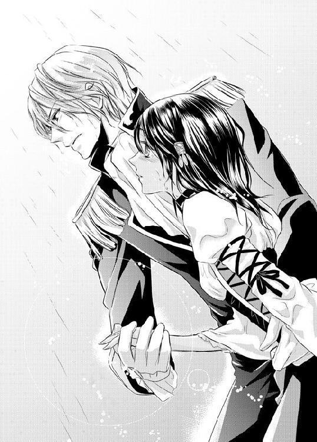
「オレは騎士だ......騎士の称号がなくても騎士であり続けたいんだ。家が廃れようとも、この先ハウロック家の名誉を取り戻せなくてもいい、だから行こう、逃げきれるところまで一緒に。オレが絶対に守るから」
「リュート......」
ラティカは寄せられた少年の肩に顔を埋めた。今、たまらなく目の前の少年が愛しいのだと気がついた。そして、もっと時間が欲しいと思った、旅をしている間、時間はありあまっていたはずだ。船の上でも、ルビアの宿でも退屈に感じるほど時間はあったはずなのに......。
なのにどうして今まで気づかなかったのだろう。気づこうと努力しなかったのだろう。きっと少しでも素直になっていれば、こんなに遅くなることはなかったはずだ。
後悔と愛しさと、やっと自分の気持ちに気づいて素直になれたという喜び。
この先の運命は絶望的には変わりなかったが、それでもラティカは今こうして少年の傍にいられることが嬉しくてたまらなかった。
グレミオ神父の時のように心がときめくことはなかったが、それでも今目の前にいる少年を失いたくないと心から思う。
「リュート。あたし好きよ、リュートのこと。本当よ」
「オレもだ、姫のこと。ずっと好きだった。これからもずっと」
そっと髪の毛を撫でられた。かさかさの手だ。おおよそ貴族とは思えない少年の手だった。
錆だらけの胸当てに、剣も騎士の称号もない没落貴族の彼が愛しかった。
砂で汚れた顔も、ボサボサの髪の毛も、ずっと見ていたい。傍にいて寄り添っていたいと、心から思う。
自分を見つめる優しい少年の眼差しを見上げ、ラティカは肩を捩らせた。
「......姫？」
「どうしよう、泣きそうなの......この先が怖いけど、今とても幸せなの......」
悲しみ以外で涙ぐむなんて、生まれて初めてのことだった。
目頭の奥が熱くなる。切なく幸せな気持ちが溢れるようだった。
「ごめん。泣かないように気をつけてたのに......」
「泣いていいよ姫。我慢しなくていい。オレがちゃんと傍にいて、この先何があっても絶対に守るから。オレ、頼りないかもしれないけど、姫に頼られたいんだ。姫が頼ってくれたら、もっと強くなれそうな気がする」
「リュート......」
ラティカは唇を震わせ、少年の胸に縋りついた。小さな嗚咽が漏れる。直後静かに雨が砂漠に落ちはじめた。
感情を表に出せないことがこんなにもつらいものだったのだと、ようやくわかった。
二人の頭上から降り注ぐ雨は緩やかに激しさを増していく。でも、幼い頃の嵐のような土砂降りでもなく、海辺の時のような暗雲が立ちこめるような重く暗い雨でもなかった。月と星が輝いたまま、静かに降り注いでくる。
頬を優しく撫でる細い雨に打たれ、二人はきつく抱きしめ合った。
自分で流した涙の雨が、こんなにも優しく降り注ぐのは初めてのことだった。
だが二人はこちらに近づいてくる足音すら聞き逃していた。
「やれやれ、逃げ出したと思ったら、砂漠のど真ん中で恋愛ごっこか」
顔を上げればそこに銀髪の髪の毛を揺らしながら、呆れたようにこちらを見つめる魔道士の姿があった。
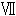 決闘の行方 雨がやんだあとで......
「おいかけっこは終わりだよ」
冴えた月が見下ろす中、抱きしめ合うラティカとリュートに向かい、シアンはまっすぐに杖を突きつけた。
「それにしてもラティカ。君は実に綺麗な雨を降らせるんだね。こんな雨を見たのは初めてだよ、儚くて、弱々しい。まるで君自身のようだね」
魔道士は夜空から降り続ける雨をうっとりと見つめると、ラティカたちのほうへと鋭い眼光を向けた。
「さあ、小僧。もういいだろう？ 観念してその涙子をこっちへよこすんだ。素直になれば命は助けてやる」
「誰が観念なんてするもんか。お前なんかに姫は渡さない」
腕に力を入れ、リュートが強くラティカを抱きしめる。
「研究材料なんかにさせてたまるもんか......」
そしてすぐに庇うようにラティカを後方へと押しやった。
「姫、危ないからオレから離れてろ」
「いやよ......あたし、離れたくない」
もし自分が離れたら、きっとリュートはシアンに立ち向かう気がする。相手は杖を持った魔道士でこちらは何も武器を持っていないのだ。どう考えても勝ち目はない。
「お願いリュート」
ラティカは必死にリュートに縋ろうとするが、またすぐに体を押されてしまう。離れたら戦いがはじまってしまう。そうなったらきっともうとめることはできない。
だがその様子を見ていたシアンは「往生際の悪い子らだな」鼻を鳴らしながら、杖をラティカの足元へと向けた。
「いい加減にしてくれないか？ 私だって暇じゃないんだ」
直後、激しい閃光と共にラティカの横で砂が大きく弾けた。
「姫に手を出すなっ!!」
咄嗟にリュートがシアンへと飛びかかり、杖を奪おうとする。だがすぐにシアンの杖から二度目の光が放たれ、リュートのわき腹を掠った。
「ぐぁっ――」
身に着けていた胸当てが割れて、重い音を立てて砂の上に落ちる。
みるみるうちに赤くなっていく腰を押さえ、リュートはその場にひざまずいた。
「リュートっ!!」
このままでは彼の命が危ない。ラティカは振り返り戻ろうとするが「動くな」シアンが再びラティカへ向けて杖を振り上げた。
三度目の光がラティカの前を遮るように落ち、自らもまたその場に尻もちをついてしまう。自分の足元を見れば、砂の地面は、大きくえぐられたように陥没し、砂煙が舞っている。あと一歩でも前に足を差し出していたら、今頃砂は血で染まっていたに違いない。
そう考えるともう恐ろしくて動けなかった。体に力を入れようとするが、腰が震え、立ち上がることすらできない。
ラティカは唯一動かせる手で砂を掴むと、そのまま砂漠を這うようにしてリュートたちのほうへと叫んだ。
「お願い、戦わないでっ！」
ラティカの感情が追いつめられると共に雨脚はどんどん強くなっていく。
魔道士を睨みつける少年の姿が涙で霞んでいた。
雨で血が流れ、砂の上に赤い色が広がっていくのが見える。
二人が戦っても、リュートの負けは目に見えている。シアンは本気で自分を捕えようとしている。そのためには迷わずリュートを殺すだろう。
「もういいからやめて!!」
振り絞って出す声は、悲鳴に近いものだった。喉は痛み嗚咽が溢れる。夜空が濁り、雨は叩きつけるようなものに変わっていく。
そんな中、雨とは違う音が三人の元へ聞こえてきた。
「おや、どうやら援軍が来てくれたようだ」シアンがククッと笑う。
ラティカは目をこすり、音のほうへと視線を向け言葉を失った。
「うそ......そんな......」
砂漠の向こうからやって来るのは馬に乗ったルビア兵たちだ。
また、彼らに守られるようにして女性の姿も見えた。武装した兵たちとは違い、ドレス姿で馬に横座りをし、傘を差しているシルエットが浮かぶ。月を背にしてこちらに進んでくるため、逆光でしっかりとは見えないが、それがメルダだということはすぐに予想がつく。
雨降る砂漠の中、兵たちはやって来ると、リュートやラティカたちを馬で取り囲んだ。
「こんなところまでやって来てたとは、ずいぶん捜したわよ」
メルダは、ラティカたち三人を馬の上から見下ろすと呆れた声を漏らし馬から降りた。そして傍にいた兵の一人に「例のものを」と呟く。
兵が頷き、何か長く細いものをメルダへと手渡した。それが剣だと気がついたラティカはメルダの足元へと縋りついていた。
「欲しいのは涙子であるあたしだけでしょう？ リュートは関係ないの。お願いだから彼を助けてっ!!」
このままでは本当にリュートを失うことになってしまう。自分を守るために彼の命を失うなんてごめんだ。
「リュートは武器も持ってないのよっ。ひどいことしないでっ」
涙ながらに叫ぶが、メルダはそんなラティカに一瞬視線を投げかけると、すぐに「ハウロックの騎士よ」リュートのほうへと手にしていた剣を放った。
投げられた剣はくるくると回りながら空を舞い、リュートの足元の砂へと突き刺さり、逆光によりシルエットしか見えなかった剣の姿が露わになった。月に照らされて光る刀身はラティカも見たことがある。リュートの持っていた白銀の剣だ。
「オレの......剣？ なんであんたが......なんで、どうして？」
リュートは何かもの言いたげにメルダを見るが、メルダは質問には答えず、淡々とした口調で言った。
「ハウロック家はかつてはルビア一と言われた騎士の家系。養子といえどもその家の名を継ぐ者ならば、戦いには剣を用いるべきでは？」
ラティカには彼女の言っている言葉の意味がわからなかった。メルダはリュートにシアンと戦えと言うのだ。怪我をしている上に、すでにまわりを兵に取り囲まれているのにだ。
勝っても負けても、どちらにしろ自分は捕えられるというのに、なぜこんなことを言い出すのだろう。
違和感を感じたのはシアンも同じらしい。
「メルダ様、なぜですっ。なぜこんな小僧に剣を......」
「私はぜひこの目で見てみたいの。ハウロック家の騎士の実力がどれほどのものなのかをね。それに実力のある貴方ならたとえ剣を持った相手でも、問題ないのではなくて？」
「それはそうですが......」
雇い主である女主人にはそれ以上は何も言えないのだろう「わかりました」シアンは諦めたようにため息をついて一歩下がり、杖の先端で再びリュートを狙う。
「まあ。負けるなんてことはありえないから戦ってやるよ、小僧。剣を取れ」
「言われなくてもそうするさ」
リュートもまた魔道士から目を離さず、砂に刺さる剣を取ると構えた。
「どうしてこんなことを......ねえ、なんで止めてくれないの？」
二人の様子を絶望的に見つめながら、ラティカはメルダへと詰め寄る。
「こんなことする必要ないわ。あたしは逃げないっ。こんなバカなこと、やめさせてっ」
だがそんなラティカの肩にメルダはそっと手を置いた。
「いいからラティカ、貴女はここで見ていなさい」
自分に触れる彼女の手は優しいものだった。おおよそ涙子狩りをしようとしているとは思えない。彼女の自分に対する口調も「大丈夫」と、安心させてくれるかのようなものだった。
それにまわりにはルビア兵がいるのだ。自分が慌てても彼らをとめることはできないのだろう。ラティカは涙をぬぐい、リュートを見つめた。
死なないでほしいと、願いながら。
小雨が降り続ける中。魔道士とリュートは睨み合いを続けていた。
「まったく。メルダ様も人がよすぎる。最後に情けをかけて剣を持たせるとは。まあ......そんな剣一つ持ったところで、君の負けは変わらないけどね」
雄弁に語るシアンとは反対に、リュートは何も言わなかった。口を一文字に結び、白銀の剣を構えている。まるで相手の出方を待っているように。
「すぐに決着をつけてやるよっ!!」
シアンが叫び、杖を振りかざす。幾多もの稲妻が槍の形となって杖から生まれ、リュートへと向かい走っていく。
その魔法はラティカも初めて見るものだった。今までとは違う、容赦ない魔道士の攻撃の恐ろしさに、思わず目を瞑った。
やはり無茶だったのだ。いくら剣を持とうとも魔法に勝てるわけがない。
だが次の瞬間。キィン!! と金属がぶつかる音に目を開け、ラティカは見た。
リュートの構えていた白銀の剣が稲妻の槍を打ち消したのだ。連続して放たれたその稲妻すべてを、盾を使うかのようにして剣で防いでいく。
放った光の魔法がすべて消され魔道士は「この剣は......まさか......メルダ様っ」悲痛な声を漏らし、女主人へと振り返った。
「その通り、ハウロックの秘剣は魔法を消し去る効果がある。怪我人相手の戦いなのだから、それくらいのハンデは必要でしょ？」
「し、しかし......」
シアンは納得できないと言ったように唇を噛みしめ、焦りはじめる。
飄々とした様子でそれを眺めるメルダにラティカは尋ねた。
「魔法を消す.........？ あの剣、そんな効果があったの？」
「ええ。なんたってあの剣はルビア国からハウロック家に直々に贈られたものよ。でも、そんな名誉ある貴重なものを質に入れるなんて、あの少年も一体何を考えてるのやら......」
メルダが呆れたように呟き、ラティカは「質に......？」信じられない、と眉を顰めた。
一体いつ質に入れたのだろう。心当たりがあるのは、二人で最後に行った骨董店でのことだ。
そこまで思い出し、ハッとする。恐らく、あの剣は自分を社交界に連れていくドレスを買うために店主に預けたのだ。
「......なんてバカなことを」
彼らしいといえば彼らしいと思いつつも苦々しく呟くと、隣で「ええ、本当にね」メルダが頷いた。
傘を差していてその表情は見えないが、その声は失笑が混じっていた。
「よく見ておきなさいラティカ。男が一人の女のために奮闘する姿なんて、人生で滅多に見れるものじゃないわ」
まるで余興を楽しむような言葉を聞きながら、ラティカは少年のほうを見た。
魔法を跳ね返すことができる剣なのだ、まだ彼に勝算はある。その証拠にリュートを前にした魔道士は表情を歪め、唇を噛みしめている。
「くそっ......これがハンデだと？ 魔法が効かないなら意味がないじゃないか。メルダ様、どうしてこんな不利になることを......」
「ぶつぶつ言ってる暇があるなら、こっちからいくぞ」
リュートは、わき腹を気にしながらも勢いよく、シアンのほうへと飛びこんでいった。
向けられた剣を、シアンが咄嗟に杖で庇う。だが力はリュートのほうが上のようだ。なんとかリュートからの攻撃を受けとめてはいるものの、その顔には焦りが表れはじめている。
「くそっ、くそっ......この私がっ......」
必死に杖を振りながらも、剣から身を守ることで精いっぱいの様子だ。
一方リュートのほうはシアンの放つ魔法をすべて剣で受けとめ、その間にも相手との距離を詰めていく。
その姿を見て、ラティカの隣でメルダが呟いた。
「なるほど......勢いはあるようね」
呆れた口調だったが、その声にはどこか感心したものが混ざっている。今まで剣技を見たことがないラティカだったが、リュートの剣の扱いが、どれほどすごいのかはわかった。
わき腹を痛めているというのに、その動きに迷いは一切感じられない。まるで怪我などしていないかのようにシアンへと剣を振りかぶっていく。
まるで水を得た魚のような動きで距離を詰められ、シアンもさすがにまずいと感じたのだろう。「くっ......」噛みしめるように顔をしかめさせ、リュートから逃げるように後方に飛び退った。
「まったく。これだから騎士も子供も嫌いなんだ。威勢がいいだけで戦い方にスマートさがない。でもそっちがその気ならこっちだって全力で戦ってやる――」
焦りの表情を浮かべながら毒づいて、シアンは手にしていた杖を空へと向かってかざす。そして唇を動かすと、何かの異国語のようなことを呟きはじめた。彼の表情は呟きを続けるほどに歪んでいく。
すると雨が降る空の上に魔方陣が現れた。赤黒い色をしたそれはまるで生き物のようにうねり、天に広がっていく。
「あれは......何？」
「精霊魔法よ。しかも地の精霊の。シアンったら、あんな魔法も使えるのね......」
ラティカの質問に、メルダが意外そうに答える。魔法のことはラティカにはわからなかったがその口ぶりからして、魔道士としての彼の力は予想以上なのだということはわかった。
空に広がった魔方陣は、驚き固まるリュートの真上でさらに大きく広がっていく。直後、なんの前触れもなくそれがリュートの元へと落ちてきた。
落下の衝撃で風が起こり、魔方陣の中に取りこまれる形となったリュート自身も、自らの体を腕で覆うが、外傷はなかった。
だがすぐにリュートはハッとなって足元を見た。
魔方陣の形に砂が盛り上がり、リュートの足首をずぶずぶと呑みこみはじめたのだ。
「くそっ......足がっ......」
魔方陣で囲まれた地面が、まるで泥のようにうねり、足首は鉛がついたかのように重くなる。なんとか這い上がろうとするが、片足を上げればその反対側の足が砂の中に埋まっていく。
「動かないと、そのまま地の底まで連れていかれるよ？ さあ、これで対等だ」
シアンはニヤリと笑ってリュートを見下ろす。だがその表情はやや窶れている。それに体もふらふらとおぼつかない。
「精霊魔法は、高度な力が必要なのよ。まずいわね」
見物していたメルダの言葉にラティカにも緊張が走る。
少年は粘度の高い底なし沼から這い出るように、大股で砂から上がろうともがくが、その砂はどんどんと彼にまとわりついてく。
まるで砂に呑まれるように膝が埋まりリュートは蟻地獄に落とされた獲物のように砂の上に背中を押しつけられる形になった。やがて剣を持っていた手までもが地面の中へと消えていく。
「くそっ......ちくしょうっ」
「ははっ。もうそんなんじゃ何もできないね」
シアンは高らかに笑うと、容赦なく杖を振るいはじめた。が、魔法は出なかった。そのまま杖を勢いよく振るい、リュートの怪我をしている腹に向かって打ちつけていく。そしてリュートの顔を強く何度も蹴り上げ、踏みつける。
「君の負けだね、リュート」
シアンの持った杖が淡く光り、鋭い刀身を持った剣へと姿を変えた。
「騎士なら騎士らしく、最後は剣で命を落としたいだろう？ 私からのせめてものはなむけだよ」
切っ先が、少年の首元へ向けられる。シアンは勢いをつけるかのように、腕に力をこめた。
「リュートっ!!」
ラティカはメルダに掴まれた肩を揺らしながら叫ぶ。直後、リュートの瞼が覚醒するように大きく開いた。
「負けは......お前のほうだっ」
歯を食いしばり、最後の力を振り絞るようにして奮い立つような声を上げると、砂の中に沈みこんでいた腕を振り上げ、シアンへと向けて振りかぶる。
雨に濡れ、湿った砂が魔道士の顔へと降りかかった。
「なんだとっ」
まさか動く力が残っているとは思わなかったのだろう。砂が入った目を袖口で覆いながら、シアンが後方へとよろけた。
その隙をリュートは見逃さなかった。視界を遮られ、怯んだ魔道士の手元に剣を振りおろしていた。
鋼の折れる鈍い音と共に、シアンの剣が宙に高く舞っていく。
主の手を離れた剣は、かつて杖であったバラバラの木片となって砂漠へと落ちていった。
そしてリュートを取り囲んでいた魔方陣も消えている。杖が壊れ、魔法の効果が消えたのだ。
「勝負あったな。魔道士め......」
リュートは肩で息をしながら、崩れ落ちたシアンの首元に白銀の切っ先を突きつけた。シアンはぐしゃぐしゃに顔を歪める。
砂を受けて泣き腫らしたようになった赤い目からは涙が溢れている。今までのうぬぼれたような態度とは別人のようだった。
「こ、殺すのか......私を......」
「オレは騎士だ。武器をなくした丸腰の奴を斬る気になんてなれない」
その姿はリュートの目にもあまりに惨めで情けなく映ったのだろう。眉を顰め、醜いものを一瞥するかのようにして、剣を下ろす。
そしてゆっくりと砂を踏みしめ、メルダのほうへと戻ってくる。
「勝負あったようね」
「ああ。勝った......、でもまだ、あんたがいる」
リュートはふらりと剣を構えると、メルダのほうへと向けた。
「姫は渡さないっ......」
激しく噛みつくような表情でメルダを睨みつける。だがすぐにその場にうずくまった。見れば、わき腹からはいまだどす黒い血が溢れている。
「もうやめてリュート。もう戦わないで」
あれだけ動いたのだ。彼の痛々しい傷を見ているだけでつらくなる。ラティカはリュートの肩を抱き、とめようとした。
メルダを取り囲む兵たちが、リュートに向け腰に差していた剣を引き抜いた。
一触即発だった。もしリュートが少しでもメルダに向かって動いたら、今度こそおしまいだ。だがメルダは兵たちのほうへそっと手を掲げて押さえるしぐさをすると、淡々とした口調で言った。
「残念ながら私はただの錬金術師。貴方と戦う気はないの。それにこの子を実験に使う気もね......」
掬い取るようにして手の平を傘から出して空に向ける。
「幸い、新しい実験材料が見つかったようだし」
彼女の手の平に雨垂れが落ちる。その様子を見て、リュートが不思議そうに呟いた。
「そういえばなんで......まだ雨が？」
「でもあたし......もう泣いてないわ」
ラティカもまた自分の目を擦った。涙はもう出ていない。
リュートとラティカは顔を見合わせ、そのまま先ほどまでリュートが戦っていた場所へと視線を向けた。
そこでは敗れたシアンがゆっくりと立ち上がりはじめている。
「くそっ......この私が負けるなんて......」
彼の目は砂をかけられたこともあって赤く充血し、瞳の縁は雨とは違うもので濡れていた。
その様子を見て呆れた声をメルダがかけた。
「まさかシアン。貴方も涙子だったとはね......地の精霊を使えるのはルビアの民の血を引くものだけ。貴方があの魔方陣を出さなかったら、その肌の色からルビア人だとは思いもしなかったわ。衛兵。この者を捕らえて」
傍にいた兵たちに向かって言うと、兵たちはすぐにシアンを取り囲む。
「ひっ......やめろ、来るな......来るなっ......」
シアンは顔を青ざめさせ、取り押さえてくる兵たちから逃げようと手足をばたつかせる。だが、その様子は今まで見たこともないほどに怯えて萎縮してしまっている。雨はさらに激しさを増してきた。
そんな彼から視線を外すと、メルダはラティカたちへと振り返った。
「夜の砂漠は冷えるわ。二人とも風邪をひく前に私の屋敷へ。いろいろと誤解していることがあると思うから落ち着いて話がしたいわ。それとさっきの指輪についてもね」
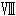 二人の時間 身も心も結ばれて
メルダの屋敷は水を打ったように、しんと静まり返っていた。
眩しいほどに輝いていたシャンデリアも今は点灯しておらず、あるのは壁にかけられた蝋燭だけ。
廊下を歩きながら通りかかった部屋では、テーブルの上に食事が手つかずのまま載っているのがぼんやりと見えた。
「あの後すぐに客人たちには引き取ってもらったの。さあ、こっちよ」
ラティカたちはメルダに言われるがままに、彼女のあとをついていく。その後ろではまるで自分たちを監視するように、兵たちが歩いてくる。その中には、捕らえられたシアンの姿もある。
「......終わりだ......私はもう終わりだ......」
ぶつぶつとうわごとのように呟く声と、靴音だけが冷たく屋敷の中に響き渡っていた。
歩いていくと、やがて赤絨毯の敷かれた廊下へとやって来た。
その先にあるひときわ重厚な扉を抜けると、見覚えのある室内に通される。シアンに捕まって連れてこられたメルダの自室だ。
「体も冷えたでしょう。とりあえずくつろいで。今暖炉に火をつけさせるから」
部屋へ入るとメルダはソファへと腰かける。すぐに傍にあった燭台に従者の一人が明かりを灯し、暖炉のほうへと向かっていく。
だがその直後、ラティカは燭台に照らされた女公爵の顔を見て「えっ？」と、驚きの声を漏らしてしまった。
はじめてここで彼女と会った時も、砂漠にいた時も顔をよく見ていなかったから気がつかなかったが、彼女の顔に見覚えがあったからだ。
「エスメラルダ......？」
「あら、やっと気がついてくれたのね」
驚くラティカにメルダはにっこりと笑みを浮かべる。貴婦人らしい微笑だ。
するとラティカの隣で椅子に腰を下ろしたリュートが、腰を押さえながら尋ねてきた。
「姫......もしかして知り合いなのか？ でも......エスメラルダ？」
だがラティカはうまく答えられなかった。そもそも、どうしてブルーナの港で会った彼女がここに、メルダとしているのかわからなかったからだ。
「なんで......どうして？ グレミオ神父と知り合いだったの？」
突然の事実に頭が混乱しそうになってしまう。するとメルダは「驚くのも、無理もないわね」と、狼狽するラティカを見て頷いた。
「いろいろと聞きたいこともあると思うけど、まずはメルダとしてこの場を進めさせてちょうだい」
そこまで言って、彼女は少年騎士のほうへと視線を向ける。
「まずは、御苦労だったわねリュート。貴方のおかげで、こうして無事に涙子を見つけることができたわ。しかも意外なところからね」
その言葉に、部屋の隅で兵たちに囲まれていたシアンが、怯えた様子を見せる。だが女公爵は表情を変えずに続けた。
「褒美として、かつてハウロック家が奪われた地位と財産を返上させるよう、後ほどルビア王にお伝えしましょう。それに私も資料を見せてもらったけど、貴方のお父様に関することに対しても再度調査を入れてもらうように私からお願いしておくわ」
地位と財産の返上。それはハウロック家の爵位が戻るということだ。ラティカは「よかったじゃないリュート」と、少年のほうを見る。だがなぜかリュートの表情は浮かないものだった。
「いや、オレはそんな褒美いらないよ」
ラティカは「どうして？」眉を顰めて尋ねた。
「『自分は騎士だ』って、いつも言ってたじゃない。爵位が戻れば、もう社交界でもあんな目に遭うことだってないのよ？」
どうして今になって受けるのを渋るのだろう。父親の無念を晴らすことができ、さらにハウロック家の爵位が戻れば、何も悩む必要などないのではないか。
だがリュートは「それでも必要ないよ」頑なに首を横に振るだけだった。
「久しぶりに社交界に出て思ったんだ。所詮爵位なんて飾りでしかない。爵位があったとしても何になる？ あんな着飾ったうわべだけの場所で生きていくくらいなら、オレは何もいらない。親父の無実が晴らせれば、それでいい」
「そう。でもそれだとのちのち私に不都合が出てくるのよね......それにここからは私の予想だけど......見たところ、貴方たちは恋人同士よね？」
突然何を言い出すのだろう、メルダの探るような言葉に、ラティカとリュートは口籠って顔を見合わせる。どう答えていいのかわからずにいると、それが返事だというように女公爵は頷いた。
「それならなおさら、爵位は必要よ。公爵の娘を嫁にやるのなら、それ相応の家柄の者でないと、私は認める気はないわ」
「ちょっと待って......どういうことだ？」
「娘ってまさか......」
リュートが声を上げ、ラティカもまた目を剥く。心臓が早鐘を打つ。
メルダは淡々としていた。「それと、まだこれに関しても答えていなかったわね」スッと胸のところから光る小さなものを取り出して見せた。それはラティカの指輪だった。
傍にいたリュートが「あっ」と慌てた様子で懐を探る。
「オレ......いつの間に落としたんだ？」
「慌ててラティカと出ていった時によ。その指輪は紛れもなく、王族関係者しか手にすることのできない代物。例えば私のような錬金術師などしか......ね」
そこまで言うと、メルダはラティカの前までやって来てしゃがみこんだ。レースの手袋を外し、そのまま包みこむようにラティカの頬を撫でる。
「その指輪は紛れもなく私のもの。そして十五年前に産んだ娘に託したものよ」
「......待って。どういうこと？ 貴女はエスメラルダで、私のお母さん？」
一つ一つを確認するようにラティカが尋ねると「ええ、そう」優しい眼が見つめ返してくる。
「そう、私が貴女のお母さん。大きくなったわねラティカ。貴女を見るのは十五年ぶり。目の色は私そっくり。でもそうね、怒ったり焦ったりしてる顔はあの人に似てるわ」
「あの人って......うそ......まさか......」
ラティカの脳裏に、ブルーナの船着き場での情景が浮かんだ。
メルダをエスメラルダと呼び、必死に何かをしゃべり、そして彼女の腰へと抱きついていた人物を。初恋の相手である、自分を育ててくれていた神父の顔を。
「なあ、どういうことなんだよ」
ラティカがメルダが母だったこと以外で驚いていることに、リュートは不思議そうに尋ねてくる。
「意味がわからない。どういうことだ？ それにエスメラルダって一体――」
一体、誰のことなんだ。そうリュートが言おうとしたところで、一同はふいに部屋の外が騒がしくなったことに気がついた。
遠くから、バタバタと複数の足音と、何かを言い合う声が聞こえてくる。
「お待ちくださいっ......ただ今メルダ様は謁見中でして」
「今はそんなことを言ってる場合じゃないんだ。とにかく通してもらうよ」
「ど、どうかお待ちをっ......」
どうやら声の主はメルダに用があるようだ。しかもラティカは声の主に聞き覚えがあった。
あそこまで焦る声を耳にしたのは初めてだが、聞き間違えるはずなどない。
足音と声はどんどんと近づいてくる。
「どうしてこんなところまで......っ」
ラティカは咄嗟に、メルダの座るソファの後ろのカーテンへと隠れた。「お、おい姫っ!?」リュートもまた従者に手当てを受けている途中で、ラティカについてくる。
「どうしたんだ？ 姫。何を怯えてる」
「まあ。驚くのも無理ないわね。私もちょっとびっくりしたわ」
足音と声が近づく中、メルダは「いいわ」ラティカたちのほうへと振り返った。
「貴方たちはそこで隠れていて。ちょっと驚かしてあげましょう」
そして数秒後、部屋の扉が開くと同時にグレミオ神父が慌てた様子で部屋に入ってきた。
「エスメラルダっ」
確かに彼はそう呼んでメルダの膝元へと縋りついた。
「駄目だった。ブルーナでも捜したけど、一切足取りが見つからないよ」
「でもよく捜したの？」
「捜したさっ。まるでものを忘れたような言い方しないでくれ」
「そう......」
メルダは落ち着いた様子でグレミオ神父に頷く。だがその様子にグレミオ神父は納得できないようだった。
「どうして君はそんなに落ち着いていられるんだ。ラティカがいなくなったんだよ？」
「貴方がいない間にこっちにもいろいろあったのよ。いろいろね。まずどこから話したほうがいいかしら。そこの魔道士がラティカに危害を加えようとしていたことかしら？」
「ラティカに危害だってっ!?」
悲鳴のような声を上げたグレミオ神父は、そこでようやく兵たちに捕らわれて部屋の隅にいた魔道士の姿に気がついた。
「......シアン？ なんでこんなところに――」
声をかけられ、シアンの顔がさらに青白くなる。
グレミオは険しい顔つきで彼の前へと進むと、彼のローブの襟首を引っ張り上げ、腰から杖を取り出して押しつけた。
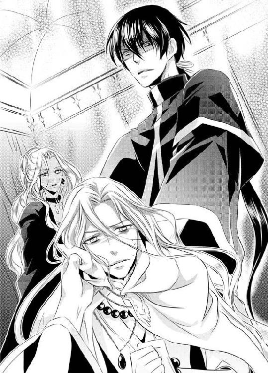
「貴様っ......なんでこんなところにっ。ラティカに何をしようとしたっ!!」
普段の温厚な彼の姿からは想像できないような殺気立った様子に、シアンは「ひぃっ」怯えて腰を抜かし、すぐに兵たちの背後へと隠れる。
「ラティカを捜すなんて言って、どうしてっ!!」
我をなくしたように声を荒げるグレミオ神父にメルダは「落ち着いて」と、呆れたように声をかけた。
「そんなに心配しなくてもラティカは無事よ」
「無事だって？ それじゃあ今はどこに？」
「ここに......。出ていらっしゃいラティカ」
振り向いたメルダに声をかけられ、ラティカはリュートに手を取られながらカーテンから姿を現した。
でも自分は何も言わずに兄弟たちの世話を放棄し、ブルーナから出ていったのだ。一体どんな顔をして養父の顔を見ればいいのかわからなかった。
「......ごめんなさい」
俯いたまま、気まずい思いで口を開くと、「ラティカ......」目の前でグレミオ神父は心底安心したように息を吐いた。
「よかった......無事だったんだね。......でもどうしてリュート君まで......。それにその怪我は？」
「あ、それは......」
ラティカの隣でリュートがしどろもどろになる。だがその時だった。
皆の視線がラティカとグレミオのほうへと注がれていた隙をついてか、突然、部屋の隅にいたシアンが兵たちの手を潜り抜けたのだ。そして、すぐにグレミオ神父の手から杖を奪い、そのまま背後から彼の首に押しつける。
「くっ......」
喉元に杖を押し当てられ、養父が呻く。
「こいつの命が惜しくば、下がれっ」
突然の魔道士の行動に、ラティカが慌て、腰に差していたナイフを手に取った。隣のリュートも剣を引き抜く。そんな中メルダが咄嗟にグレミオ神父に向かって叫んだ。
「アルキスっ!!」
だがその名に一同が動きをとめる。一番挙動を乱したのはシアンだった。
「アルキス......だって？ まさかあんたは――」
「......ああ、そうだ。僕のかつての名はアルキス・ルーウェンだよ」
「そ、そんな......」
喉を押さえつけられながらも返答したグレミオ神父の言葉にシアンは顔を真っ青にさせ、その場に崩れ落ちた。すぐにまわりの兵が彼に掴みかかる。抵抗は一切しなかった。まるで化け物でも見るように怯え、「その男を屋敷の地下に」とのメルダの命令を受けた兵たちによって引っ立てられていく。
やがて扉が閉まり、その部屋にいるのはラティカたち四人と、従者だけになった。
「まったく......あんな奴に僕が騙されていたとは......」
さっきまで杖を突きつけられていた首元を押さえ、グレミオが呟くと「まあ、怪我がなくてよかったじゃない」メルダも、ほっとしたように肩を竦める。
シアンの驚愕に対して平然としている二人と、「アルキス」という名前にラティカは納得がいかなかった。
「どういうこと？ グレミオっていう名は偽物だったの？」
すると隣で顎に手を当てながらリュートが呟いた。
「アルキスって名前どこかで聞いたことが......」
そしてすぐに、ハッと顔を上げた。
「思い出した。アルキス......昔、大司祭だった奴の名だ」
「なんだ。以前勉強をした時は歴史が苦手そうだったけど、よく知ってるじゃないか」
杖を仕舞いこみ、グレミオ神父が微笑む。
だがラティカは笑えなかった。というより、信じられなかったのだ。
「大司祭って......代々ランドーラ大陸を司っているっていう、あの大司祭のこと？」
大司祭――その職名だけはラティカでも知っている。ランドーラ大陸には、ルビアやブルーナなどのようにたくさんの国が点在し、その国々で司祭たちが式典などを監督している。大司祭はさらにその司祭たちの中の最上位職。いわば大陸一の聖職者ということになる。
それに大司祭は、ランドーラに存在するすべての魔法に通じている。彼を目の前に、魔道士のシアンが戦意を消失したのも納得ができる。
「そんな、すごい人だったの？ グレミオ神父って......」
自分が知っているのは、そんな権威のある大司祭でもなく、父でもない。お人よしの孤児院の神父だけだった。
あまりに意外な事実に言葉を失っていると、隣にいたリュートがぐったりとした様子でその場にしゃがみこんだ。
「どうしたの？ 大丈夫？」
心配になって尋ねると、少年が口元を歪める。
「今のでいきなり動いたから傷口が広がったみたいだ......」
わき腹を押さえる指の間から、血が滲み出しはじめている。すると「僕に任せてくれ」グレミオ神父がそこへと杖をかざしはじめた。ぶつぶつと呟くような詠唱の後、杖の先端が淡く光りはじめる。その光がゆっくりとリュートの傷口を覆いはじめた。
「ひどい怪我だね。でも大丈夫、すぐに治るよ」
「ああ......助かる」
魔法で傷を手当てされながらリュートがホッとしたような声を漏らす。青白かった肌にゆっくりと生気が戻ってくる。
その光景をラティカは、驚いたように見つめていた。今までずっと一緒に過ごしてきて、グレミオ神父が魔法を使えるなんて知らなかったのだ。
「本当に大司祭だったのね......」
感心と驚きの詰まった声を漏らしていると「ラティカ」メルダが優しく語りかけてきた。
「貴女には私とアルキス......いいえ、グレミオの都合で隠していたことがたくさんあるの。それをどうか落ち着いて聞いてほしいの」
ラティカは「わかったわ」静かに頷いた。
知りたかった。メルダがなぜエスメラルダと呼ばれたのか。そしてエスメラルダとグレミオ神父がどうして繋がっているのか。
大体の予想と覚悟はできていたが、しっかりと彼女の口から聞きたいと思う。
「大丈夫、心の準備はできてるわ」
ラティカが真面目な表情で頷くと、メルダは一呼吸置いて、ゆっくりとした口調で話しはじめた。
「今から約十六年ほど前のことよ。まだ私がエスメラルダと名乗り、彼がアルキスと名乗っていた頃、私たちは出会い、そして貴女が生まれたの。ただここルビアでは涙子が生まれるとすぐにまわりに感づかれてしまうのよ。わかるでしょ？ 生まれたての赤ん坊が泣くのは」
メルダの言葉に「わかるわ」ラティカは頷く。
孤児院で生活していた時、幼かった弟たちの世話をしてきて何度も見てきたことだ。
「私が産んだ子供が涙子だということは、すぐにまわりにバレたわ。そして父親がグレミオであるということもね」
「そうだったね。ランドーラの大司祭にとって恋愛はご法度だからね。僕は地位を剥奪され、名をグレミオに変え、この国から君を連れてブルーナへと渡った」
グレミオ神父が懐かしそうに目を細める。
そしてメルダは「私も同時に名前を捨てたの」にっこりと微笑んだ。
「ルビアの水不足が解消されない限り、涙子である貴女がここで暮らすには危険すぎるし、私がグレミオと共にブルーナに移住したとしても、ルビアは血眼になって涙子を探し続けるでしょう？ だから私は錬金術師として、この国の水不足を解消するために残ったの」
一体メルダが――母がどんな気持ちでここに残ったのかなんてことは、彼女本人ではないからわからない。
ただラティカには彼女のその話しぶりや、かつて指輪を残してくれたことから、彼女が決して安易な気持ちで自分と離れたのではないことだけは痛いほどに伝わってくる。
「それからは私と彼は別々の土地で暮らしたわ。彼は身を隠して貴女を育てるため。私は涙子への脅威がなくなるための研究をするためにね。やがて長年の研究で、爵位ももらい受けて、この国での私の立場は強くなった。だから娘の貴女に会いに行こうと思ったの」
「だからあの時ブルーナの港に？」
「そう、ちょうど入れ違いだったうえ、涙子じゃない人の涙を流させてしまったけれどね......」
クスッと笑ってメルダがグレミオのほうを見る。グレミオはなんとなくよそよそしく、少年の治癒に当たっていた。
「それと、貴女に会いたかった理由はそれだけではないの。貴女の涙も確かに欲しかったの」
「あたしの涙？ それって研究のために？」
「そう。あのおバカな魔道士は、涙子を研究材料に......と言ってたようだけど、それはちょっと違う。涙子が泣くから、雨が降るのではないの。涙子が泣くから、湿度が上がり、雨雲が呼ばれるの」
「どういうこと？」
「涙子自身ではなくて、涙子の流す涙に意味があるってことよ。私は涙にどんなものが含まれていて、それがどう雨と関係するのか調べたかっただけ。涙子に苦痛や悲しみを与えようなんて気はないのよ。涙子の涙を一滴欲しかっただけ」
そこまで言うと「でも......」メルダは唇を尖らせた。
「シアンは何を勘違いしたのか涙子を捕らえることに必死になってたわね。でも彼には言わないでおくわ。娘と、その恋人を危険に晒したんだもの。少しはお仕置きが必要よ」
クスクスとメルダが扇子を手にして笑う。多少シアンが気の毒に感じたが、でも確かにそれくらいの迷惑は被ったのだ。ラティカもまた「そうね」呆れたように笑う。
だがそんな中一人だけは納得できないようだった。
「ちょっと待ってくれエスメラルダ。恋人って一体誰のことだい？」
グレミオ神父が唖然とした声を漏らす。そしてリュートへと視線を移した。
「まさか......君がラティカの？」
「それはその......」
リュートが包帯を巻かれたわき腹を擦り、気まずそうな笑みを浮かべた。
「なんか、夢を見てるみたいだわ......」
湯浴みを終え、ラティカはベッドの上へと腰を下ろした。
ラティカはメルダの用意してくれた客室にいた。客室の中は、屋敷と同じく豪華なものだった。広い室内に、所々に置かれた繊細な作りの調度品。レースで縁取られたベッドシーツの肌触りもいい。
あの後、久しぶりに再会したグレミオ神父に問い詰められながらも、もう夜も遅いということでその場はお開きとなり、休むことになったのだ。
だが、寝つくことはできなかった。日付もとっくに変わり、もうすぐ朝になろうとしているのに目は冴えたまま。体は疲れているが、このまま寝たらすべてが夢だったなんてことになりそうな気さえしてくる。
「でも夢じゃないのね......」
ぼんやりと呟きながら自分の右手を見れば、母から返してもらった指輪がある。窓を見ればルビアの町並みも見える。
グレミオ神父との再会は、シアンが暴れたこともあり、流れるように終わった。でも逆にそれでよかったのかもしれないと思う。もしあそこで何事もなければ、もっとまっすぐに彼と向き合わなければいけなかった。
初恋の敗れた育ての親が実の父親だったという事実を、あそこで受けとめる心の準備はまだできていなかったからだ。
ラティカは指輪をじっと見つめる。するとその時、部屋の扉がノックされた。
「......誰？」
こんな時間に一体誰なのだろう。気にしながら立ち上がって扉のほうへ向かう。
警戒しながら細く扉を開けると、そこに少年騎士の姿があった。
「リュート？ どうしたのこんな時間に」
「悪い、ちょっと部屋に入れてくれ」
少年はきょろきょろとあたりを見渡しながら、ラティカの返事を待たず、部屋に入ってくる。そしてすぐに扉を閉め、胸を撫で下ろしていた。
「はぁ......よかった、バレてないみたいだな」
「バレてないって何が？ 一体何をそんなにコソコソしてるのよ。休まなくて大丈夫なの？」
ラティカが尋ねると「平気さ」と、リュートはベッドの上に寝転がった。
「それにしてもしつこくて困ったよ。グレミオ神父。あれからずっとオレと姫のことに対していろいろ聞いてきてさ。部屋にいてもまた来そうだったから逃げてきた」
「そうだったの、ごめん......」
もとはといえば全部自分の行動のせいだ。ラティカはねぎらうように言いながら、彼の隣へと腰かける。
「グレミオ神父とは明日ちゃんと話すわ。私のわがままで家出をしたことをちゃんと」
「いや、いいよ。それは別に気にしてない。どんな理由であれ、姫を連れ出したのはオレなんだしさ......」
リュートは「気にしなくていい。それより」と、上半身を起こしてまっすぐにラティカを見つめてきた。さっきまでの明るい様子とは違う、真面目な表情だ。
「あとさ、グレミオ神父と話してて気になったんだけど......姫が家出した理由ってもしかして――」
「言わないで、言ったら殺すわよ」
ラティカは口をへの字に曲げた。実の父へ告白したことは、今となっては思い出したくない。
だが普段なら「わかったよ」と諦めてくれるのだが、今のリュートはそうしなかった。
それどころか不満そうに唇を尖らせて眉を顰め「ああ、そうかよ」ふてくされた様子で悪態をついてこっちに背を向けてしまう。
「ちょっと、寝るなら自分の部屋で寝なさいよ。それに、そんなに怒らなくたっていいじゃない」
「怒ってなんかない」
「嘘よ、怒ってるじゃない」
「嫉妬してるんだよ......」
不機嫌そうに言ってラティカから背を向けてしまった。いつもとは違う彼の態度に不安になってしまう。
恐らく彼は自分がグレミオ神父のことが好きだったのだと知っているのだろう。ラティカは気まずそうに少年の背へと話しかけた。
「ねえ......いつから気づいてたの？」
「......会ってすぐにだよ。なんとなくだけど......」
「そうだったの......」
「なあ、今も好きだったりするのか？」
「まさか！ やめてよ。実の父親よ？」
悲鳴に似た声を上げ、ラティカはぶんぶんと首を横に振る。
「もうその話はやめましょう、今思い出しても、あの時の自分が恥ずかしくてたまらないもの」
ラティカはそっと少年の肩に手を置く。
「それに砂漠で言ったでしょ？ あたし......リュートのことが好きだって......」
この気持ちは本当だった。どんなに悪態をついたとしても、こうして今ここに彼がいてくれることが嬉しい。ただ、それをうまく表現するのは照れくさいが。
「ねえ、リュート......」
ラティカは両腕で彼の肩に抱きつこうと手を伸ばした。だが――
「やめてくれよ......」
意外な彼の言葉と共に、その手を払いのけられるかのように下ろされてしまった。だが、すぐに体を引き寄せられた。
「オレからしてやる」
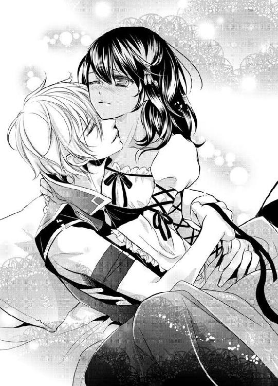
囁きと共に、彼の顔が近づいてきた。ラティカは瞳を閉じ、それを素直に受け入れた。
温かな感触が首筋に、頬に、耳に落ちてくる。望んでいた彼のぬくもりに、不思議と心が安らいでいく。
でも、なぜかそのキスは唇には降りてはくれなかった。口の横、額の上と、まるで意識してそこを避けているような感じさえしてくる。そんな彼の態度がなんとなくもどかしい。もっと触れていたいと思うのに、わざとキスがしやすいように首を軽く上ずらせてみるが、それでも降りてこない。
ゆっくりと目を開けると、少年と視線がかち合う。「どうした？」どこか得意げな表情で尋ねられ、ラティカは子供のように表情をしかめた。彼はわかっていてそんなキスをするのだ。
「意地悪......わざと唇にキスしてくれないのね」
不満そうに呟くと「姫よりはマシだろ？」微笑みながらもようやく唇にキスが落ちる。少年の口唇は少し濡れ、吸いつくようだった。
彼の舌が唇を薄く割り開いて侵入してきた。
「ん......」
ラティカは呼吸を震わせながらも、自らの舌先を彼の舌へと這わせた。
たどたどしく触れる自分とは違い、少年のキスは激しかった。柔らかな舌でラティカの歯茎をなぞり、唇を甘く噛んでくる。
彼のキスを受けるたびにラティカの胸は切なく軋み、体の芯が熱くなる。
やがて少年の体がラティカの上に乗り上がった。寝そべったベッドの枕の横に手を置かれ、彼の体に逃げ場は遮られた形になる。
顔を上げれば、神妙そうな、熱の籠った瞳で見つめられている。
ラティカは途端、今の状態がひどく恥ずかしくなり、顔をそむけてしまう。あの小屋での夜と同じ行為をこれからするのだと考えると、ひどく照れくさいのだ。
「ね......ちょっと待って......」
さっきのキスで濡れた唇を手でぬぐいながらラティカは顔をそむけた。でも、少年は退こうとはしなかった。
「待てない、一体どれだけ待たされたと思ってるんだよ......」
「でも......せめて明かりを消してほしい」
「駄目だ。今日はオレがしたいように姫とする」
「やっぱり根に持ってるんじゃない......」
ふてくされたようにラティカが呟くと、少年がへの字に口を曲げた。
「当たり前だろ？ 約束とか関係なく、二度も拒まれたんだ。男としてのプライドがズタズタだよ」
「......ごめん」
「謝るなよ、今から返してもらうからいい」
言葉少なに、リュートがラティカを抱きしめる。その手はゆっくりとラティカの華奢な体に回され、するするとドレスの腰まで降りてくる。
硬い少年の指が布の向こうで動き、ラティカはこそばゆさに腰を捩らせた。
「......んっ......くすぐったい......」
少年の指は貪欲にラティカの太腿を撫で降りていき、彼女のドレスの中へと入りこんだ。
布地が捲り上げられて褐色の足が露わになると、その滑らかさを楽しむように彼の手の平が足の付け根へと向かい上がりはじめた。
「姫の肌......久しぶりだ......」
熱いため息と共に言葉を漏らすリュート。だがラティカにとっては恥ずかしくて仕方がない。しかも今いるこの部屋は明かりもついているのだ。以前の小屋の中とは違う。瞳を潤ませ、視線を少年のほうへと下ろせば、彼が自分の体を見下ろしているのがよくわかる。
彼の手が内太腿を撫で上げ、ゆっくりと足の付け根へと進んでくる。やがて彼の指が、薄い下着の上へと到達し、ラティカはきゅっと両足を閉じる。
「ここまで来て、逃げないでくれよ」
少年の少しスネたような言葉に、ラティカは「違うの......」顔を赤らめて首を横に振った。
「恥ずかしいの......」
彼はまだ知らないのだろうけど、これから彼の指が触れる場所は、すでに潤いはじめているのだ。彼に首筋や耳にキスをされた時から、体の奥がゆっくりと熱を持ち、これ以上少しでも体を動かしたら、きっと溢れてきてしまう。
体と心は彼の手を待ち望んではいたが、それを知られるのが恥ずかしかった。
まだキスしかされていないというのに、疼きはじめてしまっているなんて、はしたない自分を知られたくない。
だがそんな自分の中の葛藤は、少年が強引にラティカの太腿の間に膝を滑りこませたことによって崩されていった。
「な、何するのよっ......」
情けない声を上げたラティカに少年は「いいだろ？」子供のようにスネて、そして微笑む。
「オレ、姫の......ラティカの恥ずかしい顔も、どんなところも全部知りたいんだ」
細く骨ばった指先が、ラティカの下着へと引っかけられ、そのまま膝まで下ろされていく。
「好きだよ、ラティカ......だから今夜はもう拒まないでくれよ......」
愛しげに名前を呼ばれ、ラティカは顔を赤らめ身を捩る。直後、少年の頭が下着を下ろされた場所へと降りていった。
「あ、だめ......あ......」
彼の両手の親指が、付け根に添えられて、ゆっくりと左右に広げられていくのがわかる。普段自分では決して見ることのない場所の、敏感な花弁が開かれていく。
少年のため息のような熱い吐息と冷えた室内の空気が、その場所に触れラティカは恥ずかしさのあまり、両手で顔を覆った。
「駄目......そんなとこ見ちゃいや......」
心臓が破裂しそうなほどに脈動する。少年の視線がそこに注がれているのがわかる。
「綺麗だ、ラティカのここ。それにキラキラしてる......」
直後、ラティカは今までにない感触に打ち震えることになった。少年の濡れた熱い舌が探るように双葉の中心へと押しつけられたからだ。
ぬちゅりと、湿った音と共に甘い痺れが肉ヒダの内側で起こる。
「あ......や......んんんっ......」
必死に声を押し殺そうとしても、その感触はどんどんとラティカを高ぶらせていく。少年の唾液とは違う、ぬめった蜜が内腿に筋を作り、流れ落ちていく。
彼の舌は優しかった。愛しそうにラティカの小さなその溝を舐め上げていく。
花弁の奥へと舌先をねじこんでは、ラティカの脚がぴくんと反応するのを楽しむかのように、その動きは激しくなっていった。
割れ目に添えられた指はこねるようにラティカの太腿を刺激し、甘く蕩けるような快感を与えていく。
やがて少年が顔を上げると、ラティカは羞恥に顔を伏せ、上半身を起こして腰を引いて両足を閉じた。
あんな場所を見られて、指で、舌であんなことをされて......恥ずかしくてまともに顔を見ることができない。
ラティカの体から身を起こした彼はゆっくりと自らの腰に手をかけていた。ベルトの外れる音が聞こえ、ラティカは消え入りそうになりながら「ねえ......」尋ねる。
「本当に......明かり、消してくれないの？」
「だーめ」
おどおどしたラティカとは対照的な、底抜けに明るい声が返ってくる。
「今夜は精いっぱい堪能するって決めたんだ」
少年の手の平がラティカの頬に触れた。そっと目を開けると「姫......」優しい眼差しがある。
「オレ、ラティカのこと。本気なんだ。出会った時から今までずっと変わらず。これからもその気持ちは変わらない。だから姫の全部が見たいし知りたい。怒った時の顔も、困った時の顔も......こんな時姫がどんな顔するのかとか、全部だ」
そこまで言って「だから......」ラティカの腰へと手を回した。少年の胸に頬が触れる。強く胸が鳴っているのがわかった。
「オレに全部見せてほしい」
かすかに声も掠れていた。きっとこれが彼の精いっぱいの気持ちなのだろう。ラティカは「うん......」少年の胸に抱きつき、頷いた。
「わかったわ。その代わり、リュートもずっとあたしだけの騎士でいてね。ずっと愛してくれなきゃいやよ」
出会った時は、大嫌いだと思った。
このボサボサの髪の毛や、何でもかんでも率直にものを言うところ。そして自分のことをすぐに姫なんて言って、甘い言葉を吐き続けるところが。
でも今は違う、彼が好きだ。失いたくない。
いつだって自分のことを考えて行動してくれた彼を愛してる。
自分が想像していた恋愛とはほど遠いはじまり方だったが、今はこんなにも彼が傍にいて心安らぐ。
ラティカは照れながらも少年のはだけた胸にキスをする。
指先をそっと彼の体へと添え、今そこに彼がいてくれることを嬉しく思いながら撫でていく。すると指先が包帯で巻かれたわき腹へと触れた。自分を守るために、シアンから受けた傷だ。
「ねえ、怪我のほうはもう大丈夫なの？」
「ああ、もうすっかり。傷口も塞がった」
心配そうに見上げたラティカにリュートは「だから......」ニッと笑う。直後、ラティカの視界がぐるりと回った。
「今夜は無茶しても平気だ」
少年の背後に、寝室の天井があった。ベッドに再び押し倒され、膝まで落ちていた下着がそのまま足首まで下げられる。
熱いキスで唇を塞がれ、ラティカは、剛直し熱を持ったそれが、濡れた蕾へと押し当てられるのを感じた。
ラティカは耳まで赤くしながら、少年の肩に手を回す。彼の侵入に合わせ、両足を広げながらもふるふると太腿が震える。
「ラティカ......」
リュートはラティカの口から顔を離すと、己の分身をゆっくりと押し進めはじめた。少年の舌の愛撫で濡れたその入り口が、剛直によって静かに押し広げられていく。
「あ......んんんっ......」
以前にも抱かれたことがあるというのに、その場所はまるで今まで何も受け入れたことがないように固い。硬い肉の刀身が沈みこんでいく感触に、ラティカは息が詰まりそうになった。でも幸せだった。
彼の一部が自分の中にいるのだ。今こうして寄り添い合い、彼の熱で満たされていく。
ヒリついた痛みはまだ少しあったが、やがて根本まで入りこむと、ラティカは深く息を吐いて、体を痙攣させた。
その様子を見て、少年が少し不安げな声を漏らす。
「大丈夫か？ 痛く......ないか？」
「平気よ......大丈夫」
こんな時にもなって、自分を心配する少年が少しおかしく感じてラティカは口の中でクスッと笑う。でも「わかった」少年がゆっくりと腰を動かしはじめると、そんなことを考えていることはすぐにできなくなった。
熱を持った肉棒が内膜を強くえぐってくるのだ。
深く、深く突き刺されたそれは、最も奥深い場所へと到達すると、再び引き抜かれ、そしてまた中へと押し入っていく。
濡れた内膜を抉るような熱い塊の、体の芯から揺さぶられるその動きで、華奢なラティカの体はベッドシーツの上へと登っていく。
「ん......あ、......ぁ......」
溺れたようにシーツの上をもがく手に、少年の指が絡む。彼の体が押しつけられると同時に、シーツの上を流される体は固定された。
中に入りこんだそれも強くラティカの奥を押し上げてくる。
子宮の入り口が強く肉棒で叩かれ、そのたびに体の芯が熱く震え、逃げ場のない快感が腰の奥で何度も爆ぜていく。
「あっ......そこ、だめ......」
唇を噛みしめ、甘い痺れから逃れるようにぶんぶんと首を振るが、すぐに少年の唇で黙らされてしまう。
もう何度目のキスを交わしたのかもわからない。ただ今は、彼の体を感じるので精いっぱいだった。
幸せな息苦しさと、肢体を跳ね上がらせるような熱が、ラティカの体を取り巻いた。腰を突き上げられ、彼を受け入れた内膜の奥がじわじわと蜜を吐き出してうねる。
「......んっ......」
少年の息を呑むような音が頭の上で聞こえる。ラティカは両手いっぱいに彼の汗ばんだ肩を抱きしめながら強く目を閉じた。
「あっ......リュート、リュート......あっ......ああっ」
全身に痺れるほどの甘い感覚が駆け巡る。昏睡したように何度も少年の名前を呼ぶ。
甘く白い火花が頭の中で散っていく。
汗ばんだ彼の肌に頬を寄せ、ラティカは両足を彼の腰に絡みつかせ、乱れた髪の毛にしがみついた。
少年の激しくなった出し入れに呼吸が乱れ、彼の体重を一身に受けとめる。
「ラティカ......」
少ししゃがれた声で自分を求める彼に、ラティカの下腹は敏感に伸縮する。
「好きだ。もう二度と放さない......」
絞るような言葉と同時に少年の突き上げがよりいっそう強まった。
硬いそれがラティカの限界を迎えていた場所へと押しつけられる。直後、ラティカの体の何かが爆ぜた。
「あっ......ああああっ」
強く腰を弓なりに反らし、体が震える。少年を抱きしめる手に、足に力が籠る。
少年の悩ましげな呻きと共に、膣奥が熱で満たされていく。
この上ない幸福な気持ちだった。呼吸を整えるように吐息を何度も漏らし、脱力して胸に額を押しつけてきた少年の頭を優しく撫でる。
汗を額に浮かべた少年も、ラティカの体を愛しげに引き寄せる。
二人は抱きしめ合ったまま、互いの体温を一身に感じていった。
室内に取りつけられた窓の向こう、どこまでも続くような砂漠の遥か彼方から朝日がゆっくりと顔を出しはじめていた。
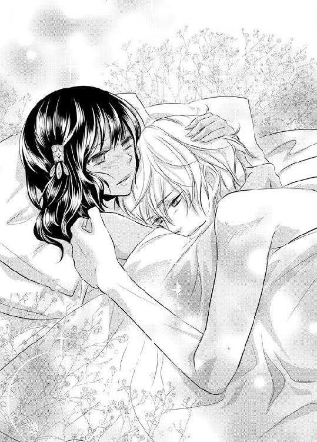
エピローグ 涙姫はもう泣かない
数日後。ある屋敷を、ラティカは両親と共に見上げていた。
「もうすぐ終わるわね」
母のメルダの言葉に、グレミオ神父が感心したように呟く。
「ずいぶんと段取りがいいんだね。普通こういうことはもっと時間がかかるものだと思ってたよ」
「それは勿論。なんたって私は公爵よ？ 私の地位を持てばこれくらい普通のこと」
屋敷の入り口からは次々に、ルビア兵が出てくる。今までこの屋敷の管理をルビア国王から任されていた兵たちだ。
彼らは屋敷から出ると入り口の前で列になり、最後の兵と共に出てくる屋敷の主の姿を待つ。ラティカたちはそれを少し離れた場所から見守っていた。
やがて、屋敷から一人の兵と貴族の姿が現れた。その最後の兵は、他の兵を纏める役にあるのだろう。彼らの中心に立つと合図をし、持っていた槍の柄を地面に一度強く叩きつけ、敬礼をして去っていく。
ラティカは兵たちの後ろ姿を見送ると、その屋敷の前まで進み貴族の少年に話しかけた。
「気分はどう？ ハウロック侯爵様」
「姫まで......やめてくれよ。恥ずかしい......」
貴族の衣を身に着けた少年が照れくさそうに頭を掻く。兵の前ではしっかりと整えられていた髪もあっという間にいつものボサボサ頭に変わった。
「せっかく、爵位が戻ったのだからもっと貴族らしくすればいいのに」
おちょくるようにラティカが呟くと「でもなぁ......」リュートはどこか拍子抜けしたように屋敷を見上げる。
「オレは本当に、親父の無実さえ晴らせればそれでもうよかったんだよ。まさか屋敷や爵位まで戻ってくるなんて思いもしなかった。しかも爵位まで上げられてさ......」
「あら、何か不満なのかしら？」
「伯爵から侯爵だ。本来なら滅多にこんな恩恵を受けられることなんてないんだよ」
気まずそうなリュートの元へ、メルダとグレミオもやって来た。
あの屋敷での一件の後、母はすぐにルビア王にかけ合い、今回の件についてすべてを報告したらしい。娘であり涙子であるラティカのことに、そしてハウロック家のこと。また、シアンが涙子であったこともだ。
それを聞いたルビア王は、メルダとリュートを称揚し、ハウロック家の一連の事件についての再調査を約束。元々リュートの言う通り、父の罪に関しては、罪を犯した証言や証拠となるものがあまりにもお粗末なものだったと判断されたらしい、無実はすぐに晴らされることになった。
そして今後ある通達をルビアに送ることを約束してくれた。それは涙子狩りの廃止の令だ。先代国王もこれに頷き、無実が晴れると同時にリュートの父がかつて願っていたことが、今後叶うこととなった。
今日晴れてハウロック家は、爵位を侯爵まで上げられルビアに返り咲いたのだ。
「恐らく今頃、侯爵となった貴方に冷たくしたことを、パーティに来てた他の貴族たちは後悔してるでしょうね」
メルダに笑いかけられ「でも、それはどうでもいいんだ」リュートはさっぱりとしたような表情で自分が育った屋敷を見上げた。
「爵位がなかったとしても、オレは騎士だ。......ああ。でもこれで、確かに堂々と言うことができるな......」
そこまで言うと、リュートは腰に差していた白銀の剣を引き抜き、自分とラティカの間の地面に突き立てた。そしてスッと立て膝をつき、腕を膝の上に乗せる。
「姫......いや、ラティカ」
少年の透き通ったまっすぐな瞳が、ラティカを見上げた。
「どうかオレの妻になってほしい」
ラティカは一瞬驚き、目を丸くする。でもすぐに笑顔を浮かべた。
「勝手に娘を連れ出して恋人同士になってたかと思えば、プロポーズまで......」
「でも、幸せそうならいいじゃない」
「それはそうだけど......でも僕は認めないよ、絶対にね」
実の父と母がそんな会話をしているとは、ラティカもリュートも気がつかなかった。
「これが、騎士流の求婚なんだ」
ニカッと笑った少年に、ラティカは「そう、それじゃあ」静かに右手を彼の前へと差し出した。
「騎士らしく、お願いね」
答えはもちろん決まっていた。ルビアではプロポーズにイエスと答える時は言葉では伝えない、ということも先日母から聞いた。
ラティカの手をリュートが下から掬い取り、そっと口づけを落とす。
傍で父の悲鳴に似た声と、それを諌める母の声が聞こえた。
ラティカにとって目の前の彼は紛れもない騎士なのだ。そして彼にとって自分は姫だ。
二人は幸せそうに互いに見つめ合っていた。
あとがき
前作『魔王子の花嫁』を読んでくださった方にはお久しぶりです。初めての方にははじめまして、七海ユウリです。
ティアラさんのお仕事では二作目になる今作はいかがだったでしょうか？
今回の主人公の一人であるリュートはとても書きづらいキャラでした。なんていうかもうおバカでどうにもならない。少しでも持ち上げれば調子に乗って、若さゆえ無謀なことにも挑戦しては失敗して、そのくせ格好はつけたがり、また調子に乗るという......。リアルに存在したら絶対友達になりたくないタイプ。
なのにどうして前作同様そんなヘタレなキャラを書いてしまうのだろう......。きっと口ではいやだと言っていても、そういうキャラが気になるんでしょうね。
そういえば著者紹介にも書きましたが、我が家に猫がまた増えました。五匹目です。
今まではペットショップでお迎えしたり、里親譲渡されたりした子ばかりだったのですが、初めての野良猫保護でした。ちなみに五匹目のその子は、今まで室内で生活したことがなく。袋という袋はすべて破り、乗ってはいけない場所に乗り、手加減なしで噛んだり頭突きしたりとやりたい放題。
重い心臓病を持っていて、朝晩の投薬と定期的な検査が欠かせない体とは思えないほどにアグレッシブで、安静という言葉を教えてあげたいくらいです。
それにしても病気猫は本当お金がかかりますね......。猫たちの一日の食費と自分の食費を比べて見たら数十円彼らのほうが高くてショックでした。
私は猫のために働いて生きてるんだなぁと......でも、わりと幸せだったりします。
さて、猫話をしてたらあっという間に最後になりました。
今作のキャラや肌の色合いなど、いつもより細かい設定を忠実に、美しいイラストを描いてくださったくまの柚子先生。
細かい設定を整理して修正指示を出し、前作同様に辛抱強く原稿が上がるのを待ってくださった担当様。
そしてこの作品を手に取ってくださった皆様。ありがとうございました。
またいつかどこかでお会いできると光栄です。
トゥルー ラブ 騎士の涙姫【イラスト付】
2012/2/1 電子版発行
東京都千代田区飯田橋３－３－１
著者 七海ユウリ
挿絵 くまの柚子
発行 プランタン出版
本データには購買者を特定できる個別のシリアル番号が刻印されています。
複製・頒布・転売等、著作権を侵害する行為は法律で禁じられており、
違反した場合は刑事罰および民事罰を招来することになります。
（c)2012 YUURI NANAMI,YUZUKO KUMANO